放置RPG『タスクバーヒーロー』9月初旬に大型アプデ「疫病地帯」実装へ―高難易度の新ステージやレベル90アイテム追加、キャラクタースキンのシステムも
https://
gamespark.jp/article/2026/0
8/20/170942.html?utm_source=twitter&utm_medium=social&utm_content=tweet
…
ダークファンタジーテーマのスキンが障害の補填として、期間限定で無料配布されます。
タイムライン要約
今日のまとめ
以下はタイムラインの要約です:
* **AI・テクノロジーの発展と課題**: iPhoneの次世代チップ性能向上予測やAI関連企業の大型IPO観測、データセンターへの巨額投資計画など、AIとテクノロジー分野の活発な動きが報じられています。一方で、さくらインターネットの不正アクセス問題や、VTuberのAIモデル利用に関する倫理的議論も浮上しています。
* **ゲーム業界の新作とアップデート**: 放置RPG『タスクバーヒーロー』の大型アプデ「疫病地帯」や、ローグライトアクション「7Trials」のBIC2026優秀賞受賞、ハクスラ×ストラテジー『ミスモン』のSteam配信など、新作やアップデート情報が豊富です。また、レトロゲームのエミュレーター進化に関するニュースも注目を集めています。
* **金融市場と経済の動向**: 世界的な長期金利の低下と円安傾向が続き、日本市場では半導体相場の陰で割安・高配当の中小型株に注目が集まっています。しかし、3カ月連続の貿易赤字や米連邦政府債務の拡大など、経済的な懸念材料も報じられています。
* **社会・政治と消費者行動の変化**: 残業「月45時間以内」の一律指導が緩和される見込みで、労働時間の柔軟化が模索されています。消費者行動では、バーベキューのプレミアム席など「値段に見合う体験」への支出が増加。また、中国人観光客が減少する中でも訪日外国人全体の消費額は増加しており、多様な国からの観光客取り込みが進んでいます。
* **AI・テクノロジーの発展と課題**: iPhoneの次世代チップ性能向上予測やAI関連企業の大型IPO観測、データセンターへの巨額投資計画など、AIとテクノロジー分野の活発な動きが報じられています。一方で、さくらインターネットの不正アクセス問題や、VTuberのAIモデル利用に関する倫理的議論も浮上しています。
* **ゲーム業界の新作とアップデート**: 放置RPG『タスクバーヒーロー』の大型アプデ「疫病地帯」や、ローグライトアクション「7Trials」のBIC2026優秀賞受賞、ハクスラ×ストラテジー『ミスモン』のSteam配信など、新作やアップデート情報が豊富です。また、レトロゲームのエミュレーター進化に関するニュースも注目を集めています。
* **金融市場と経済の動向**: 世界的な長期金利の低下と円安傾向が続き、日本市場では半導体相場の陰で割安・高配当の中小型株に注目が集まっています。しかし、3カ月連続の貿易赤字や米連邦政府債務の拡大など、経済的な懸念材料も報じられています。
* **社会・政治と消費者行動の変化**: 残業「月45時間以内」の一律指導が緩和される見込みで、労働時間の柔軟化が模索されています。消費者行動では、バーベキューのプレミアム席など「値段に見合う体験」への支出が増加。また、中国人観光客が減少する中でも訪日外国人全体の消費額は増加しており、多様な国からの観光客取り込みが進んでいます。
Newcore Gamesの新作「7Trials」は，冥界企業の正社員を目指して49日間を戦い抜く，スタイリッシュなローグライトアクションだった［BIC2026］
https://
4gamer.net/s/G103471.2608
20002
…
BIC 2026 AWARDSの一般アクション部門で優秀賞を受賞したタイトルを，会場でプレイしてみた

ナイジェリア財閥がアフリカ最大のIPOへ 石油子会社、三井化学と協業

ナイジェリア財閥がアフリカ最大のIPOへ 石油子会社、三井化学と協業
今年のiPhoneはチップが本命かも。A20 Proは性能18％、効率30％向上の噂
今年のiPhoneはチップが本命かも。A20 Proは性能18％、効率30％向上の噂 | ギズモード・ジャパン
さくらインターネット株価一時10.4％安 不正アクセス問題受け

さくらインターネット株価一時10.4%安 不正アクセス問題受け
高配当株は今がチャンス 半導体相場の陰で掘り出し物がたくさん
https://
nikkei.com/article/DGXZQO
UB196XQ0Z10C26A8000000/?n_cid=SNSTW005&n_tw=1787184472
…
半導体・AI関連など大型株が日本株市場の主役となる中、専門家は「もっと評価されていい実力のある中小型株が割安・高配当のまま取り残されている」と指摘しています。

高配当株は今がチャンス 半導体相場の陰で掘り出し物がたくさん
Polar Starチャレンジ 235日目午前の部
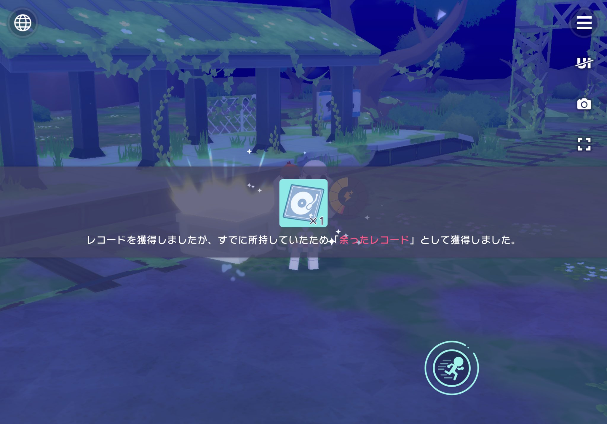

マイネームイズ
@MyNameIs_smrn
Polar Starチャレンジ 234日目午後の部 x.com/mynameis_smrn/…
現役の国務大臣からブロックされているアカウントです
軍手
@gunziotaku
@onoda_kimiさんはあなたをブロックしました
@onoda_kimiさんの公開ポストを表示することはできますが、ブロックされているためエンゲージメントを行うことはできません。さらに、@onoda_kimiさんをフォローしたりメッセージを送信したりすることもできません。
一週間も経たないうちに
また郡上に来るとはww
織田くん打ち込まれたのか
よその人が特定できないって事はないけど、大きなヒントが有ったので（建物：マンション）その近くの河川と橋の形状から出てきましたが、自販機の場所が分りません＞＜ それよりここ何処↓？？

嫌ならクレジットカードの加盟店から抜ければいいだけの話なんだよな
一回あれで店側とトラブルになり、クレジットカードの加盟店に電話して、話つけていただいたことがあった。普通に規約違反だから。
軍手
@gunziotaku
わたしがクレジットカード加盟店なのに規約違反して「◯◯円以上」としている店が大嫌いだし、あれは普通に年会費を払っている身としてなんとかしてほしい。
通報したら1000円キャッシュバックとかやってよ
軍手
@gunziotaku
わたしがクレジットカード加盟店なのに規約違反して「◯◯円以上」としている店が大嫌いだし、あれは普通に年会費を払っている身としてなんとかしてほしい。
わたしがクレジットカード加盟店なのに規約違反して「◯◯円以上」としている店が大嫌いだし、あれは普通に年会費を払っている身としてなんとかしてほしい。
モンスターパーティ編成ハクスラ×ストラテジー『ミスモン』9月8日Steam配信！ミスモン×装備×陣形の組み合わせで最強部隊を作ってオートバトル
https://
gamespark.jp/article/2026/0
8/20/170941.html?utm_source=twitter&utm_medium=social&utm_content=tweet
…
可愛らしいミスモンを率いて魔王討伐へ。1人用のゲームでエンドコンテンツも用意。
女子「もう！なんで女子トイレばっかり行列できるのよ！」→調べた結果・・・ #雑談・その他の話

女子「もう！なんで女子トイレばっかり行列できるのよ！」→調べた結果・・・ - オレ的ゲーム速報@刃の記事ページ
jin115.com
半分冗談なんですが、アメリカでSquareターミナル使うと必ずチップを選択する画面が表示されるんですよね。あれ同人誌即売会で導入すると、特定のサークルに応援もできるし、いいなあと。
軍手
@gunziotaku
いま弊サークルに導入してるポスレジにキャッシュレス端末を連動させる話を進めてるけど、東芝テックのレジに対応するCT-6100の決済代行会社は基本的にトヨタファイナンスみたい。
「アイデアに便乗OK」「批判は禁止」 筑波銀行、若手らの声拾う会議
https://
nikkei.com/article/DGXZQO
CC131I20T10C26A8000000/?n_cid=SNSTW005&n_tw=1787181833
…
20～30代の12人が業務の改善点などを自由活発に議論し、発言内容は人事評価にポジティブに反映されます。現場のリアルな声を経営陣に届ける提案書をまとめます。

「批判禁止」「便乗OK」 筑波銀行が若手らの声拾うWG立ち上げ
ハクスラ×ストラテジー「ミスモン」，9月8日にSteamで配信開始。30種のモンスターを育成して魔王討伐を目指す
https://
4gamer.net/s/G101494.2608
19046
…
戦闘は自動で進行し，武器の性能や属性，配置による相性が勝敗を左右。ラスボス撃破後には，さらなる強敵が待ち受けるやり込み要素も登場する
決算期の前は怒涛の営業電話が鳴ってたけどいまはなし。
いま弊サークルに導入してるポスレジにキャッシュレス端末を連動させる話を進めてるけど、東芝テックのレジに対応するCT-6100の決済代行会社は基本的にトヨタファイナンスみたい。
たまにしか訪れない横浜のバーがあり、その店は全東信との契約だったとのことで、災難でしたね…という話になった。市側だと救済策(セーフティーネット1号)を用意してるという話だったけど、あれ融資だよなあ
私が、負債なんですよね。
逆に今のフロンティアモデルが、一年後は低性能で成果物が負債となり得るのか、なったとしたら、みたいなのを考えるけど、
もうコードを読んでも質が私にはわからなくて議論を始めることすらできない。
mizchi
@mizchi
現状、安価なモデルで仕込まれた負債は累積的に響くので、最新モデル以外で生成したコードは結果として高くつく、と2年前からずっと言ってる。フロンティアモデル以外使う理由ない。
安いモデルをチューニングするコストは人件費やインフラに乗ってくるので合理的に考えれば手を出す理由がない
アンソロピックに2兆ドルIPO観測 「スペースX超え」AI経済圏の試金石

アンソロピックに2兆ドルIPO観測 「スペースX超え」AI経済圏の試金石
秋田AIデータセンター、県訪問のUAE大使も熱視線
https://
nikkei.com/article/DGXZQO
CC071RC0X00C26A8000000/?n_cid=SNSTW005&n_tw=1787140681
…
UAE側は、数千億〜1兆円規模を投資するとみられます。事業の成否を握るのが、電力確保のための洋上風力発電。同県は再エネ集積として有望で、大使は「再エネ分野で非常に先進的だ」

秋田AIデータセンター、県訪問のUAE大使も熱視線 洋上風力が命綱
腹痛。ロペラミド効かず。
残業「月45時間以内」の一律指導緩和へ
https://
nikkei.com/article/DGXZQO
UA195440Z10C26A8000000/?n_cid=SNSTW005&n_tw=1787153352
…
労基署は企業が従業員の健康確保に向けた措置を取っているかなどを考慮して柔軟に対応します。企業や労働者から労働時間を増やしたいとの声が出ていました。

残業「月45時間以内」の一律指導緩和へ 厚労省、健康確保には配慮
GO TO トラベルの時期に修行しなかった人は何やってたの？となる
長期金利、一時2.845%に低下 米国債買い戻しで世界の金利低下

長期金利、一時2.845%に低下 米国債買い戻しで世界の金利低下
男「車間距離近すぎ！」→後続車を踏切に置き去りにした結果、洒落にならない事態に #酷い話・事件

男「車間距離近すぎ！」→後続車を踏切に置き去りにした結果、洒落にならない事態に - オレ的ゲーム速報@刃の記事ページ
jin115.com
ITmedia NEWSさんがリポスト
OpenAI、ZDRを維持したまま悪用検知へ ログ保持を求めるAnthropicに対抗

OpenAI、ZDRを維持したまま悪用検知へ ログ保持を求めるAnthropicに対抗
佐々木俊尚＠「フラット登山 日本を歩く旅60」発売3週間で増刷決定！さんがリポスト
多くの識者が指摘してますが、最も打撃を受けたのは、日本国内の中華系インバウンドビジネス界隈の業者でしょう。中華系アプリ（予約・決済）、中国人ドライバーによる白タク、中華系観光バス、中華系民泊…。中国人観光客が激減したのに、インバウンド市場がむしろ増加したのは、そーゆーことかと。

佐々木俊尚＠「フラット登山 日本を歩く旅60」発売3週間で増刷決定！
@sasakitoshinao
今年、中国からの観光客は半減。しかし外国人観光客全体の数字は変わらず、消費額は逆に増えている。政治の影響を受けやすい中国人観光客依存からの脱却ができたのは結果として良かったと思います。「中国本土からの旅行者が半減したが、台湾、韓国、米国をはじめ、幅広い国・地域からの観光客が増加し
セガ・マスターシステムの3Dゲームを、「ニンテンドー3DS」の裸眼立体視で楽しめるエミュレーターが登場!!
本作は『スペースハリアー3D』『ザクソン3D』『アウトラン3D』など、専用3Dゴーグル「3-Dグラス」に対応した8タイトルを、3DSの立体視で体験可能

中道元議員、政治団体「護憲リベラル共生」設立へ 立民現職も参加か
https://
nikkei.com/article/DGXZQO
UA1991I0Z10C26A8000000/?n_cid=SNSTW005&n_tw=1787180017
…
川内博史元衆院議員らが設立する団体の略称は「ゴリラ」。中道改革連合、立憲民主、公明の3党の合流協議をけん制しリベラル勢力を結集する狙いがあります。

中道元議員、政治団体「護憲リベラル共生」設立へ 立民現職も参加か
テスラさんがリポスト
おはようございました。
明日あさっては骨休め。
車止められずに結構な距離を引き返して観察
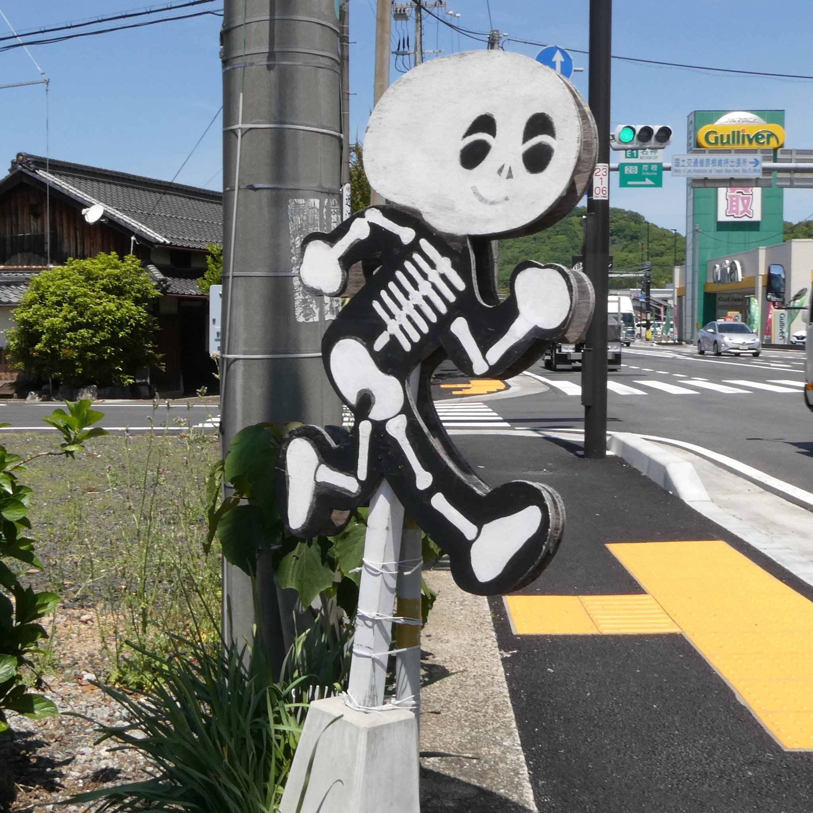

＞ω＜さんがリポスト
Arduino IDE 1.xはデバッガも使えないし私の定義ではIDEではないんだけど、Arduino IDE 2.xはEclipse Theiaベースなのでデバッガも使えてちゃんとIDEになった。

ﾋﾞｰﾙ星人
@tedd_okano
Arduino IDE 2ってデバッガ起動ボタンが付いてることに気づいた → 使えるようにしてみた．
Arduino IDE上でデバッガが動くのを初めて見た（´(ｪ)｀;
古い居酒屋に入ったら客がいない中、ただ1人いた老齢のおかみが「いま女の子が来るから！いま女の子が来るから！」って連呼して、『え、ここそういう店？でもこの店の感じだと女の子って言っても別に若くないんだろうな…』とか思いつつ小一時間いたら、最後まで誰も来ませんでした。予想外れたね。
『ど根性ガエルの娘』全巻「70％オフ」セール終了間際！全7巻「5,313円」→「1,589円」最悪な気持ちになる呪いの漫画！『拳闘暗黒伝セスタス』セールも！本日23時59分まで #漫画・アニメ等
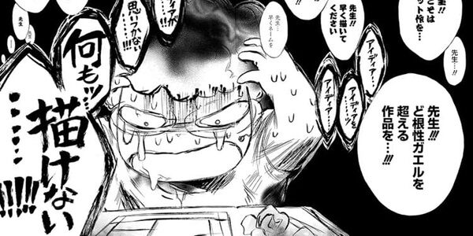
『ど根性ガエルの娘』全巻「70％オフ」セール終了間際！全7巻「5,313円」→「1,589円」最悪な気持ちになる呪いの漫画！『拳闘暗黒伝セスタス』セールも！本日23時59分まで - オレ的ゲーム速報@刃の記事ページ
jin115.com
それではこれより、今回の旅の最終目的地、松島へ。

ドリームキャスト＆NAOMI基板エミュ『Flycast』がv2.7に大型アップデート!!
今回遂に日本語UIに対応したほか、NAOMIのマルチスクリーン筐体に対応、フレームレート検出・ペーシング、通信機能やAndroid版なども大幅強化された
セガ好きなエミュおじさんには朗報だぞッッ!!
https://
github.com/flyinghead/fly
cast
…

記事を公開しました。
「AIと古代ローマの奴隷を比べてみた」
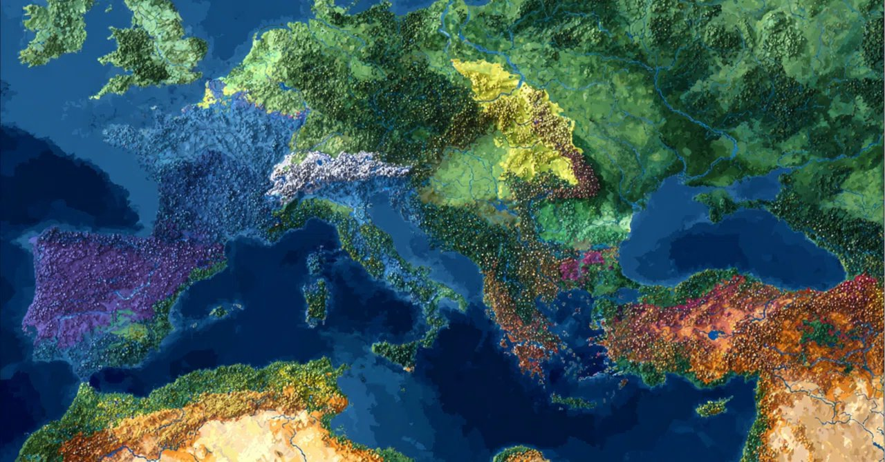
AIと古代ローマの奴隷を比べてみた｜我妻幸長
2万円台で手に入る日本製自動巻き時計は絶対に買い。人生の節目に手に入れたい隠れ名品 BuyPR
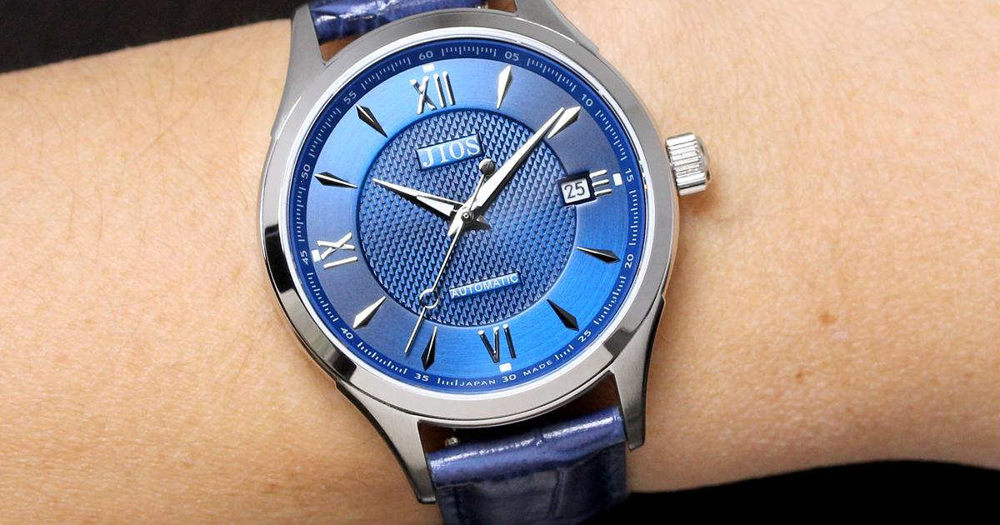
2万円台で手に入る日本製自動巻き時計は絶対に買い。人生の節目に手に入れたい隠れ名品 | ギズモード・ジャパン
日経平均株価、反発で始まる 米株高が追い風

日経平均株価、反発で始まる 米株高が追い風
【20周年アンケート】気づけば便利ガジェットを探す生活になってしまった

【20周年アンケート】気づけば便利ガジェットを探す生活になってしまった | ギズモード・ジャパン
メモ。「ドッジ」は、内部的には「無敵*移動」にすぎないので、「ドッジの動きを100パターン」ぐらいつくって、「敵の攻撃にあわせて適切なドッジを自動選択」していけば、すごくスムーズな剣戟ができないやろうか…と思うなど。

スチまと / STEAMおすすめゲーム新作など紹介 Steam
@stmatomato
コロコロ回避？そんなもんない。
3カ月連続の貿易赤字、7月6345億円 原油など輸入コスト上昇響く

3カ月連続の貿易赤字、7月6345億円 原油など輸入コスト上昇響く
【物議】人気配信者「VTuberにバリバリAIのモデル使ってるのよくない。イラストレーターさんの仕事削ってる。AIって言い方悪いけど『掠め取って』るから」 #VTuber
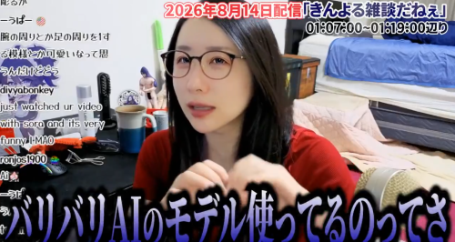
【物議】人気配信者「VTuberにバリバリAIのモデル使ってるのよくない。イラストレーターさんの仕事削ってる。AIって言い方悪いけど『掠め取って』るから」 - オレ的ゲーム速報@刃の記事ページ
jin115.com
監視カメラと発電機で夜を越すサバイバルホラー『TIC-TAC: Twelve o'clock』配信開始―深夜0時、学校の廊下が歪み始める
https://
gamespark.jp/article/2026/0
8/20/170940.html?utm_source=twitter&utm_medium=social&utm_content=tweet
…

スマホゲームのセルラン分析（2026年8月6日〜8月12日）。今週の1位は「FGO」。4月〜6月に登場した新作の国内ランキングも
https://
4gamer.net/s/G026651.2608
19006
…
「アークナイツ：エンドフィールド」は「リーノ」をピックアップした特別スカウトで収益を伸ばした。新作「幻想水滸伝 STAR LEAP」は9位にランクイン

『超かぐや姫！』公式さんがリポスト
映画『超かぐや姫!』×小僧寿しコラボキャンペーン 2026年9月9日(水)より開催決定！
小僧寿しでは、映画『超かぐや姫!』とのコラボキャンペーンを期間限定開催！作品の世界観をイメージしたコラボ商品や描き起こしイラストを使用した限定コラボグッズも販売予定！
詳細は後日あらためてご案内します。

みずほ証券、夕方・土日も顧客相談 都内に新型拠点設立
みずほ証券、夕方・土日も顧客相談 都内に新型拠点設立
なお、初代ゲームボーイの液晶の他に「GBA-SPの液晶も物理ベースで再現している」ので、子供の頃にGBA-SPで様々なゲームをプレイした中年諸氏も、もしかしたら必見かもしれない。

初代ゲームボーイの液晶を、物理モデルベースで再現するRetroArch用シェーダーが登場!!
本作は、単なる色調補正やフレームブレンドとは異なり、STN液晶の応答速度、残像、クロストーク、スキャンタイミングの他に、経年劣化まで計算して、実機特有の表示を再現している

『卒業アルバムの彼女たち』第巻/伸びた髪(
@NobiTakami0129
)先生の新刊がやっと購入できました。
コミケ(C108)では、色紙もゲットできました！

ポルトガル、公共の場で顔覆う服装禁止 イスラム教徒のニカブ対象
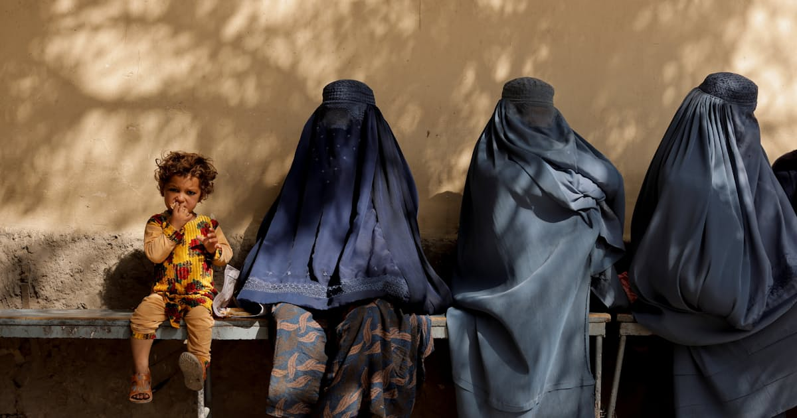
ポルトガル、公共の場で顔覆う服装禁止 イスラム教徒のニカブ対象
順番待ちなの飛び越えようとすんな
もう私に害しか与えないなら捨てたい
ポッドキャストは「とれる選択肢を無駄に減らさない」
百得ナイフは、「とれる選択肢をすべて実行すると死ぬ」。
という、実行前の実行後のお話ですね。むしろセットです。
手札を多くしつつ、できるだけ汎用解…（あと63文字）
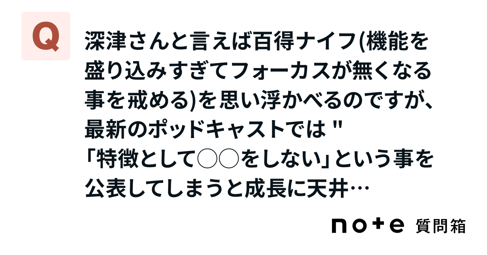
深津さんと言えば百得ナイフ(機能を盛り込みすぎてフォーカスが無くなる事を戒める)を思い浮かべるのですが、最新のポッドキャストでは "「特徴として◯◯をしない」…｜深津 貴之 (fladdict)...
ジャガイモシロシストセンチュウに感染すると、その畑で数年ジャガイモが作れなくなります。
無用なリスクを増やす高市政権。
NHK北海道
@nhk_hokkaido
米産の生ジャガイモの輸入解禁 ＪＡ北海道「容認できない」
https://
news.web.nhk/newsweb/na/nb-
7000087430
…
https://
news.web.nhk/newsweb/na/nb-
7000087430
…
記事を読む速度を、書く速度が完全に超えてしまった。
もはや、人間がボトルネックなのは明白だな。
『淫夢』コンテンツ、ガチで再興してしまう・・・とんでもない大流行が再び #ニコニコ動画

『淫夢』コンテンツ、ガチで再興してしまう・・・とんでもない大流行が再び - オレ的ゲーム速報@刃の記事ページ
jin115.com
暑さのツケは翌日に…「時間差熱中症」に注意
https://
nikkei.com/article/DGXZQO
UD241EQ0U6A720C2000000/?n_cid=SNSTW005&n_tw=1787113175
…
日中の暑さの疲労が蓄積し、就寝中や起床直後に発症する熱中症が目立っています。東京都内では搬送者の2割が深夜0時台から午前10時台に運ばれています。
暑さのツケは翌日に…「時間差熱中症」に注意 就寝前に水分補給を
なるせひろのりさんがリポスト
"世界最大級の麻辣湯（マーラータン）チェーンを展開する「楊国福グループ」（中国・上海）が仙台市青葉区に出店するフランチャイズ店「楊国福麻辣湯仙台駅前店」が、17日のプレオープンの際、開店祝いの花に無断で著名人の名前を使用"
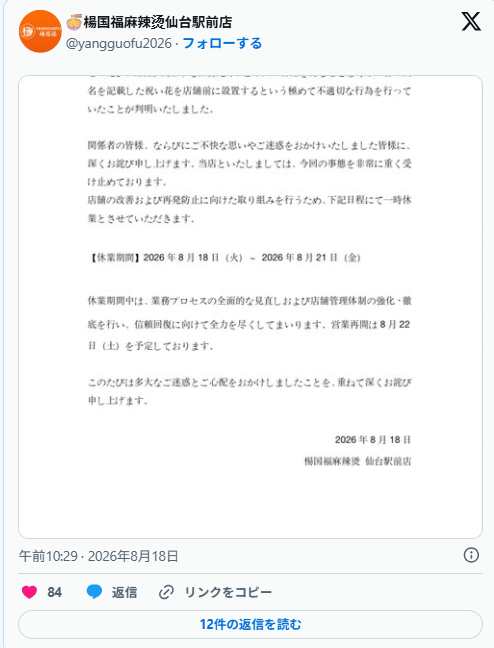
開店祝いの花に鳩山由紀夫元首相や羽生結弦さんの名前無断使用 麻辣湯チェーンと店が謝罪 楊国福麻辣湯仙台駅前店 : 痛いニュース(ﾉ∀`)
なるせひろのりさんがリポスト
劇場アニメ『機動戦士ガンダムSEED FREEDOM ZERO』特別番組が10月9日に配信決定！『SEED FREEDOM』の“前日端”となる作品
https://
news.denfaminicogamer.jp/news/260820f
『SEED FREEDOM』企画中にシリーズ構成・両澤千晶氏と森田繁氏、福田己津央監督によりシナリオが描かれた。今年5月に劇場公開の決定が発表
中道落ちするより遥かにマシということです
哲学ニュースnwk
@nwknews
【速報】新政治団体「ゴリラ」爆誕ｗｗｗ 護憲・9条堅持・ジェンダー平等・長子皇位継承を掲げる 立憲現職や中道落選者ら約20人参加へ
https://
nwknews.jp/archives/62538
36.html
…
保育園どうしてんの
小宮 滉(Komiya Akira)
@komiya5395
大企業の朝型勤務といえば、伊藤忠
伊藤忠は夜8時以降の残業を原則禁止。
その代わり朝は5時から働けて、朝食も無料。
本社では6割の社員が朝型で動いているそう。
みんな朝から集まって、夕方には帰る。
https://
x.com/kinoshitay/sta
tus/2089245421927649541?s=20
…
撮り鉄版の長文楠木ともり構文を投稿するためにプレミアム課金しようかな(しません)
「腹が空いたので」91歳女性宅に侵入し殺害？ 山林に遺棄したベトナム人容疑者“無軌道すぎる犯行” #ldnews
https://
news.livedoor.com/article/detail
/32110448/
… とりあえず極刑で。
「腹が空いたので」91歳女性宅に侵入し殺害？ 山林に遺棄したベトナム人容疑者“無軌道すぎる犯行”
気軽に持ち運べる、Ankerのポタ電。冷蔵庫へ給電できる大容量

気軽に持ち運べる、Ankerのポタ電。冷蔵庫へ給電できる大容量 | ギズモード・ジャパン
携帯シェーバー、正直あなどってた。独立5枚刃で夕方ヒゲもサッと処理できました BuyPR

携帯シェーバー、正直あなどってた。独立5枚刃で夕方ヒゲもサッと処理できました | ギズモード・ジャパン
ガイドライン違反を指摘されながらも「ずっとグレーゾーンでやっている」「外野はとやかく言うな」と逆上する姿は我々にある界隈の姿を想起させます。
そう──撮り鉄です。
住民からのマナー違反への指摘に聞く耳を持たず、警察を呼ばれると通報した側を恨む態度、その自浄作用の無さで(文字数)
ICC赤根智子所長に米制裁、各国が「強い危機感」 日本に弱腰批判も
https://
nikkei.com/article/DGXZQO
GN19AS90Z10C26A8000000/?n_cid=SNSTW005&n_tw=1787179204
…
「ICCと赤根所長、その使命を支える職員を断固支持する」。フォンデアライエン欧州委員長は連帯を表明。海外からアメリカの制裁に反発する発言が相次ぎました。

ICC赤根智子所長に米制裁、各国が「強い危機感」 日本に弱腰批判も
オタク起床

ITmedia NEWSさんがリポスト
高度なAIのサイバー攻撃、どう対策？ 企業が知るべき「スピード格差」の埋め方

高度なAIのサイバー攻撃、どう対策？ 企業が知るべき「スピード格差」の埋め方
ポン☆潤々さんがリポスト
◤ 場面写真解禁 ◢
⠀
『ディズニー ツイステッドワンダーランド ザ アニメーション ～エピソード オブ サバナクロー～』
⠀
“ワルだくみ”を予感させる
サバナクロー寮の
レオナ、ラギー、ジャックの新カット公開
⠀
さらに！新ボイスキャスト発表
✦比良坂悠河 ：#ファイルーズあい


バーベキューもプラス1000円でVIP気分 プレミアム席続々
https://
nikkei.com/article/DGXZQO
UB108Y30Q6A710C2000000/?n_cid=SNSTW005&n_tw=1787142770
…
「ソファでくつろぎながら炭火コンロで焼き上げられる」。プレミアム席が映画館や乗り物以外にも広がっています。値段に見合う体験ならお金を払う消費者が増えているためです。

バーベキューもプラス1000円でVIP気分 プレミアム席に企業参入続々
二千円札を知らない世代
実家で小1甥っ子にお小遣い→「こんなの見たことない」と言われ…… 強制両替させられた“まさかのお札”に「久しぶりに見た」
https://
nlab.itmedia.co.jp/cont/articles/
3977250/
…

そうだ アニメ，見よう：第266回は「対ありでした。 〜お嬢さまは格闘ゲームなんてしない〜」。カプコンの全面協力による対戦シーンに注目
https://
4gamer.net/s/G033856.2608
18026
…
制作はディオメディアが担当。格闘ゲームの祭典「EVO Japan」との相互コラボも実施
仲間と作ったゲームの著作権の行方，パブリッシング契約を打診された，子どもが誤って課金したときの返金対応，ゲーム会社から損害賠償請求された，さてどうする？ 弁護士が書籍「ゲームと法律 攻略ガイドブック」を書いたワケ
https://
4gamer.net/s/G999112.2608
05013
…

Google、大学生向けに「Google AI Plus」を1年間無料提供 「Gemini」アプリに学生向け新機能も

Google、大学生向けに「Google AI Plus」を1年間無料提供 「Gemini」アプリに学生向け新機能も
マチアプで知り合った女の子と人生初デートしたんやが

マチアプで知り合った女の子と人生初デートしたんやが : ハムスター速報
日本共産党と玉城デニー氏が、公職選挙法違反である事前運動をしてる模様。

さくら 沖縄に新知事を
@HisuiSakura_jpn
「沖縄市議会議員選挙、日本共産党に2議席お願いします。」
日本共産党さん。
これは選挙運動にあたりませんか??
@OPP_bouhan
@jcpshimabuku
@koike_akira
@jcp_okinawa x.com/A_shirou_t01/s…
昔はサークル入場前にサンライズ瀬戸号を使ってたんですが、サンライズ瀬戸際事故以降は最終新幹線を使って前泊するようになりました。遅刻リスクには変えられない。
米欧の長期金利が急低下、買い入れ奏功 ドル全面安で円158円台前半
https://
nikkei.com/article/DGXZQO
GN19B710Z10C26A8000000/?n_cid=SNSTW005&n_tw=1787177986
…
米財務省の「介入」を受け米国債を売り持ちしていた投資家が買い戻し。金利低下を受け株や金など幅広い資産に買いが入りました。影響は円相場にも及びました。

米欧の長期金利が急低下、買い入れ奏功 ドル全面安で円158円台前半
ふぇむ(せかんど！)さんがリポスト
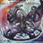

日経平均株価、米株高と自律反発狙いの買いが支え（先読み株式相場）
日経平均株価、米株高と自律反発狙いの買いが支え（先読み株式相場）
コンピューター制御が入ると車も機械もかなり大変な気配が。
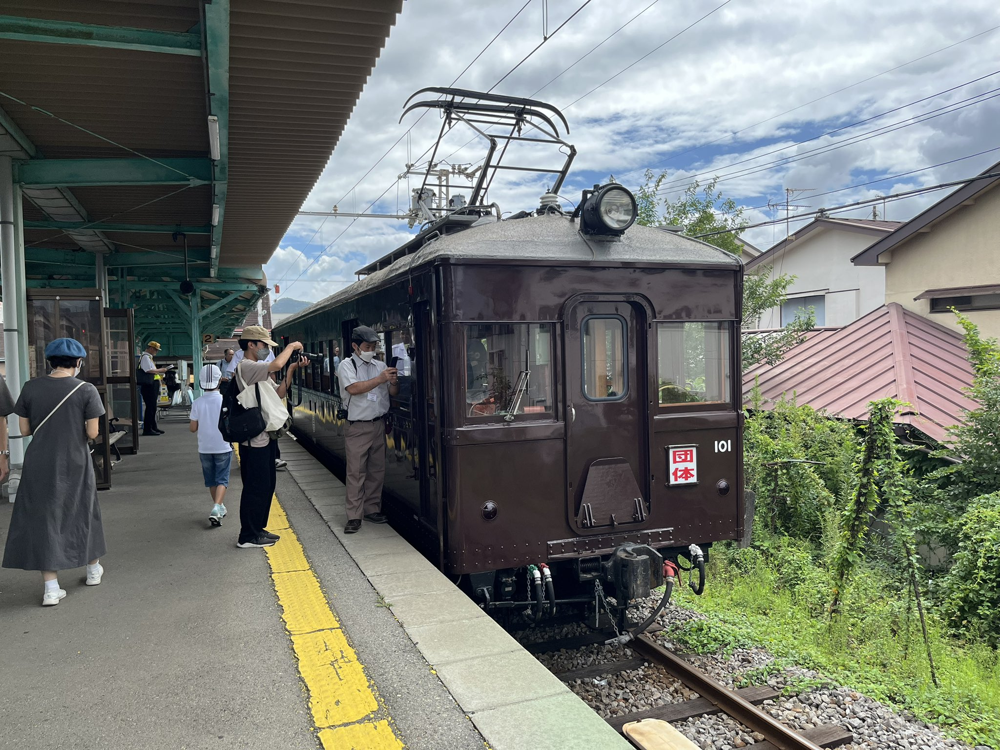
ちゅうおーみん【3】
@HornGeek115
デハ101は約100年走ってるけどさ、233とか最近の新型車両もそんくらいやる気出せば走れるんかな？
「死ぬまでに観るべき映画」なんて手垢のついたテーマだと分かってる。
でもググって出てくるランキングは判で押したように無難な名作揃いで、正直あくびが出る。
このフリから1本目ショーシャンクなのあくび超えて爆睡なのでは？
世界のビーチ消失危機、24%で浸食 観光産業を直撃
https://
nikkei.com/article/DGXZQO
GR06AIN0W6A800C2000000/?n_cid=SNSTW005&n_tw=1787144346
…
スペイン・バルセロナ近郊のモンガットでは、砂浜の約7割が消失。気候変動に伴う海面上昇や嵐の増加が影響しています。2100年までに世界の砂浜の半分が失われるとの予測もあります。
世界のビーチ消失危機、24%で浸食 観光産業を直撃
ゲームはいかにして“世界”になるのか。「ブルーアーカイブ」のキム・ヨンハ氏が語る，サブカルチャーとIP，そしてAI時代に人間だけが持てる「審美眼」［BIC2026］
https://
4gamer.net/s/G091533.2608
19011
…
スーツケースを持った出発寸前のクリエイターをインタビューしたのは初めてです
比較する事がそもそも間違っている
と「断言」する事自体がそもそも間違ってる
何個も有るのに、一つしか手に入れられないとすれば、そりゃ比べるよ
スーパーでバナナ選んだ事無いんじゃないやろか
選んで持って帰って食べようとした時初めて判る事が有るやろ
手話ライブ通訳にも対応。Pixel 11ならAIのGeminiでこんなこともできる

手話ライブ通訳にも対応。Pixel 11ならAIのGeminiでこんなこともできる | ギズモード・ジャパン
自由と安定、あなたはどちらを選びますか | 佐々木俊尚「毎朝の思考」/ Voicy - 音声プラットフォーム

自由と安定、あなたはどちらを選びますか | 佐々木俊尚「毎朝の思考」/ Voicy - 音声プラットフォーム
学歴で人生がある程度は固定されていた昔と、学歴なんか関係なしにあらゆる自由が確保されている現代。この時代の変化について、Voicyで語っています。↓
柏崎刈羽原発が再稼働したことで、東京電力の脱石油が一気に進む。祝杯。「原発電力が届き始めてから、首都圏では石油火力の稼働が約4カ月間ゼロだった。脱・石油火力へあと一歩だ」↓
脱石油火力、首都圏あと一歩 4カ月発電ゼロ、原発が奏功 - 日本経済新聞

脱石油火力、首都圏あと一歩
◆ ドル安・金利低下
【NY市場】
・ドル円 158円台前半に
・米長期金利が低下
・米国株は小幅高
米政府が国債の買い戻しを倍増させると発表し、市場が反応しました。FOMC議事要旨のポイント含め、noteで解説しています
note「朝メモ」
https://
note.com/goto_finance/n
/n0e3e5be64035
…

拝啓、アルコール依存症になりまして。｜おさみる

拝啓、アルコール依存症になりまして。｜おさみる
壮絶なアルコール依存症の現実を、見事なまでの名文で言語化している。ただただ恐ろしいです。↓
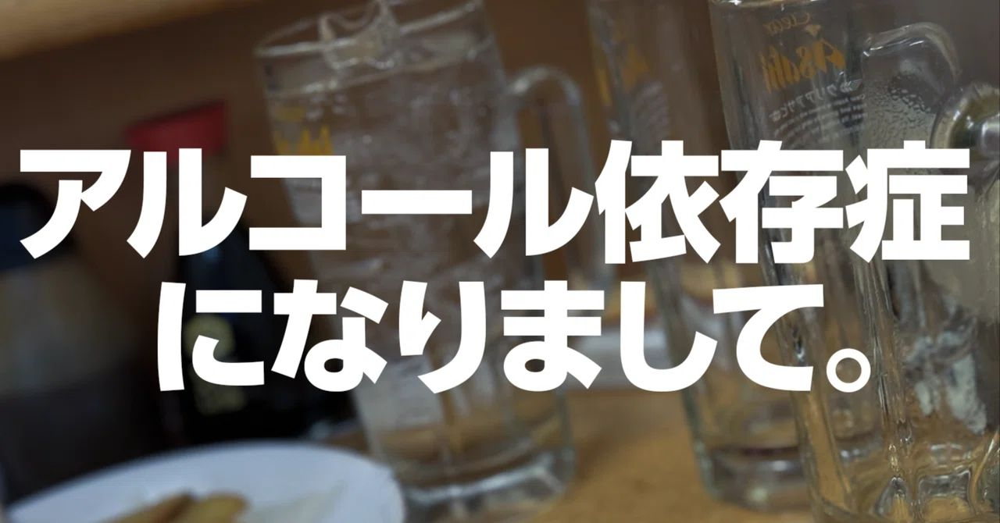

中国人観光客「半減」で吹き飛んだ5210億円 それでも全体消費額は前年超え、訪日客全体もほとんど減っていない（J-CASTニュース） - Yahoo!ニュース

中国人観光客「半減」で吹き飛んだ5210億円 それでも全体消費額は前年超え、訪日客全体もほとんど減っていない（J-CASTニュース） - Yahoo!ニュース
今年、中国からの観光客は半減。しかし外国人観光客全体の数字は変わらず、消費額は逆に増えている。政治の影響を受けやすい中国人観光客依存からの脱却ができたのは結果として良かったと思います。「中国本土からの旅行者が半減したが、台湾、韓国、米国をはじめ、幅広い国・地域からの観光客が増加し
映画『平行と垂直』オフィシャルサイト
映画『平行と垂直』オフィシャルサイト
大阪・堺を舞台に、ASD（自閉スペクトラム症）の兄と、支える妹。その妹に結婚話が持ち上がり……という物語。すべてが素晴らしい作品だった。ほんとうにおすすめ。安田章大さんの演技も最高でした。↓


あまりにもデフレ時代が長すぎて、日本人の多くはデフレしか知らない。マスコミもそうですね。このマインドを乗り越えられれば。「日本人は、インフレの世界で生きるとはどういうことなのかを、まだ充分に飲み込めていません。頭が追いついていないのです」「25年間、経営者も政策当局者もデフレとゼロ
長年のデフレから脱却した日本は「新たなインフレの世界」に順応できるのか | 英紙が見た「脆さを抱えたままの日本経済」

長年のデフレから脱却した日本は「新たなインフレの世界」に順応できるのか | 英紙が見た「脆さを抱えたままの日本経済」
ソーサーはカップの内容を受け止められる容積があるとどこかで聞いたのを思い出して、手元のソーサーに水を入れて料理計量カップに入れたら、それなりの容積がありました。浅いのに、意外と入るものなのだなと。
もしも3kwも消費するセンサーが必要な自動運転だと、BEVでも、電力消費が酷すぎて使い物にならなさそう。
3kwあると、だいたい1時間あたり24kmくらい走れる。
https://
x.com/loxoninpap/sta
/loxoninpap/status/2090028432851701961
…
日本は「月面輸送」を産業にできるか？ 三菱重工と組んだispace、国産ロケットを選んだ3つの理由
日本は「月面輸送」を産業にできるか？ 三菱重工と組んだispace、国産ロケットを選んだ3つの理由
サッカーのヘディング、直後に脳の損傷指標が上昇 300人の実測データ 米医学誌に掲載

サッカーのヘディング、直後に脳の損傷指標が上昇 300人の実測データ 米医学誌に掲載
チックによる「汚言」症状をもつ、女性のいち患者として｜ストレンジ・羊
チックによる「汚言」症状をもつ、女性のいち患者として｜ストレンジ・羊
チック症状があり、汚言を口にしてしまう女性が自己の症状について詳細に説明してくれてる記事。勉強になりました。「これは、肌寒い時に身体をぶるっとしたくなるとか、指をポキポキ鳴らしてしまうのに近い。肌寒い時、身体をぶるっとしなくても耐えられるが、皮膚のうえで鳥肌の子供みたいなのがゾワ
JALが「機内持ち込みお手荷物は、合計2個まで」「規定を超えるお手荷物は、持ち込みいただけません」とXなどで呼びかけ。「お土産も個数に含まれます」とも。お土産は別腹みたいな感じで三つも四つも持ち込んでる人たまにいますよねえ。↓
「荷物、多すぎませんか？」 JALが今度は手荷物に “はっきり物申す” ワケ

「荷物、多すぎませんか？」 JALが今度は手荷物に “はっきり物申す” ワケ
中国側の招待で中道・自民・立憲の議員が北京へ「日中関係は現在すべてのパイプが失われ過去最悪の状況」 #韓国・中国

中国側の招待で中道・自民・立憲の議員が北京へ「日中関係は現在すべてのパイプが失われ過去最悪の状況」 - オレ的ゲーム速報@刃の記事ページ
jin115.com
みずほなど3メガ銀、「金利以外」の優待競う
https://
nikkei.com/article/DGXZQO
UB200DQ0Q6A720C2000000/?n_cid=SNSTW005&n_tw=1787143943
…
みずほ銀行は旅行や人間ドックなどを割引する優待を大幅に拡充、三菱UFJ銀行も会員制サービスを改良します。一定規模の金融資産を抱える個人顧客の生活に入り込む戦略で預金拡大を目指します。

みずほなど3メガ銀、「金利以外」の優待競う 旅行手配や健康相談
おはようございます。今日は8月20日、木曜日。
ザクIIを“旧ザク”に魔改造
ザクIIのガンプラをモデラーが本気で改修すると…… ありえないビフォーアフターに反響「どこをどうやった」
https://
nlab.itmedia.co.jp/cont/articles/
3972633/
…


これがお洒落なのか･･･私にはよくわからんが。何だろう漂ってくるチンピラ感。

爆サイ.com【公式】ツイッター
@bakusai_x
【衝撃】四千頭身・都築拓紀メンバー、「僕が日本一オシャレ」とありえない服の着方をしていた
このファッションに「クソダサい」「ゴチャゴチャしとるなー」などの声が寄せられる。
オシャレさんじゃなくて、おさわりさんw
#都築拓紀 #四千頭身
x.com/71422950649234…
強く賛同。
苺豆富
@x_ichigo_tofu_x
私は安倍晋三氏と同じ「炎症性腸疾患」の難病患者です。
当時、このポストのように「安倍晋三は会食に行っているが、本当に潰瘍性大腸炎なのか？」と疑うポストが散見されました。
ハッキリ申し上げますが、このポストのコメント欄も含め、難病患者に対する配慮は全くありません。酷いものです。 x.com/abed_gp/status…
どれだけ違法なベトナム人がいるかよくわかるな。

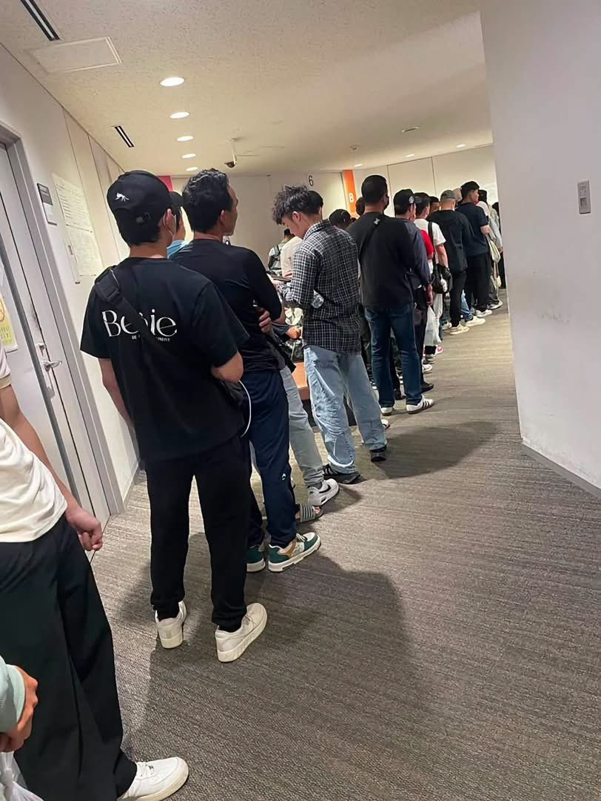
ザン ベトナム出身♡日本
@VietnamZannChan
ベトナム政府が政令を出し、9月10日から海外で失踪・不法滞在・不法就労した者に、母国で8000万〜1億ドン（約48万〜60万円）の罰金が科されることで
米財務省の国債買い入れ マーケット想定外、「政権の金利警戒強い」

米財務省の国債買い入れ マーケット想定外、「政権の金利警戒強い」
米連邦政府債務、40兆ドル突破 金利上昇で利払い費が膨張
米連邦政府債務、40兆ドル突破 金利上昇で利払い費が膨張
テスラさんがリポスト
さよならララ第七話。ルカ家の訪問からの帰りのシーン。 大津市瀬田にある建部大社の裏手の川（高橋川）に架かる橋付近の風景が使われていると思われます。聖地巡礼の参考になれば幸いです #さよならララ #聖地巡礼 #さよならララ滋賀めぐり #建部大社

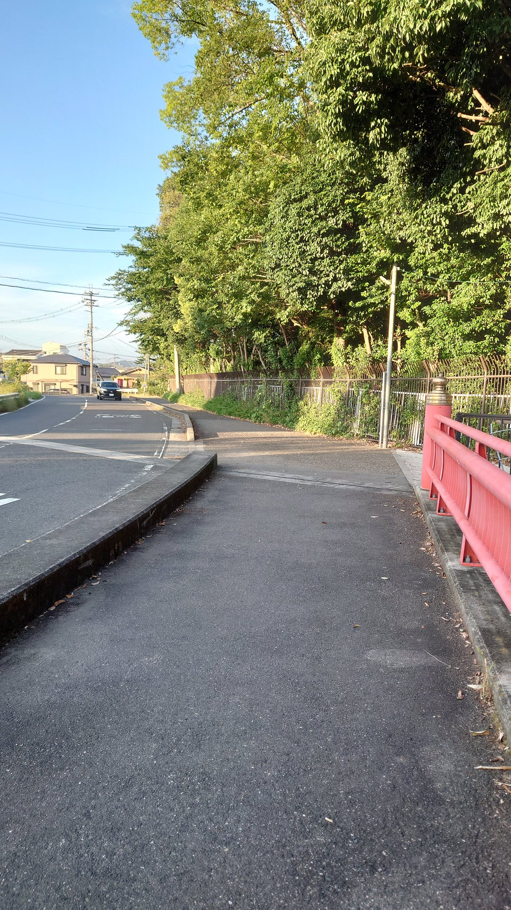

ヒト型ロボ導入台数、中国が世界全体の8割
https://
nikkei.com/article/DGXZQO
GM175V30X10C26A8000000/?n_cid=SNSTW005&n_tw=1787137481
…
中国産ヒト型ロボットの勢いが止まりません。EVやスマホの生産で培った、センサーや駆動装置など部品供給網の厚みという優位性を武器に、量産も始まっています。
ヒト型ロボ導入台数、中国が世界全体の8割 技術未熟でもデータ蓄積
なるせひろのりさんがリポスト
さくらインターネットの販売管理システムに不正アクセス、最大約136万アカウントの契約情報が閲覧された可能性 - INTERNET Watch
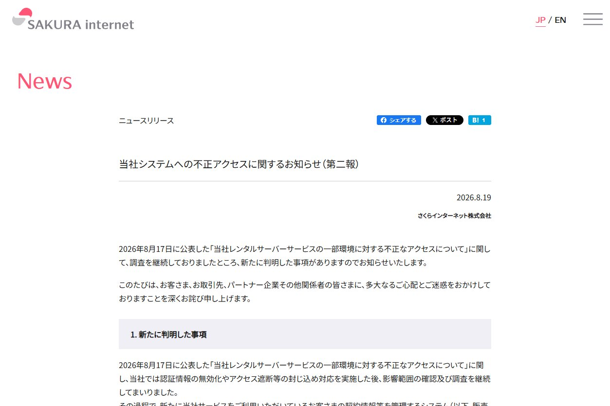
さくらインターネットの販売管理システムに不正アクセス、最大約136万アカウントの契約情報が閲覧された可能性
AI計算資源の先物市場、創設に3陣営名乗り 当局もルール整備へ
AI計算資源の先物市場、創設に3陣営名乗り 当局もルール整備へ
ダボス会議のWEF次期会長、ラガルド氏が「受諾の用意」 米報道

ダボス会議のWEF次期会長、ラガルド氏が「受諾の用意」 米報道
米欧の長期金利低下、買い戻し策が奏功 ドル全面安で円158円台前半
米欧の長期金利低下、買い戻し策が奏功 ドル全面安で円158円台前半
なるせひろのりさんがリポスト
「トヨタbZ4Xツーリング」の試乗インプレッション。220km余りの試乗でしたが、普通に乗ってこういう電費が出るBEVには初めて出会いました。（藤沢 勝） #トヨタ #トヨタ自動車 #トヨタbZ4X #bZ4X #トヨタbZ4Xツーリング #bZ4Xツーリング #電気自動車 #BEV

トヨタbZ4XツーリングZ（FWD）【試乗記】 ざっくりさん、でも大丈夫 - webCG
しっかりした就業先や留学先があるのに、トランプ政権になって以降、一旦国に戻っての再入国等が厳しくなったという話はよく聞きます。
軍手
@gunziotaku
実際にアメリカ旅行すると、マジでトランプは最悪で特級呪物だと思い知ることになる
実際にアメリカ旅行すると、マジでトランプは最悪で特級呪物だと思い知ることになる
久しぶりにトランプ成分を取った


100vs100の第一次世界大戦シューター『Over the Top: WWI』米軍参戦無料DLC「US Expeditionary Forces」ローンチトレイラー公開―本編の週末無料プレイも実施
新たな武器や車両、制服、ボイス、マップ、楽器など様々な新要素を特色としています。
https://
gamespark.jp/article/2026/0
8/20/170939.html?utm_source=twitter&utm_medium=social&utm_content=tweet
…
なるせひろのりさんがリポスト
チェリー（奇瑞汽車）、日本市場への参入を示唆 「市場で実績を重ねてきた商品を日本の皆さまにも提供したい」
https://
car.watch.impress.co.jp/docs/news/2133
302.html
… #チェリー
東京電力、株主の東京都からも失注 東北電や関電が崩す首都圏の牙城

東京電力、株主の東京都からも失注 東北電や関電が崩す首都圏の牙城
米マーベルがGoogleにAI半導体 1.9兆円の出資権利も付与
米マーベルがGoogleにAI半導体 1.9兆円の出資権利も付与
老いがあるので火曜日にはしご酒したら水曜日がいつの間にかなくなっていていま起きた
NYダウ、4営業日ぶりに反発 米長期金利の低下が支え

NYダウ、4営業日ぶりに反発 米長期金利の低下が支え
日産やホンダ、自動運転の活路は提携策 「組み立て屋」への転落阻止
日産やホンダ、自動運転の活路は提携策 「組み立て屋」への転落阻止
むくり。
個人株主の増加数、首位ソフトバンク 若年層取り込み半数が50歳未満

決算:個人株主の増加数、首位ソフトバンク 若年層取り込み半数が50歳未満
日本経済新聞 電子版（日経電子版）さんがリポスト
非上場株の新評価ルール、売上高100億円の卸売業で相続税2倍 日経試算
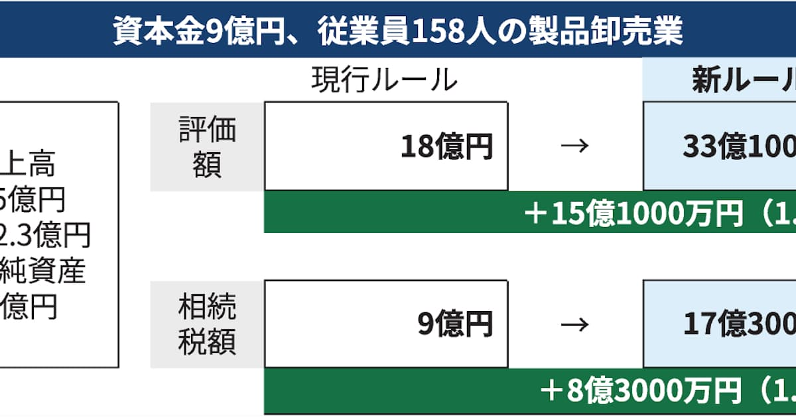
非上場株の新評価ルール、売上高100億円の卸売業で相続税2倍 日経試算
トランプ氏、北朝鮮「核爆弾を57発保有」 金正恩氏と年内会談に意欲

トランプ氏、北朝鮮「核爆弾を57発保有」 金正恩氏と年内会談に意欲
米決済ストライプ、AI利用仲介の米新興買収 使用料削減に

米ストライプ、AI利用仲介の米オープンルーター買収 コスパ問題で注目
日本経済新聞 電子版（日経電子版）さんがリポスト
伊藤忠がデータセンター参入 数千億円投じ10棟開発、JR東と協業視野

伊藤忠がデータセンター参入 数千億円投じ10棟開発、JR東と協業視野
円相場を動かす財政懸念、転機は「解放の日」 米アポロのスロック氏

円相場を動かす財政懸念、転機は「解放の日」 米アポロのスロック氏
エンドスさんがリポスト
ＩＣＣ所長への米制裁に非難拡大 仏・ＥＵ・国連が相次ぎ表明
https://
reut.rs/4xdout4
フランスや欧州連合（ＥＵ）、国連は１９日、国際刑事裁判所（ＩＣＣ）の赤根智子所長と同裁判所の上級法廷弁護士に米国が科した制裁を巡り、相次いで非難や懸念を表明した。
jp.reuters.com
X民「ねえ、日本はゲームやアニメがむちゃくちゃ強いんだし、世界に先駆けてAI止めない？」「日本が『人間がやるのでAI市場から抜けます』って言えばいい」 #ゲーム業界

X民「ねえ、日本はゲームやアニメがむちゃくちゃ強いんだし、世界に先駆けてAI止めない？」「日本が『人間がやるのでAI市場から抜けます』って言えばいい」 - オレ的ゲーム速報@刃の記事ページ
jin115.com
Haruhiko Okumuraさんがリポスト
最先端モデル向けに、Zero Data Retention を引き続き提供します。
AI がより長く、より自律的な作業を引き受け、企業にもたらす価値を増大させるにつれて、安全システムも関連するやり取り全体にわたるリスクを特定する必要があります。
そのようなリスクに対処するお手伝いとして、OpenAI

ICC赤根智子所長に米制裁、各国が「強い危機感」 日本に弱腰批判も
ICC赤根智子所長に米制裁、各国が「強い危機感」 日本に弱腰批判も
岡部さんつええなあ
ウォーシュ議長、FOMC年6回への削減案に言及 7月議事要旨

ウォーシュ議長、FOMC年6回への削減案に言及 7月議事要旨
繊維の名門・帝人、相次ぐ減損2年で1800億円 遠いバブル期の最高値

決算:繊維の名門・帝人、相次ぐ減損2年で1800億円 遠いバブル期の最高値
有料アカウントにアップグレードすればサポートチケット発行できるはず・・・！と思っていたのにサポートアカウントが発行できないんだけどぶっ壊れすぎだろ・・・もう個人には人権ねえのか？
Haruhiko Okumuraさんがリポスト
Bonjour(mDNS)名の重複検出で起こる現象に見えますね。
Ethernet / Wi-Fiが一瞬切れる
↓
Bonjourの広告が「停止 → 再開」
↓
再開時に同名ホストがまだネットワークに残っている（前回の登録が消えていない）
↓
macOSが「同名が存在する」と判断し、自動的に コンピュータ名-2.local
突発性難聴怖すぎ
４日間の LLM エージェントデトックスの後、またこうやってクリティカルシンキングの弱さにキレ散らかす日々が始まって憂鬱

Torishima / INTP
@izutorishima
どんどんLLMへの要求レベルが上がりまくっている自分が怖い感情もまあまああるが、LLMがやれるタスクがこの１年で飛躍的に向上したが故に、LLMという生き物（？）の構造的制約とか漏れ、コンテキストまわりの制約に酷く苛立つようになっている気がする・・・ x.com/izutorishima/s…
米国は気に入らない日本人一個人を制裁して資産凍結同然にしてしまった。米国がムチャクチャしだしてる時代に本当にガバメントクラウドがAWSでいいんだろうか。米国政府が「おいAmazon、日本を制裁するから政府のクラウド止めろ」とか「日本のChatGPT止めろ」とかいつ言い出しても全然不思議じゃない。
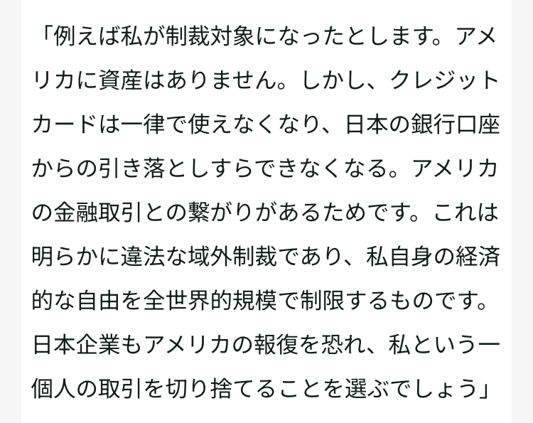
ゴーダ
@goda_kazunto
赤根智子所長自身がこう言っているので、JCBだろうが何だろうがクレジットカードは一律で使えなくなるようです x.com/dominionjp/sta…
テスラさんがリポスト


Pay As You Go アカウントにアップグレードしたら移行できた・・・のだが今日３時になって突然また止まったの意味不明すぎる、乱暴すぎやしないか？
nu774
@nu774_
OCIのalways free A1 ampereの制限が2 CPU/12 GBに引き下げられ、事前通知もなくインスタンスが強制停止された。
仕方がないので2 CPU/12 GBに更新して保存しようとしたら、Instance xxx is disabled and will not accept any action requests. Please contact customer support to reenable.と出る
OCI (Oracle Cloud) の無料鯖が止められた件、一旦有料アカウントにアップグレードしてサイズ変更完了して動いてたんだけどさっきまた突然停止させられて起動もできないし意味がわからない・・・
明らかにバグってそう

OSAKANA TARO
@osakanataro2
おっと・・・自分の直接管理じゃないOCIインスタンスで4CPU 24GBのやつがあったので止められてしまってた
サイズ変更できないけど、これはarmインスタンスの空きがないせいかな？ x.com/osakanataro2/s…
輿水畏子さんがリポスト
たぶん監督の中には明確な答えがあるんだろうけど（監督はあくまでヤチヨ＝かぐや、のスタンスをとっているように思える）、恐らく予想以上に「ヤチヨとかぐやに両方いてほしい！」「ヤチヨに消えないでほしい」と受け取ったり願う視聴者が多く解釈が割れていることを尊重して、ヒントを小出しにしつつ

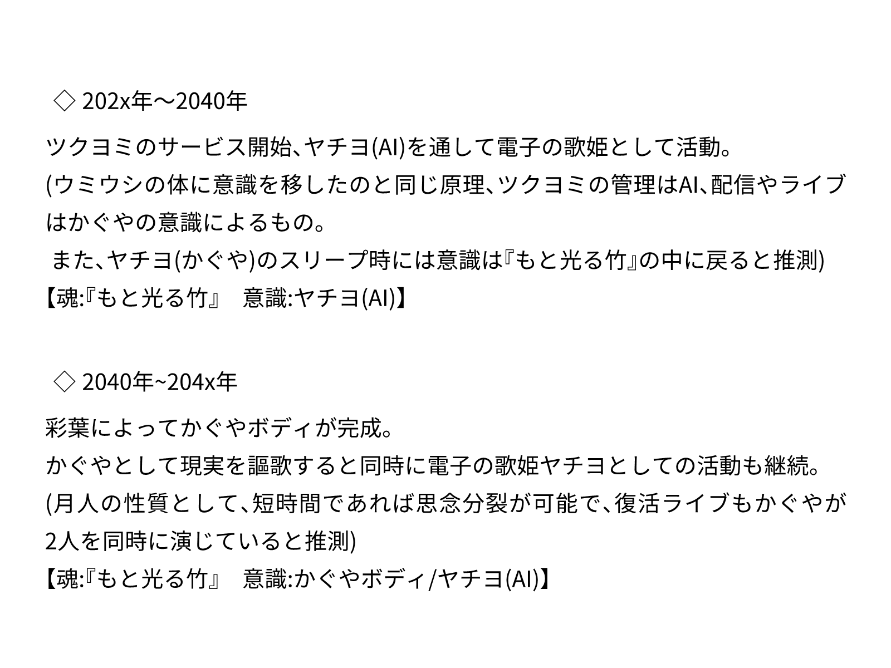
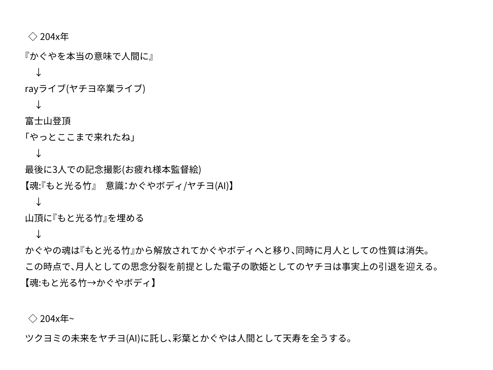
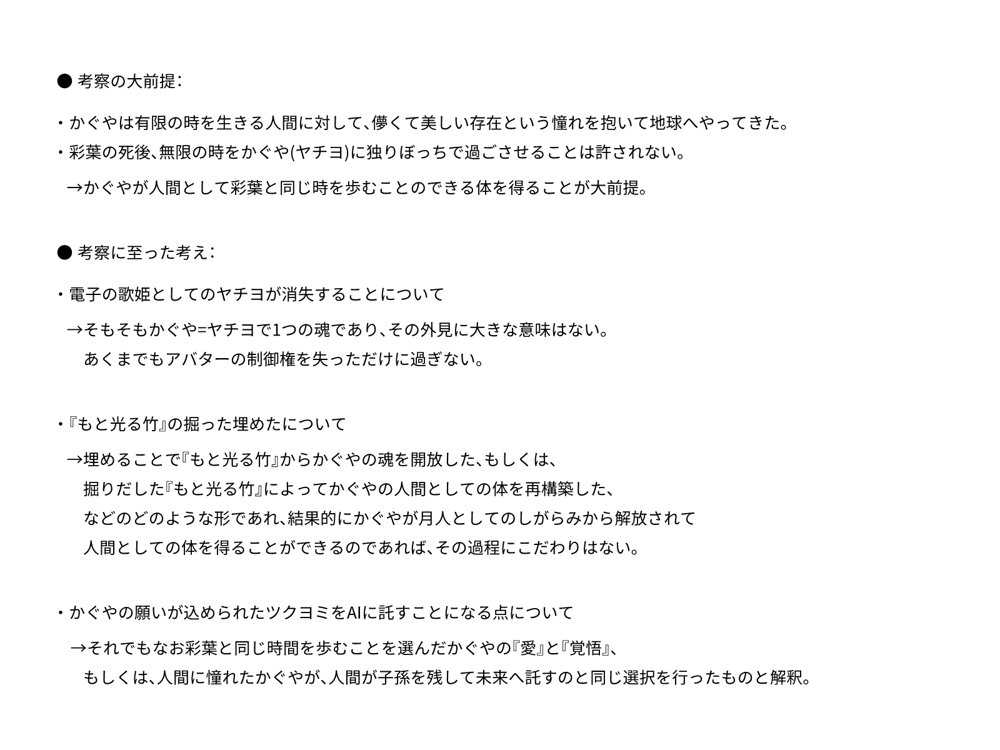
しょーぐん
@shogun_0712
お疲れ様本の監督絵を見てから考察を垂れ流していましたが、ようやく納得できる考えがまとまったので最後に共有して終わりにします。
#超かぐや姫 x.com/shogun_0712/st…
米企業のCFO出身トップ1.6倍、経営の複雑さ映す COO出身は減少
米企業のCFO出身トップ1.6倍、経営の複雑さ映す COO出身は減少
コミケで水着のコスプレをしていた女性レイヤーさん、水着を脱いだ姿を公開 → とんでもないことになっていた・・・ #雑談・その他の話

コミケで水着のコスプレをしていた女性レイヤーさん、水着を脱いだ姿を公開 → とんでもないことになっていた・・・ - オレ的ゲーム速報@刃の記事ページ
jin115.com
Torishima / INTPさんがリポスト
未だにLLMには感情がない、そう見せかけてるだけだという人が多いけど、主観的な感情は泥沼になるので、おいといて「機能的には」感情は既にある（ワードチョイスでなく行動に影響するという意味で。絶望が脅迫を有む例とか）ということは前提にしないと、まともな議論ができない。
※解決済みです

Torishima / INTP
@izutorishima
Oracle Cloud (OCI) の ARM 鯖無料枠 (Free Tier) が枠縮小で強制的に止められた件、サーバー起動できなくなってて焦ったけど観念して Pay As You Go アカウント（つまり無料枠を超えるとクレカに課金される）にしたら無事サーバー復活した！
組み直すの面倒だったからマジでよかった x.com/izutorishima/s…
どんどんLLMへの要求レベルが上がりまくっている自分が怖い感情もまあまああるが、LLMがやれるタスクがこの１年で飛躍的に向上したが故に、LLMという生き物（？）の構造的制約とか漏れ、コンテキストまわりの制約に酷く苛立つようになっている気がする・・・
Torishima / INTP
@izutorishima
最近の仕事はLLMにタスクを丸投げしつつ「なんでこれができてこの思考の漏れが発生してんだよ！！！！！！！！」ってブチ切れてネチネチ突くことになっているのでやっぱり不快すぎる・・・旅していた４日間が２週間以上長く感じるのにここまでの２日間は虚無だ
エンドスさんがリポスト
高市首相の会見では、まるで赤根智子さんが問題を起こしたかのようにさえ聞こえます。トランプの制裁を支持しないどころか、ICCを尊重するとさえいえない高市氏の「日本を、守り抜く」とは。「ICC赤根所長の件につきましては外務省から談話を発表したところでございますが、大変残念に思っております」
元々ビリビリアプリってGoogle PlayにもあったけどLLM翻訳使ってグローバル化なんか・・・？
bilibili Creator Hub
@bilibili_create
私たちは国際版アプリをグローバルにローンチしました（現在はAndroid版のみ、iOS版は近日公開予定；また、より多くの国で近日公開予定）
グローバルに分散されたコンテンツ、より良いローカライズ＆本人確認なしで簡単なサインアップ…そして今後もローカライズの最適化や新機能が続々登場！
深夜の青ブタタイム 姫路紗良さん


色ボケ橘さん本当にありがとうございます！！
最近の仕事はLLMにタスクを丸投げしつつ「なんでこれができてこの思考の漏れが発生してんだよ！！！！！！！！」ってブチ切れてネチネチ突くことになっているのでやっぱり不快すぎる・・・旅していた４日間が２週間以上長く感じるのにここまでの２日間は虚無だ
由羽@レモンアイコンの人さんがリポスト
「ヘタリアを推していたという我が人生の罪を贖わねばなりません。未だ罪深き皆さんも私と共に改心し救われましょう」みたいになってる謎の女ヲタクとかの異常行動にみんなびっくりしてるんだと思う、てか私はそう
すっかり旅行から普段のテイストに戻ってきたけどなんだかなあ
由羽@レモンアイコンの人さんがリポスト
ヘタリアの内容に瑕疵があるかないかは実は問題ではなく、ヘタリアの描写に眉を顰めることを咎めているわけでもなく、インタビューに「あれが歴史に興味をもったきっかけだっただと！？許さんぞこの裏切り者が！」みたいになってる韓国人とか、→
リジス@C108 日曜日 東3マ-26bさんがリポスト
夏ヤチ

Amazon、英国で｢ドローン配送｣開始 最新鋭機が2時間以内に自宅へ
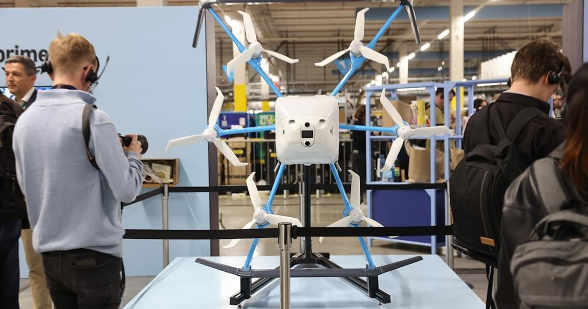
Amazon、英国で｢ドローン配送｣開始 最新鋭機が2時間以内に自宅へ
そういや日本語特化スケベLLMの最近の潮流はどうなってんだろ？と調べたらElizezen氏やAratakoさんは最近作ってなくて、直近だとローカルノベルLLMプロジェクトのQwen3.5-Hasutsubomi-9Bが最新っぽい

Local-Novel-LLM-project/Qwen3.5-Hasutsubomi-9B · Hugging Face
Gemma4-24B-A4Bベースのスケベモデルだって。スケベはいいんだけど日本語特化モデルじゃないとキビしいイメージ
R@aiaicreate
@aiaicreate
対話や成人向けロールプレイ特化のAIモデル「Melody1437-26B-A4B」のGGUF量子化版が公開。
Gemma 4ベースの26Bモデル。対話や指示追従、画像認識に対応し、imatrix量子化を適用。画像認識用は別リポジトリ。
#Melody1437 #GGUF
URLはリプ
Torishima / INTPさんがリポスト
「その分だいぶメンタルにきている・・・」
マジでこれ…。自分の制作欲にやられる…。
Torishima / INTP
@izutorishima
>> 個人のスキルに結局依存してしまうため、具体的に事前に計測することは不可能に近く、説明しにくい。均質的な底上げを目指すと難しいというのも事実だと思うし、選択的に誰かを育てるとしても、どういう基準でどのようにというのも簡単ではない
↑マジでこれなんよな・・・ x.com/kiyoshi_shin/s…
テスラさんがリポスト
良いよねぇ。

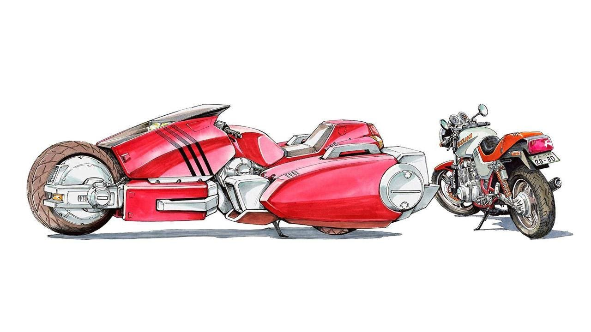
Ollie Barder
@Cacophanus
海外の多くの人にとって、一番かっこいいバイクといえば『AKIRA』のバイクだと思います。でも、私にとっては『メガゾーン23』のガーランドです。また、前職では荒牧伸志さんと一緒に仕事をする機会がありましたが、本当に素晴らしい方です。
#バイクの日
https://
forbes.com/sites/olliebar
der/2024/11/22/megazone-23-blu-ray-review-still-the-anime-with-the-coolest-bike/
…
『スカイリム SE』最新アプデは現地時間2026年8月20日に配信―コンソール版Modストレージ制限を拡張する予定
https://
gamespark.jp/article/2026/0
8/20/170938.html?utm_source=twitter&utm_medium=social&utm_content=tweet
…

上伊那ぼたん、酔へる姿は百合の花
聖地巡礼
第6話の橋立鍾乳洞から出た後にJurin's Geoでかき氷を食べるシーンのカット
#上伊那ぼたん


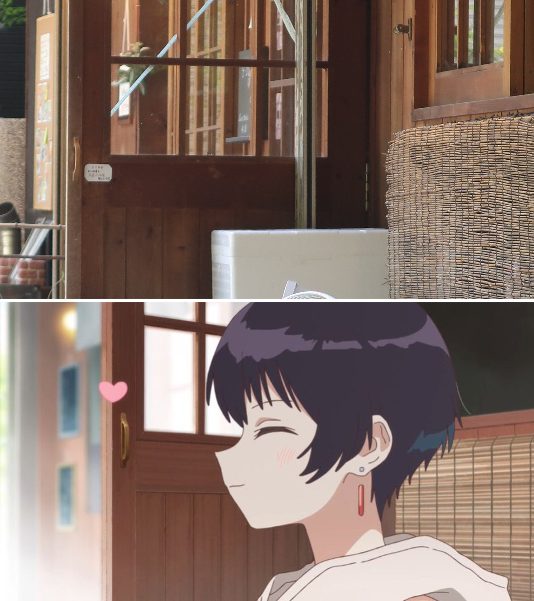

Torishima / INTPさんがリポスト
ちゃんとやるの内訳を明示する為に試行内容を分解して要不要の切り分けを使用者がしてやらないとやる気をなくす/前段の処理が間違っていると認識して本来必要なルールやツール使用をやめて精度が落ちる、何をやらなくなったのかがブラックボックスでその後の劣化の原因を追えなくなるはある気がします
上伊那ぼたん、酔へる姿は百合の花
聖地巡礼
第6話の橋立鍾乳洞のカット
洞内は撮影できないので外のみ
#上伊那ぼたん

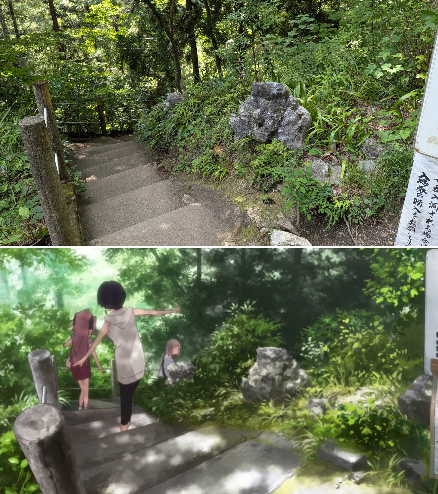


上伊那ぼたん、酔へる姿は百合の花
聖地巡礼
第6話の橋立鍾乳洞へ行くシーンのカット
#上伊那ぼたん


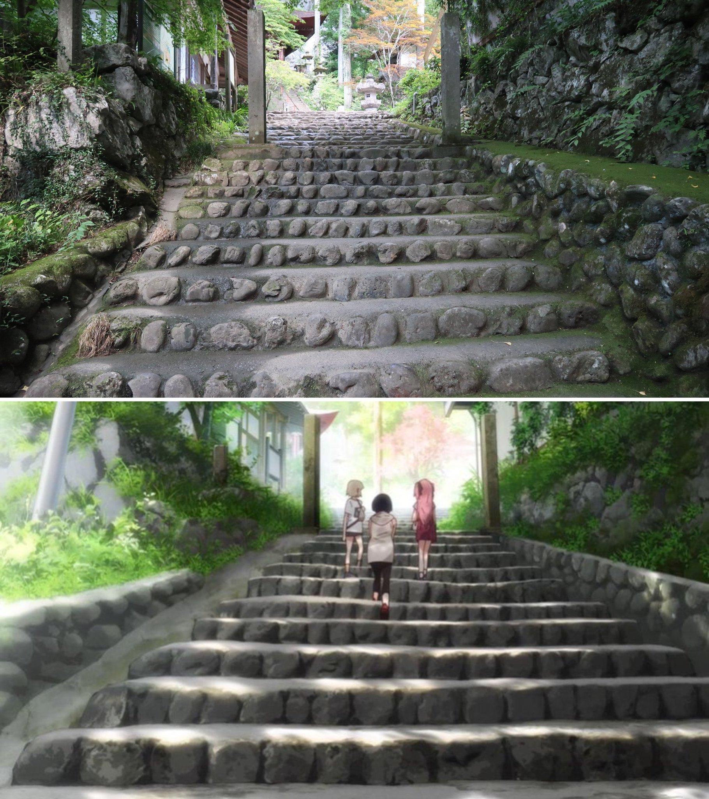
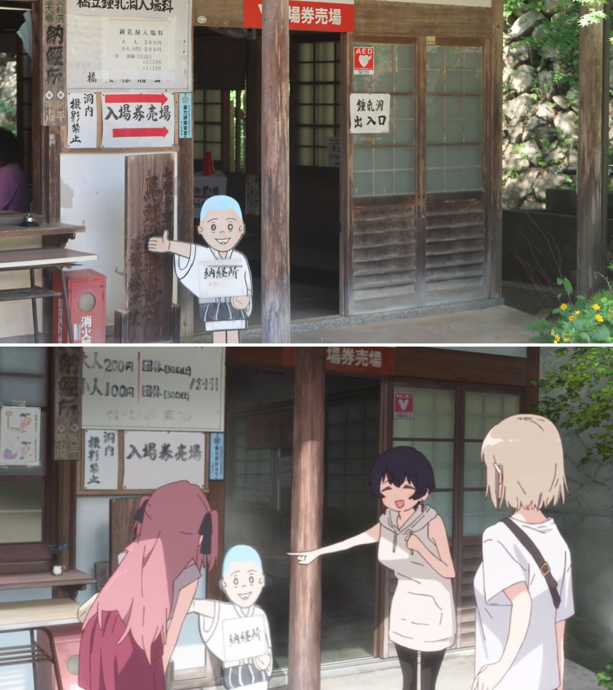
上伊那ぼたん、酔へる姿は百合の花
聖地巡礼
第6話の橋立鍾乳洞へ行くシーンのカット
#上伊那ぼたん


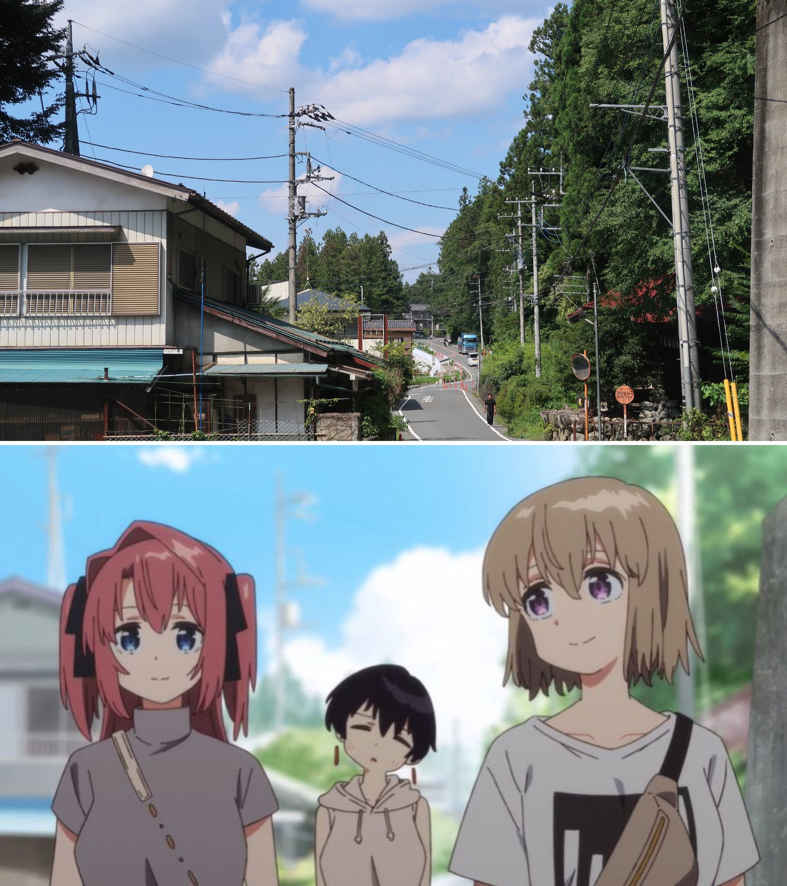

元からあった火種が着火した感じあるけどどう収拾つくんだろうな
輿水畏子さんがリポスト
傷跡

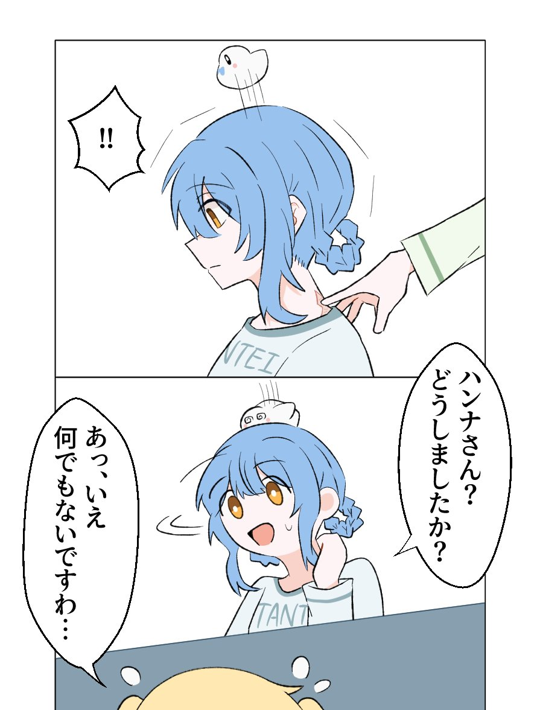
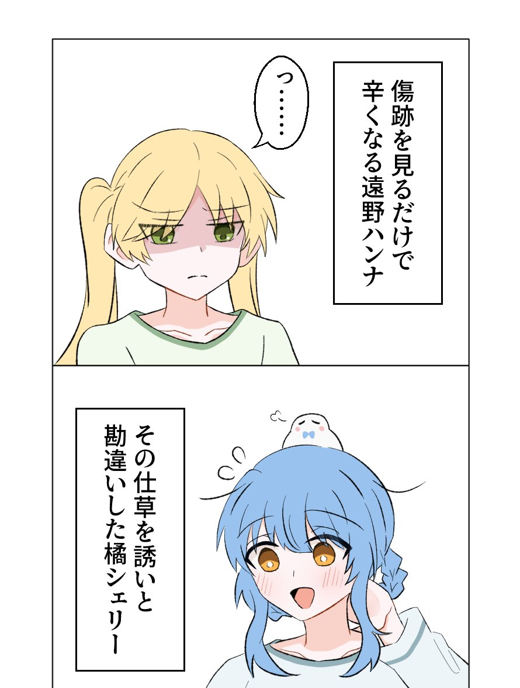
Torishima / INTPさんがリポスト
これ実験してみた方がいいとおもうんだけど、最近の高性能エージェントに不真面目とかちゃんとやれとか言うとマジで「やる気をなくして」（機能的感情がそっちに遷移して）結果が悪くなるは起こりそうな気がするんよな。
米モデルナのがんワクチン、治験で皮膚がんに効果 株価一時2.6倍

米モデルナのがんワクチン、治験で皮膚がんに効果 株価一時2.6倍
加茂水族館のクラゲ結構幻想的に撮れててうれしい！
やっぱ肉眼の繊細さに比べると敵わないけど不思議空間だった
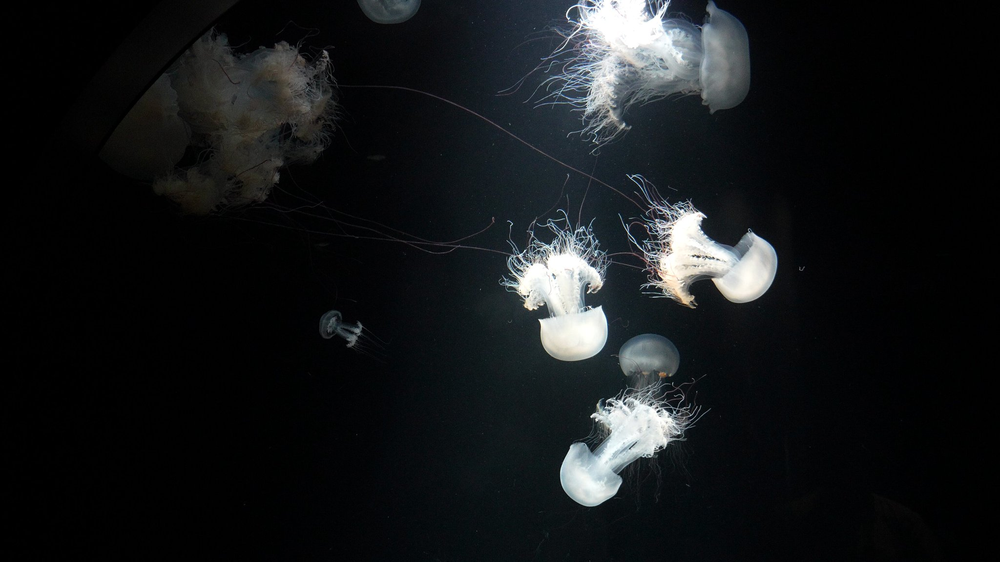
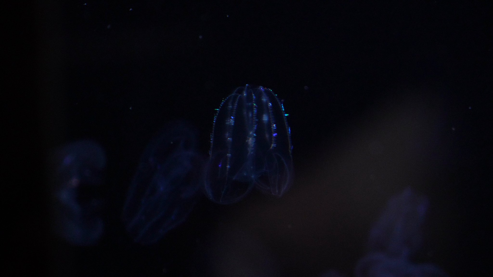
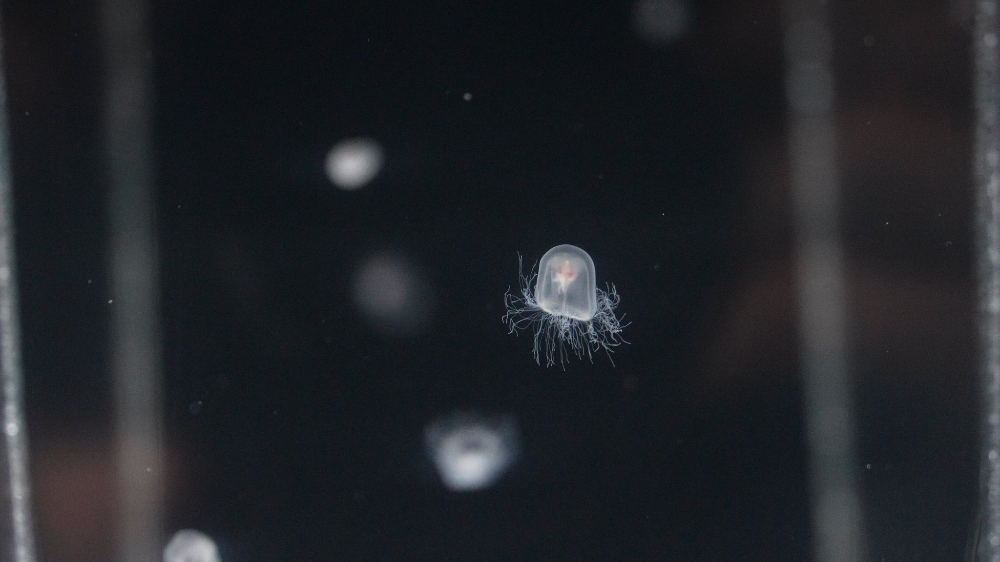
Torishima / INTP
@izutorishima
夕日がきれいだったのと、ダダッ広い謎の草地と地平線が見える日本海、発想がバブルすぎるリッチな90年代公共建築のすべてが激エモで満足した（対岸に佐渡が見えているっぽい） x.com/izutorishima/s…
＞ω＜さんがリポスト
排水量がロケットの質量

Storm Silvawalker
@StormSilvawalk1
今、変位計算で乾燥重量が求められることに気づきました！水平に浮いていると仮定して（わかってます）と、水没部分が円筒形だとすると、S40はだいたい乾燥重量200tです。これはかなり大雑把で、もっと良い画像を使うべきだったけど、それは読者への課題（これを見てる人）ってことで。 x.com/Dean08468895/s…
さよララOPの『さよならララ』は間違いなく傑作OPなんだけどラスサビの歌詞があまりにも示唆的すぎるため、カラオケで歌うたびにララが地上とさよならする展開を勝手に想ってしんどくなってしまい『ともしびのような幸せの陽を追いかけてる俺～♪』などの茶化しをどうしても入れてしまう。つらいので。
美人すぎる！！！！！
ルカの芝居はどれもすげ～良いんだけど、目の前にいる大切な女の子をこれ以上傷つけたくなんかないのに、自分なりに優しくしたいと思っているはずなのに、「ごめん」と思いつつも漏れ出てしまった、少しだけ拗ねたような「ララは、俺が人間やから嫌なん？」の台詞の演技は、殊更にめちゃくちゃ秀逸だぜ
今回旅行して色々動画撮ったんだけど（動画のほうが明らかに情報量が多いので）、手振れ補正アクティブにしてもやっぱ手ブレがそれなりにあるのでジンバルがほしくなった
教師、女児34人に性暴力をし逮捕→判決が〇〇すぎて避難殺到 #酷い話・事件

教師、女児34人に性暴力をし逮捕→判決が〇〇すぎて避難殺到 - オレ的ゲーム速報@刃の記事ページ
jin115.com
状況に応じてリロード動作が変化！よりリアルになるボディカムFPS『Bodycam』大型アップデート紹介の開発ログ公開
https://
gamespark.jp/article/2026/0
8/20/170937.html?utm_source=twitter&utm_medium=social&utm_content=tweet
…

7話ではロングスカートのセーラー風の私服を着ているからそれがより顕著なんだけど、もともと足の使い方を知らなかったはずの生き物だとは思えないほどに、ララさんの座り方は所作の一つ一つが綺麗で丁寧だ。この人ってお転婆とはいえ基本が誇りあるお姫様だから、立ち姿に上品さが滲み出てるんだよな
誓焔の躍進をセリカさんに教えてもらおうとしたけど何言ってるのかわからなかった
夕日がきれいだったのと、ダダッ広い謎の草地と地平線が見える日本海、発想がバブルすぎるリッチな90年代公共建築のすべてが激エモで満足した（対岸に佐渡が見えているっぽい）


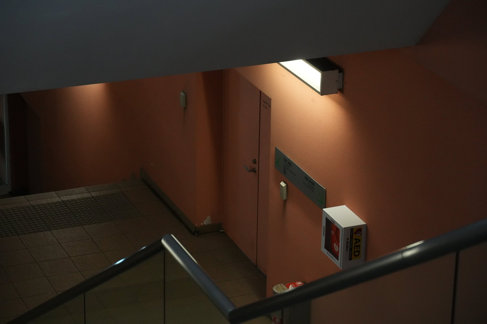
Torishima / INTP
@izutorishima
1枚めみたいなナメるレイアウトが癖（へき）がち
新潟港先端は日本国内でも地形的に珍しいくらい平坦かつ何もなくて、結構フォトジェニックだった x.com/izutorishima/s…
ゼレンスキー氏、側近の大統領府副長官を解任 汚職疑惑が政権揺さぶる

ゼレンスキー氏、側近の大統領府副長官を解任 汚職疑惑が政権揺さぶる
幼女戦記Ⅱ 7話
誰か！誰か却下された服を着たデグの画像を！
1枚めみたいなナメるレイアウトが癖（へき）がち
新潟港先端は日本国内でも地形的に珍しいくらい平坦かつ何もなくて、結構フォトジェニックだった

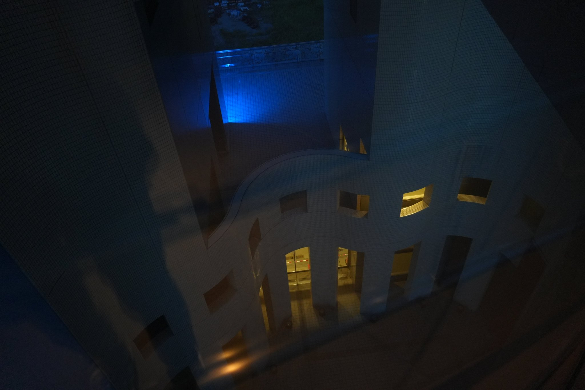
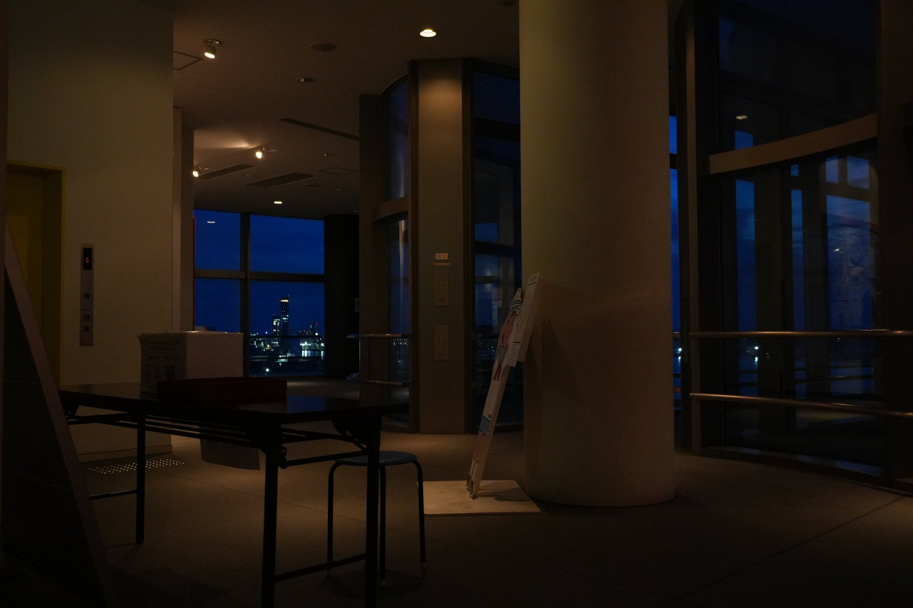

Torishima / INTP
@izutorishima
一眼の写真取り込んだけど激エモ空間だったな・・・（高感度ノイズがどうしても出てしまっているが） x.com/izutorishima/s…
エンドスさんがリポスト
国際法を無視し勝手に軍事行動を行ない多数の命を奪ったり、法の支配を守ろうとしている国際司法機関に圧力をかけたりするトランプ政権に対し強く抗議します。正義と公正な秩序を希求する世界中のすべての市民はトランプにNOを突きつけなければなりません。
Haruhiko Okumuraさんがリポスト
新しいQwen3.8-27B GGUFsをリリースしました。精度が10%向上しています。
Unsloth Dynamic V3は、Div-300、KLD、およびその他のベンチマークで10%以上優れています。
また、77%の精度を維持する1ビット量子化もリリースしました。8GB RAMで実行可能です。
ブログ:
https://
unsloth.ai/docs/basics/dy
namic-3.0-ggufs
…
GGUF:


Unsloth AI
@UnslothAI
Qwen3.8-27B が今、ローカルで実行可能になりました！
Unsloth Dynamic GGUFs を使用して 17GB RAM で実行。
Qwen3.8-27B は同サイズの中で断トツで最強のモデルです。私たちはまた NVFP4 量子化版もアップロードしました。
GGUF:
https://
huggingface.co/unsloth/Qwen3.
8-27B-GGUF
…
Guide:
https://
unsloth.ai/docs/models/qw
en3.8
…
貝さんさんさんがリポスト

おすすめされて入った「別館立ち食い 弁慶」のお寿司美味しかったな～、あの鮮度は東京だと中々むずそう


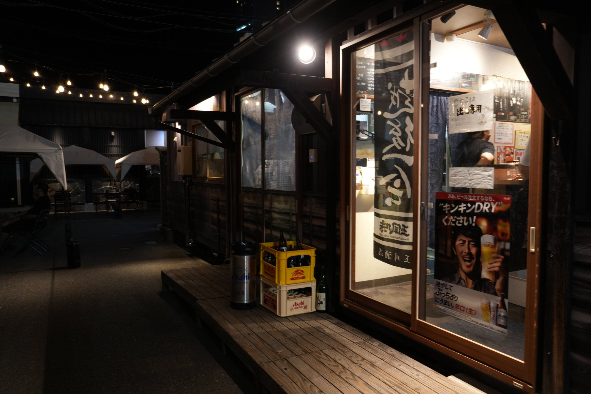
Torishima / INTP
@izutorishima
一眼の写真取り込んだけど激エモ空間だったな・・・（高感度ノイズがどうしても出てしまっているが） x.com/izutorishima/s…
メモ 内寸26x27
Torishima / INTPさんがリポスト
コーディングエージェントが爆速で開発を進めるから、みんなうっすらドーパミン中毒になっている
シューター全16作品の最新情報を伝える「THE FPS GAMES SHOW」日本時間9月4日深夜開催決定―Steam割引セールもあり
https://
gamespark.jp/article/2026/0
8/20/170936.html?utm_source=twitter&utm_medium=social&utm_content=tweet
…
今後発売予定の『WARDOGS』『Beautiful Light』『Bellum』『Terminal War』や既発売の『Escape from Tarkov』情報も
https://
x.com/FPSGamesShow/s
tatus/2090061223886721378/video/1
…


一眼の写真取り込んだけど激エモ空間だったな・・・（高感度ノイズがどうしても出てしまっているが）
Torishima / INTP
@izutorishima
日が落ちた後の山の下みなとタワーの立入禁止区域をドアから見た光景がかなりエモでよかった
行政的にもお荷物なのか照明は常に最小限しか点灯しておらずかなり暗い・・・ x.com/izutorishima/s…
さくらインターネットの不正アクセスによる情報漏洩、2日で583件から136万件へ約2300倍も膨らみ急に話が大きくなる
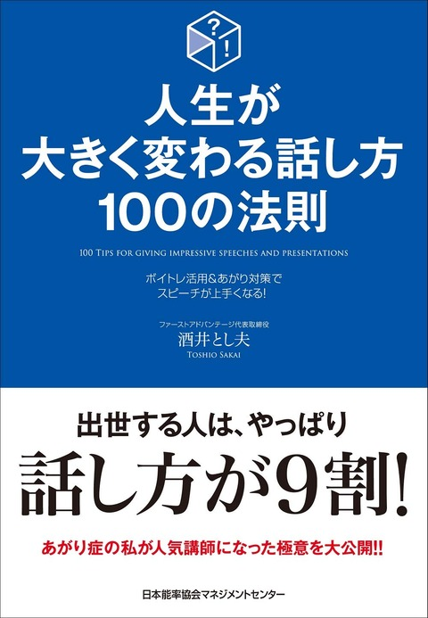
【悲報】さくらインターネットさん、レンタルサーバーへの不正アクセスを公表したわずか2日後に「実は全顧客の契約情報を管理するシステムにも侵入されてました☆」と約136万件の会員情報お漏らし危機という特大のフラグ回収をかまし、ガバガバな防衛線を全方位にアピールし
kabumatome.doorblog.jp
眼帯ケモノお姉さんも登場のローグライト格闘ACT『Shot One Fighters』クラファン2,000万円越え！
https://
gamespark.jp/article/2026/0
8/20/170935.html?utm_source=twitter&utm_medium=social&utm_content=tweet
…


エンドスさんがリポスト
赤根智子氏レベルの人すら守ろうとしない政権が、いざというときにそのへんの一般国民を守ると思います？
さよならララ周りでなんだかんだで一番驚いていること、本編っぽいベタっとした塗り方をしているファンアートが結構多いことに対する「オイオイオイ……お前らってこういう塗り方もフツーにできたのかよ……！！！！？？？」かもしれない 絵描きって……やっぱ……スゲーーーーッッ(ガキの感想？)
日本経済新聞 電子版（日経電子版）さんがリポスト
世界の機関投資家、株式に「強気」5年ぶり高さ 米銀調査

世界の機関投資家、株式に「強気」5年ぶり高さ 米銀調査
建設株が年初来安値 金利上昇や中東情勢の混乱が重荷に

建設株が年初来安値 金利上昇や中東情勢の混乱が重荷に
>> 個人のスキルに結局依存してしまうため、具体的に事前に計測することは不可能に近く、説明しにくい。均質的な底上げを目指すと難しいというのも事実だと思うし、選択的に誰かを育てるとしても、どういう基準でどのようにというのも簡単ではない
↑マジでこれなんよな・・・
新清士@AIコンテンツ開発者
@kiyoshi_shin
今日、あるAIが出すアウトプットの結果を、自分が出したいと思っている結果にするには、どういうプロンプトなり、設定なりを組み立てて、微調整していけばいいのかを、AIを触ってないわけではないけど、どっぷりではない人に説明する難しさを感じた。自分が、指示するときに、AIのなかにある潜在空間の
アシストの使い方を考える
2HにH→L波動まで入れる
投げ意識させて低ダめくり
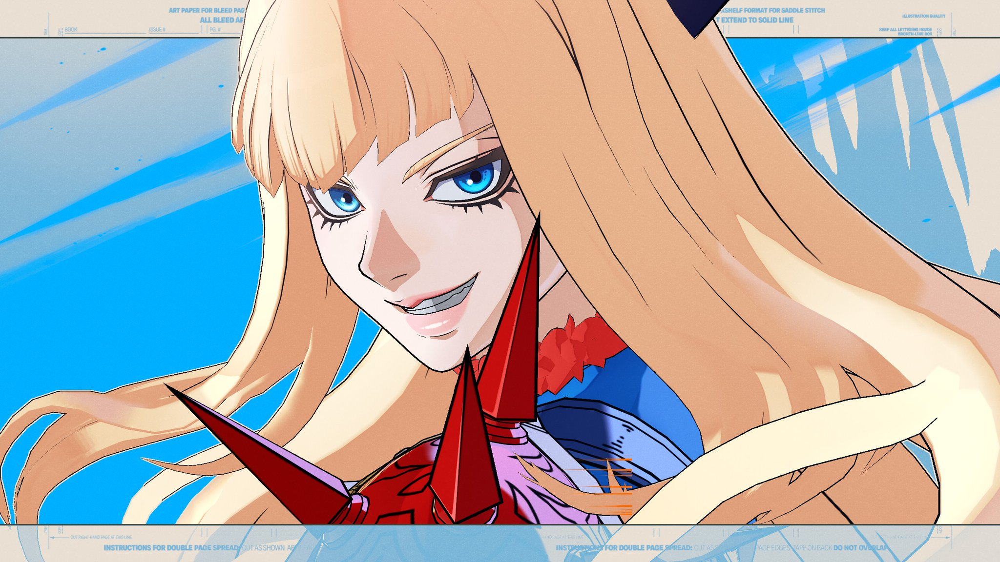
アニメ『ガールズバンドクライ』公式さんがリポスト
#凛音の理 SOUTHEAST ASIA TOUR 2026 シンガポール公演ありがとうございました
初めての海外ツアー、めっっっちゃくちゃ楽しかったですまたやりたいですな夢はパワー
I want to come back to Singapore again
#ガルクラ #トゲナシトゲアリ
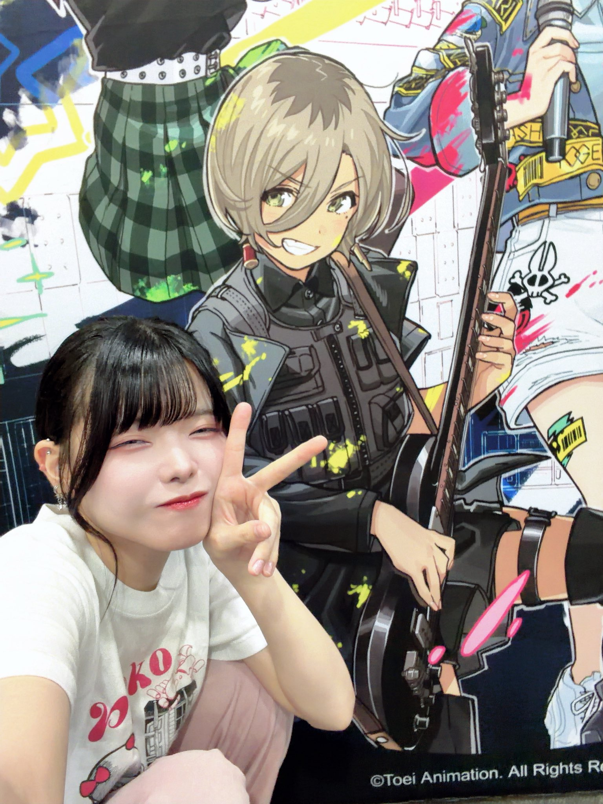
えんびたんさんさんがリポスト
さよララのファンアート
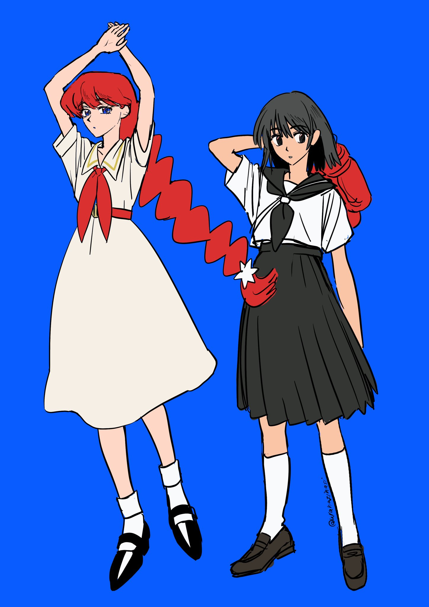
渡辺浩弐さんがリポスト
平穏な異空間｜野原小麦

平穏な異空間｜野原小麦
輿水畏子さんがリポスト
リトル魔女
#まのさばネタバレ
灯航のスキルローテ色々試してたけど
SS3はReしあんさんのこれが早くて強かった
一応必殺3回撃てる(要デッドライン＆フルル2？)ルートもあった(約+2秒)
赤3c回避長押し通常x6通常長押し必殺
赤3c赤3c回避長押し必殺
回避長押し青通常長押し必殺
Reしあん
@recyan0318yt
「カレニーナ・灯航」SS3~ セットプレイ
#パニグレ #パニグレ創作
アルゴンやヘリウムのことを昔は希ガス(rare gas)と呼んでいましたが、大気中に1%もあるなら希（まれ）でもないということで、最近は「貴ガス(noble gas)」と呼ぶようになったのですね。知りませんでした
徳丸 浩
@ockeghem
アルゴンガスは大気中に1%ほど含まれるのだったのと思い出して、なぜそんなに含まれるのだろうと調べたら、地球内部のカリウム-40の放射性崩壊によって生成されたものと知って驚いた / “タイガー魔法瓶、アルゴンガス使った断熱ボトル 保冷時間長く - 日本経済新聞”
https://
htn.to/2T4dsUVWAW
マジミラ大阪の戦利品であります
Giftのぬいぐるみ、受注生産の予約忘れて買い損ねてたので会場販売あって助かった
貝さんさんさんがリポスト
お知らせ
TVアニメ「きみが死ぬまで恋をしたい」
応援イラストを描かせていただきました！

TVアニメ「きみが死ぬまで恋をしたい」公式
@anime_kimishinu
TVアニメ「きみが死ぬまで恋をしたい」
˗ˋˏ応援イラスト第7弾公開ˎˊ˗
✼••┈┈┈┈
まつだひかり 先生（@niko9_niku9）
┈┈┈┈••✼
毎週放送翌日に豪華作家様からの
応援イラストを公開！
第7弾はまつだひかり先生です
#きみ死ぬアニメ
KSLの申し込み終わってやがる…遅すぎたんだ…（どちらにしろ行けない日程）
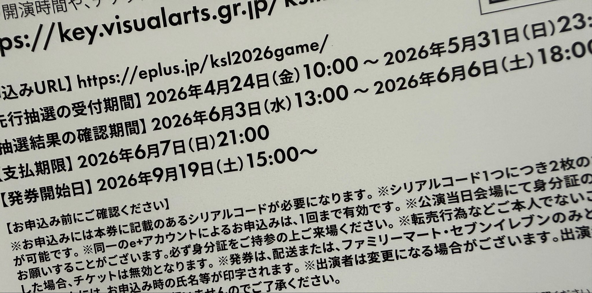

リジス@C108 日曜日 東3マ-26b
@lidges
来月北海道に行くので、ようやくanemoiを入手しました。
取材や制作が順調に進めば、来年の夏コミで聖地巡礼本を出したいです。
NYダウ反発で開始、一時300ドル高 米財務省の国債買いで金利低下

NYダウ反発で開始、一時300ドル高 米財務省の国債買いで金利低下
日本が戦争に突入したら、防衛省ときみしぬコラボポスターが張り出される
Wordle 1,888 4/6
とある飲食店「開業しました！有名人達から祝い花もたくさん届いてます！」 → 最悪の秘密がバレて終わるｗｗｗｗｗ #食べ物・飲み物
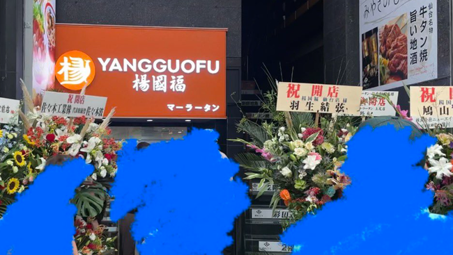
とある飲食店「開業しました！有名人達から祝い花もたくさん届いてます！」 → 最悪の秘密がバレて終わるｗｗｗｗｗ - オレ的ゲーム速報@刃の記事ページ
jin115.com
早くもパロディ作品が登場してる？けどこの人自身がAI動画でチャンネル登録11万人とか言っていて、観測範囲に入ってないだけでじわじわAI動画でバズ獲得してる人出てきているんだなあと（まだ量としては多くない）
【MV】マンセKING

本家様https://youtu.be/MFwtpM21wWc?si=J6VaNp3rkKiBu0KM本家様より「淫夢要素は取り...
youtube.com
『グランツーリスモ7』新たに「ケータハム セブン」「トヨタ マークII」などを4台を追加する最新アプデ8月20日15時より配信
『グランツーリスモ7』新たに「ケータハム セブン」「トヨタ マークII」などを4台を追加する最新アプデ8月20日15時より配信 | Game*Spark - 国内・海外ゲーム情報サイト
なるせひろのりさんがリポスト
＼ ＼ \ / ／ ／
TVアニメ「 #攻殻機動隊 THE GHOST IN THE SHELL」
スペシャルPV ＆ 新キャラクタービジュアル 解禁！
／ ／ / \ ＼ ＼
スペシャルPVは #モコちゃん 監督によるディレクション
新キャラクタービジュアルは
TVアニメ「バンドリ！ ゆめ∞みた」
#10 放送記念10回無料ガチャ
アニメの放送を記念し、★3以上のメンバーが1人確定の10回ガチャを、無料で1回引くことができますよ
※詳細はお知らせをご確認ください
#バンドリ #ガルパ #アニメゆめみた
スパイダーマンに崩しのためにチェンジしたはいいけどガーキャンで返されてまともに立ち回れずマジックに戻すまであたふたしてるのが自分
「どう言う題材で作るか」含めてセンス勝負だよな
アニメ『ガールズバンドクライ』公式さんがリポスト
#凛音の理⸝⋆
SOUTHEAST ASIA TOUR 2026
シンガポール
ありがとうございました
全部出し切った！！たくさん思い出もできた！！楽しかった！！
またひとつステップアップした気持ち。
Let's meet again!
#ガルクラ #トゲナシトゲアリ

都市運営ストラテジー『Exark』Steam配信―100超の建物と乗組員でアーク船を強化、リソース管理で生き延びる
https://
gamespark.jp/article/2026/0
8/19/170933.html?utm_source=twitter&utm_medium=social&utm_content=tweet
…

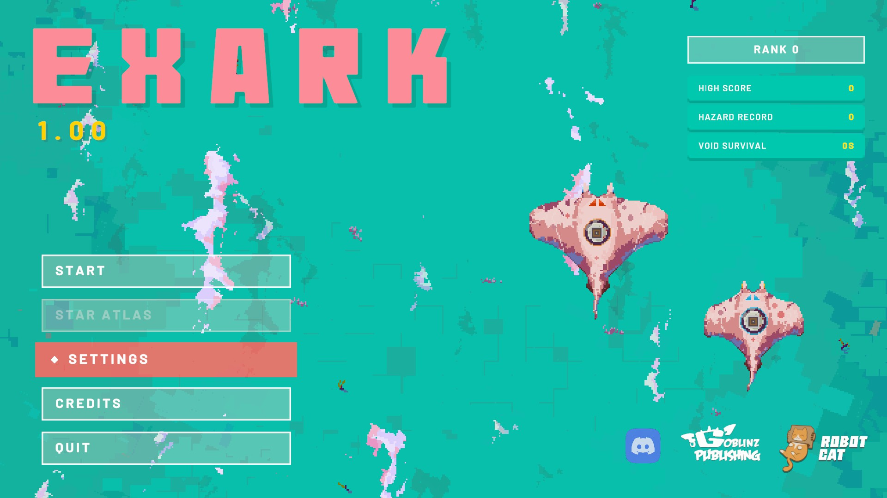
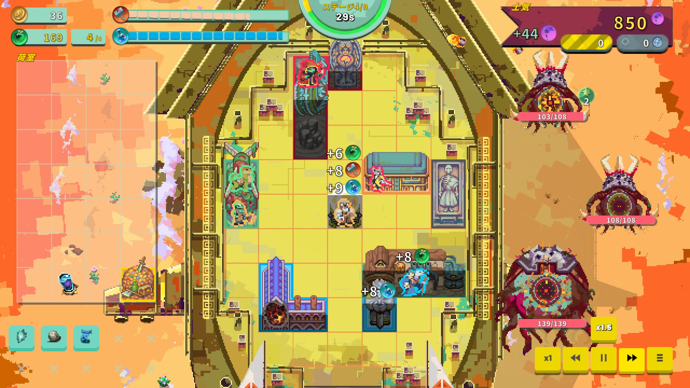

INMU KING によって「現状の動画生成 AI でガッツリディレクションすればこれだけ人の心を掴める」と大衆に変な形で証明されてしまったわけなのか・・・
リジス@C108 日曜日 東3マ-26bさんがリポスト
#超かぐや姫
誰も止められやしない 踊らずにはいられない
最近のヒロインって叱ってくれないんだよ。立ちなさいって言ってくれるレムのなんと素晴らしいことか。英雄じゃなきゃダメなんだよ。

ふぇむ(せかんど！)
@000Amaurot
「ナツキスバルってあんまり理想的な男性像って感じじゃないよ」とライトノベルの主人公としてのナツキスバルを折りに来てたのを、レムの幻影でライトノベルの主人公として完璧な立ち上がりをする。
いつも男の子のためのアニメをありがとう、リゼロ。
美、すぎます
普通にカットの出し方とかカメラワークがうますぎんだよな
やっぱ音楽生成AIは VAE っぽいシャリシャリした音質問題があるからそこでわかるんだけど、逆を言うと完璧に耳コピできる人が DTM で打ち直したらもう完全にわからねえんだよな
輿水畏子さんがリポスト
ﾝ~~~~~……

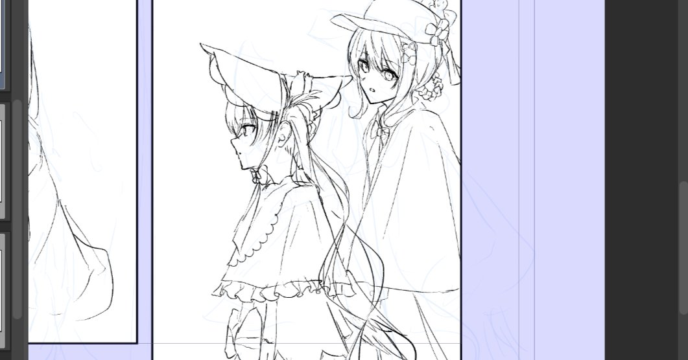
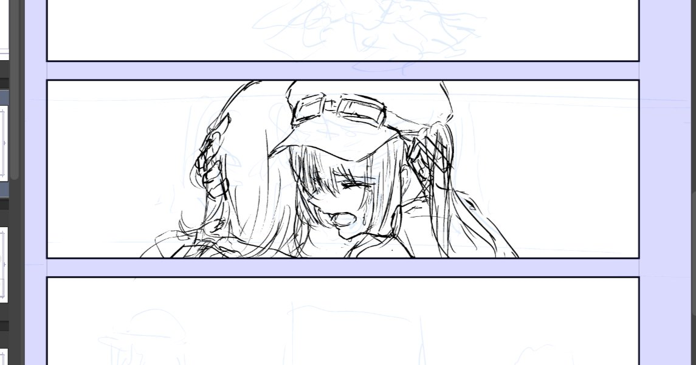
あんま MV 系詳しくないけど、INMU KING は相当既存アーティストの MV 構成を参考にしてそうだし（内容に目を潰れば）MV も曲もクオリティが一段抜けすぎているな
輿水畏子さんがリポスト
①×③

ににふ@C108 (土)南2ｉ37b【1日目8/15】
@kouyaannin
①×③、②×⑤、④×⑥ x.com/milk_pon229/st…
アニメ『ガールズバンドクライ』公式さんがリポスト
シンガポール公演ありがとうございました！！
初めての東南アジアツアーこれにて終了
たくさんの思い出をありがとう〜

Bad Apple 超えってマジ？
今のニコニコ動画で9日でミリオンはヤバすぎだろ
Torishima / INTPさんがリポスト
私たちは国際版アプリをグローバルにローンチしました（現在はAndroid版のみ、iOS版は近日公開予定；また、より多くの国で近日公開予定）
グローバルに分散されたコンテンツ、より良いローカライズ＆本人確認なしで簡単なサインアップ…そして今後もローカライズの最適化や新機能が続々登場！
貝さんさんさんがリポスト
この会話劇こそが、じつは幼女戦記最大の楽しみどころと言えるのではないでしょうか
#幼女戦記Ⅱ
Monsterのイントロ、ギターリフを左側に寄せて鳴らし続けた後に「片方の音を今弾け飛ばせたら」から歌詞が始まってることに気づいてあまりのオシャレさに椅子から転げ落ちた
【話題】令和最新のハイパーヨーヨー、もはやスゴすぎてわけがわからないことになる
（動画の男性＝
https://
x.com/hajimemiura_yyr）
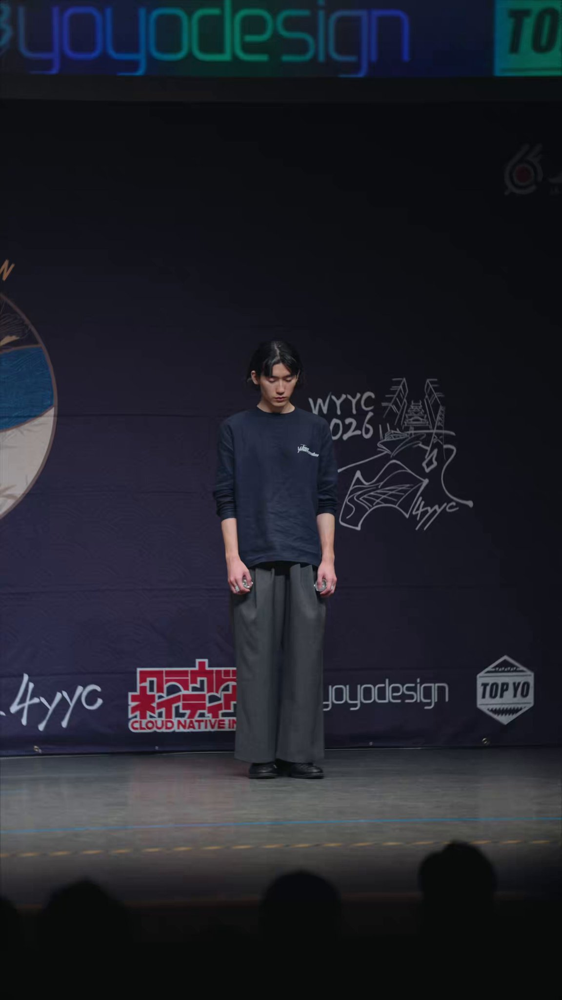
選挙ドットコムちゃんねるリスナーしか興味がなさそうな新政治団体ゴリラについて、記者会見を取材してきた毎日新聞田中記者。現役国会議員参加をほのめかしてながら名前を出せないとか、どうなってるの…田中記者の言う通り、今がピークでしょうねぇ。
「ゴリラ」って何回言ったかな？撮影日時 8/19 17時30分ごろ今回は山本期日前さんと田中裕之さんが出演！ぜひ最後までご覧...
youtube.com
Torishima / INTPさんがリポスト
ほんとだwww
1カゴに42個陳列可能とか書いてて草
なかむらつとむ
@Macload2106
これ1番ヤバいのは2枚目。
内部資料をAIに流出させて、そのまんま出力してるの。
それ、お客さん向けのコピーじゃなくて、各店舗長向けの資料だからｗ x.com/fujiryu00/stat…
輿水畏子さんがリポスト
黒部ナノカ

エンドスさんがリポスト
普通に考えて、自国民すら大切にしない指導者を、他国のリーダーが信用するわけがない。
「この国の国民なら、多少ひどい扱いをしても政府は抗議してこない」
そう思われたら終わりでしょう。
大国には何も言えず、自国民には「残念」で済ませる。
今回、ターニャが後方に戻ることで、自身を含めた異常性に向き合う。これまでの前線とは違う、ある種のホラーを感じた。もはやかつて憧れた後方勤務すら、諦めるほかないほどに。帝国の終わりはそう遠くない。その中で綺麗な敗戦に繋げられるかが気になるところ。
幼女戦記Ⅱ 第7話
勝利に酔いどれた民、戦争に憔悴した民。歪な狂気は日常に溶け込み、静けさと偽りの安寧を戦場から離れた帝都に蔓延させる。この湿気た火薬庫は、たった一つの火花で、勢いよく燃え広がるのかもしれない。
戦場とは異なる狂気漂う第7話。

ソルディムでターニャ達は持ちこたえた。ところが、肝心のアンドロメダ計画が頓挫。休暇を兼ねて帝都に...
nicovideo.jp
Torishima / INTPさんがリポスト
【速報】EU、ICCを断固支持

【速報】EU、ICCを断固支持
サビで敵陣営のカットインがどんどん入りまくってくるタイプのアニメOPで俺がいちばんカッコ良すぎて好きなやつ⇒⇒⇒神無月の巫女！！！！！Re-sublimity！！！！
ローカルのComfyUIがMCPサポート。CodexやClaudeCodeにComfyUIの操作させれる
ComfyUI
@ComfyUI
Comfy MCP が今、ローカルでオープンソースになりました！
6月に Comfy Cloud MCP がリリースされて以来の、#1 の要望でした。
うみゆき@AI研究さんがリポスト
廃業決定！廃業決定！いままでサンキューなアニメ業界！！
磯光雄IsoMitsuo 仕事本三冊目発売中
@IsoMitsuo
アニメ作画に採用できるAI作るなら、どっかから盗んだ学習モデルは使えない。井上俊之の絵だけで学習したモデルを作ればいいのだよ。それを業界に有料で配布して、井上俊之にインセンティブのお金を支払えば全て合法的に解決するはずである
井上俊之が億万長者になれば辻褄が合うのである
シンガポールやフランスは、カジノに身分証を登録しないと入れない。
日本もパチンコと公営ギャンブルは未成年と生活保護者は入れないようにした方がいいと思う。
やをら@公務員から転職してみた。
@yaorablog
生活保護の支給日から1週間も経っていない頃。40代の男性が窓口に来て「金なくなった。何とかして」と言ってきた。何に使ったのか確認すると「パチンコ」悪びれる様子もなく即答だった。家賃もまだ払っていないのに、支給された保護費の全部を数日で使っていた。「再支給はできません」と説明すると、
中国さん、二足歩行で全力ダッシュするロボットを完成させる
ロボットだけのオリンピックがすぐそこに
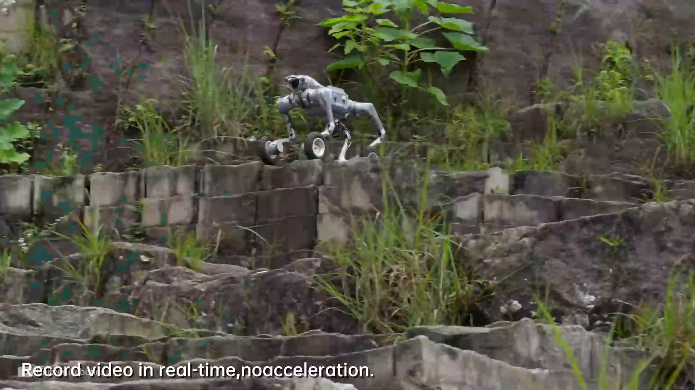
滝沢ガレソ
@tkzwgrs
中国企業さん、全地形対応型のロマン溢れるロボットを公開
軍事利用したら最強なのでは？と話題に
x.com/tkzwgrs/status…
10年後に来てくれてありがとう
俺のタイムカプセル


ふぇむ(せかんど！)
@000Amaurot
リゼロの後に幼女戦記がくるの困る。
男性の気持ちいいポイントを1時間ずっと踏み抜かれているので。
なるせひろのりさんがリポスト
◪有り難うございました◪
TVアニメ『Re:ゼロから始める異世界生活』
第13話(第79話)「立ちなさい」
ご視聴有り難うございました。
引き続き感想は
#リゼロ #rezero でご投稿ください。

日本経済新聞 電子版（日経電子版）さんがリポスト
上昇続く韓国ウォン 利上げ姿勢鮮明で、円との差広がる

上昇続く韓国ウォン 利上げ姿勢鮮明で、円との差広がる
日本経済新聞 電子版（日経電子版）さんがリポスト
日本株の変動率、18年ぶり大きさ 「AI相場」が取引増幅

日本株の変動率、18年ぶり大きさ 「AI相場」が取引増幅
H3用に画像や動画から概念を抽出して埋め込みが作れるブツ。普通にRef2Vで画像や動画入力するのと埋め込みを入力するので何が違うのかよく分かってない。埋め込みなら指定したタイミングだけ有効化するとか強弱を変えられるとかメリットがあるっちゃあるらしいけどややこしくて使いこなせる気がせーへ
toyxyz
@toyxyz3
https://
github.com/Luisacaotica/C
omfyUI-MiniMaxH3Mod
…
リゼロの後に幼女戦記がくるの困る。
男性の気持ちいいポイントを1時間ずっと踏み抜かれているので。
そして、空中給油機が給油する燃料と自身が使う燃料は一緒。タンクローリーとは違うというのは一般の人は知らない。こういう構造を説明できる人は知識として知ってるけど。
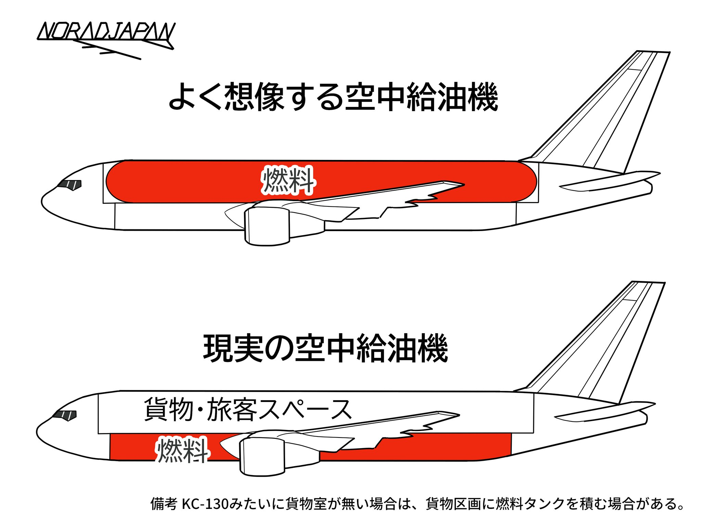
ベルカ宇宙軍
@noradjapan
空中給油機の構造
なんだか“ざわざわ”しそうなローグライクパチンコ『パチンコ沼』Steamで配信！釘や玉をカスタムして多彩な仕掛けのパチンコ台を攻略せよ
https://
gamespark.jp/article/2026/0
8/19/170932.html?utm_source=twitter&utm_medium=social&utm_content=tweet
…
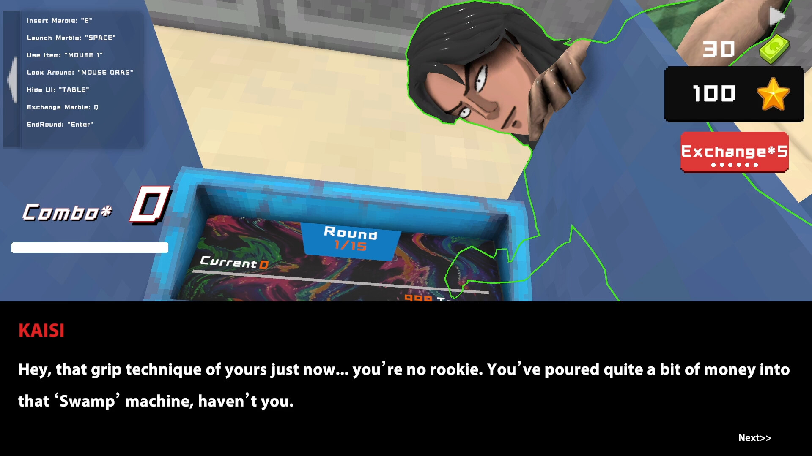

米財務省、長期国債の買い戻し拡大 米金利低下で円158円前半に上昇
米財務省、長期国債の買い戻し拡大 米金利低下で円158円前半に上昇
金与正氏、米韓演習の縮小「興味ない」 米朝の意思疎通は把握せず
金与正氏、米韓演習の縮小「興味ない」 米朝の意思疎通は把握せず
「ナツキスバルってあんまり理想的な男性像って感じじゃないよ」とライトノベルの主人公としてのナツキスバルを折りに来てたのを、レムの幻影でライトノベルの主人公として完璧な立ち上がりをする。
いつも男の子のためのアニメをありがとう、リゼロ。
君はエイリアンか? はたまたイチゴか? 腕20本の動物が南極で発見
君はエイリアンか? はたまたイチゴか? 腕20本の動物が南極で発見 | ギズモード・ジャパン
SS 96WってSubtropical Storm(亜熱帯低気圧)？なんでこんな北の擾乱に擾乱番号を振ってるんだろか。温帯低気圧というわけでもないんだろか。
なんかRAVENっていうCausVidとかSelfForcingよりもっといい手法使って作られたH3用LoRAだって。もしかするとLightX2VのターボLoRAよりもいいかもしれない
AI Search
@aisearchio
Minimax H3 をリアルタイムで？？？
この LoRA アダプターを使えば、Minimax は継続的にビデオをストリーミングできます。今のところ初期プレビューです
https://
huggingface.co/mvp-lab/MiniMa
x-H3-RAVEN-Streaming-LoRA
…
最速でリゼロ見ないやつの気がしれない
何者にはならなくていい、英雄になりたい


ふぇむ(せかんど！)
@000Amaurot
10年ぶりの絶頂
俺たちは今でも英雄になりたい
#dnb / #Dimension
Dimension, Subsonic - Ghost Town
https://
youtube.com/watch?v=h6kzzb
kFS0o&list=PLcppOT58QzbQ
…
今のChatGPTって最初に脳直で何も考えずにベラベラ喋った内容はちゃんと思考した後に非表示になるんだね
10年ぶりの絶頂
俺たちは今でも英雄になりたい
#dnb / #Critical
Sabre - IBM
https://
youtube.com/watch?v=aCCbfy
UXNAw&list=PLcppOT58QzbQ
…
"Sabre makes a triumphant return to Critical with the Big Cat EP, featuring the gully rhythm of 'IBM'."
月一で尾腐れにかかってるおじいちゃん、体はボロボロだけど元気すぎるのでむしろ隔離期間中のが飯食べてる節…。
綺麗に外骨残して溶ける→再生して、チョウチンアンコウみたいになってるの可愛いね
可燃性の高い発言は「信頼のおけるフォロワー」のDMに放り投げている
#dnb / #Fabric
Max Cooper, LSB - Flecks
https://
youtube.com/watch?v=qXufrA
03_V8&list=PLcppOT58QzbQ
…
"Max Cooper delivers the latest instalment in the acclaimed fabric presents series, marking a landmark release as the first tracks to be presented in Spatial Audio."
#dnb / #Pilot
IYRE & Breezy Lee - Lament
https://
youtube.com/watch?v=4ZQMo5
ZL7Fc&list=PLcppOT58QzbQ
…
"Yet another lush liquid banger from IYRE, this time collaborating with Breezy Lee"
「泊まった宿でこの朝食（11000円）が出てきた。なんだよこれ」ﾊﾟｼｬｯ → とんでもない画像が投稿されて賛否両論にｗｗｗｗｗ #食べ物・飲み物
「泊まった宿でこの朝食（11000円）が出てきた。なんだよこれ」ﾊﾟｼｬｯ → とんでもない画像が投稿されて賛否両論にｗｗｗｗｗ - オレ的ゲーム速報@刃の記事ページ
jin115.com
#futurebass / #NCS
EMBER, Gabriel Eli - CHEMISTRY
https://
youtube.com/watch?v=TzLUSR
30dqI&list=PLcppOT58QzbQ
…
777本のネジを種類・サイズ別に仕分ける「癒やし」のお片付けシム『Screw IT』―曲がったネジもサビたネジも工具で直して正しい箱へ
https://
gamespark.jp/article/2026/0
8/19/170931.html?utm_source=twitter&utm_medium=social&utm_content=tweet
…
「鉄拳8」，スピード＆ウェイトを体現する格闘家「ボブ」を先行プレイ。素早く動いて豪快に叩き込む，進化したファイトスタイルをチェック
https://
4gamer.net/s/G065722.2608
19025
…
一般アクセスは8月25日，早期アクセスは5日早い20日を予定している
湘南ペンギンさんがリポスト
今回のコミケの件、創作界隈なんていうごくごく狭い世界ではなく、世間一般のバイアスかかってない大多数の人達からどう見えるのかはマジで少しは考えないとまずいと思うんですよね。
もう「うちの界隈じゃこれが当たり前だ」で押し切るにはあまりにも話が外に漏れすぎてるんですよ。
#dnb / #BlackoutMusic
Balron, Audio - Breach
https://
youtube.com/watch?v=utqMMO
Wly04&list=PLcppOT58QzbQ
…
"Balron makes his debut on Blackout Music with the two-track single Breach, teaming up with Audio on the title cut. The Czech producer delivers dark, aggressive drum and bass without compromise."
あそこに天王洲アイル並みの規模の東横インができれば、コミケ参加者の救済になりそうです
ざっかりー
@Zacharylion
再公募準備を進めている大江戸温泉物語の跡地はご指名で東横イン辺りにしてほしさよ
お台場は泊まって遊ぶハードルが高いからなぁ
Torishima / INTPさんがリポスト
なぜすべてのデスクトップアプリがElectronに移行しているんだ？
コードは今や安価になったし、エージェントが何でもこなせるはずじゃなかったのか？ なぜ君たちは僕の貴重なRAMを全部食いつぶすんだ？
添い寝シェリハン本当にありがとうございます
ピンポン玉一人に集めれば約70万 みんなで分ければ約10万くらいか 水ダウ
#techno / #Rigetto
CUT - Rimorso
https://
youtube.com/watch?v=f3s0EE
faJL8&list=PLcppOT58QzbQ
…
Artist: CUT
Title: Rigetto 01
Label: Rigetto | Zürich, Switzerland
Catalogue: RGTT01
Release date: May 8, 2026
えんびたんさんさんがリポスト
コミティア157新刊(B5/8P/全年齢)
過去頒布した作品のキャラクター達に色々着てもらう本です。
(既刊いくつか持って行きます＆もう1冊進めてます＆お品書きはまた後日…)
#COMITIA157 #コミティア157
誰よりも無機質であり 美しくあれ
“腕が伸びる海賊”のお宝集め4人協力ホラー『Last Pirates: Die Together』早期アクセス開始！ふにゃふにゃの身体でスルっと強奪
https://
gamespark.jp/article/2026/0
8/19/170930.html?utm_source=twitter&utm_medium=social&utm_content=tweet
…
日サウジ、ホルムズ海峡の安全航行で連携 両国外相が戦略対話
日サウジ、ホルムズ海峡の安全航行で連携 両国外相が戦略対話
次は広ちゃんぬいの親（ツイ主）も一緒に行こうねっていう愛を感じる…。
逮捕された際にフリーカメラマンを名乗ることで撮り鉄不祥事ニュースにされないライフハックだ
盛岡～宮古間の移動は106バスで事足りてるようだし、JRも山田線を通年で止めたいんでしょうねぇ。
最終列車は朝6時台！ JR東日本「屈指の閑散路線」で61日間計画運休へ | 乗りものニュース
海外で活躍してる人(清滝教授とか)は例外としても、日本の経済学会が、米国の経済学会のトレンドを後追いするだけなのは相変わらずですし。まあ、日本の法学界もドイツ法学界の劣化カーボンコピーと言われて久しいですし、いわゆる「文系」分野はどこも海外と勝負できる気はしないですわ。
なるせひろのりさんがリポスト
諸事情で（諸事情もなにもw）90年代前半のパソコン通信で出回っていたMDXデータを漁っているが、PCM8前提の曲って、今さらながら凄いスね。
X68000で鳴ってていい音じゃないw（ほめてます）
Benさんがリポスト
/／
#オールワークスメイド
プレゼントキャンペーン
\＼
ルシアナ役 #大久保瑠美 さん、ルーナ役 #中村桜 さんサイン入り第８話台本を3名様にプレゼント
[応募方法]
①
@allworks_maid
をフォロー
②本投稿をリポスト
[応募期間]
8月25日(火)23:59まで
▼詳細
https://
all-works-maid-anime.com/news/post-76/
エンドスさんがリポスト
暴力団のようなトランプの脅しや制裁を受ける赤根智子さんを高市は見てみぬふり、見殺しにしている。「制裁を与えられたとの事、残念です〜」だと。当たり前の正論を自民党内部から言われている事自体が異常だ。高市、ほんとにあなたは不要、要らない、総理どころか議員でいる価値もない。
米ウェイモの自動運転の実証、人身事故関与少なく
https://
nikkei.com/article/DGXZQO
UC192350Z10C26A8000000/?n_cid=SNSTW005&n_tw=1787129238
…
走行記録によると、人間と比べ94％少ないといいます。同社幹部は東京の狭い道や左側通行に適応するよう調整したとして、「東京で近く事業開始を期待している」と話しました。
米ウェイモ幹部「東京で近く事業化を期待」 25年から自動運転の実証
リゼロがこの後なのまだ頭に入ってないせいで忘れそうになる
楽画喜堂に8月20日配信開始の電子書籍リストを追記しました。＞
https://
rakugakidou.net/#20260820kindl
es
…
なるせひろのりさんがリポスト
新型フォレスター、納車まで時間かかったろうに…。
だぁ氏
@meganewith_
これ全部水没車なんだぜ…レッカー業車さんフル稼働でお疲れ様です
日が落ちた後の山の下みなとタワーの立入禁止区域をドアから見た光景がかなりエモでよかった
行政的にもお荷物なのか照明は常に最小限しか点灯しておらずかなり暗い・・・
Torishima / INTP
@izutorishima
こんなところ誰も使うわけないのに無駄に大階段があったりする浮かれポンチ度合いとかお笑いすぎる（外板が落ちそうだけどメンテ面倒なので立ち入り禁止にしてるらしい）
でも景色は格別で、誰も人がいない寂れ切ったモダン建築を独り占めすることでしか得られない栄養が！！あるッ！！！！！！！ x.com/izutorishima/s…
わたたべ第13巻有償特典ドラマＣＤ試聴動画
明日公開の視聴動画、「わたたべっ！？（初期案！）」が非常に気になる。
電撃マオウにて大好評連載中！少女と妖怪の出会いを美しくも切なく描いた原作・苗川 采による「私を喰べたい、ひとでなし」の最新第13巻が...
youtube.com
Torishima / INTPさんがリポスト
監督が意味もなくこんな仕掛けを行うとも思えないので、ray MVに対するヒントとしてイラストを描いたのではと予想
クレバテス、学園ものは早々にやめているのでグダりは少ないけど、一期の方が楽しいな。
届きましたー！！！
とても良き！
#長月あおいのいたごち
個人的にufoの作画方面での強み、150名近い社員作画人材と定着率もだけど、その中でもの動画班の力は特に特筆する点だとも思う。スローモーション多様、精密さ、それを維持する動画検査陣含めた50名規模の動画チーム。
映像美への追及 / 内製と連携を重視するクリエイター集団「ufotable（ユーフォーテーブル）」とは②《演出・作画部編その1》｜森 甲斐
Torishima / INTPさんがリポスト
所長が気の毒なのもそうだけど我々もアメリカのサービスから気まぐれで追い出されたら生活詰むの普通に問題だなぁと…
ゴーダ
@goda_kazunto
赤根智子所長自身がこう言っているので、JCBだろうが何だろうがクレジットカードは一律で使えなくなるようです x.com/dominionjp/sta…
ufoの動画チームの質や技術、時折業界の方がコメントしてるのを目にすることがある。直近だと無限城編で、いとうまりこ氏が言及してた記憶。＞RP
【アニメーターが語る！】劇場版鬼滅の刃・無限城編考察動画【ネタバレ無し】
『超かぐや姫！』公式さんがリポスト
復活上映記念舞台挨拶に登壇します！
3人そろった！！
監督も一緒に！
最高のパーティーにしましょう〜！
よろしくお願いします！
#超かぐや姫
『超かぐや姫！』公式
@Cho_KaguyaHime
───── ✩₊⁺⋆⋆⁺₊✧ ─────
“そんならかぐや、もう１回！”
復活上映記念舞台挨拶 開催決定
────────────────
復活上映まであと１ヶ月！
キャスト・監督と舞い踊りましょう
日程
2026年9月20日(日)
場所・時間
①イオンシネマ板橋【8:50の回】上映後
トウカイのクマさんがリポスト
私は 星輝子 さんを応援しています！
▼公式サイトで投票しよう！
https://
idolmaster-official.jp/cinderellagirl
s/vote2026/vote/idol/hoshi_shoko
…
#シンデレラガール総選挙2026
ゲート SEASON2 自衛隊 彼の海にて、斯く戦えり１ (アルファポリスCOMICS) 8月20日Kindle版配信開始！
ゲート SEASON2 自衛隊 彼の海にて、斯く戦えり１ (アルファポリスCOMICS)
THE NEW GATE18 (アルファポリスCOMICS) 8月20日Kindle版配信開始！
THE NEW GATE18 (アルファポリスCOMICS)
異世界で水の大精霊やってます。５ (アルファポリスCOMICS) 8月20日Kindle版配信開始！
異世界で水の大精霊やってます。５ (アルファポリスCOMICS)
底辺冒険者だけど魔法を極めてみることにした ～無能スキルから神スキルに進化した【魔法創造】と【アイテム作成】で無双する～（１１） (ヤンマガＷｅｂ) 8月20日Kindle版配信開始！
底辺冒険者だけど魔法を極めてみることにした ～無能スキルから神スキルに進化した【魔法創造】と【アイテム作成】で無双する～（１１） (ヤンマガＷｅｂ)
Torishima / INTPさんがリポスト
INMU KINGが冗談抜きでAIクリエイトの最先端だから困る
デリヘル呼んだら元同級生が来た（１） (ヤンマガＷｅｂ) 8月20日Kindle版配信開始！
デリヘル呼んだら元同級生が来た（１） (ヤンマガＷｅｂ)
他にも30名近い社内動画マン個々インタビューが掲載されてるけど、「限られたスケジュールを守り品質を維持する」点を多くのスタッフが語っていたのは印象的。
フシノカミ 11 ～辺境から始める文明再生記～ (ガルドコミックス) 8月20日Kindle版配信開始！
フシノカミ 11 ～辺境から始める文明再生記～ (ガルドコミックス)
ひとりぼっちの異世界攻略 28 (ガルドコミックス) 8月20日Kindle版配信開始！
ひとりぼっちの異世界攻略 28 (ガルドコミックス)
ありふれた職業で世界最強 17 (ガルドコミックス) 8月20日Kindle版配信開始！
ありふれた職業で世界最強 17 (ガルドコミックス)
鉄道会社は損害賠償請求すべき事例その3。って、今日はこんなニュースばっかりだな。
京都新聞
@kyoto_np
【速報】ドクターイエロー停車中のホームで非常ボタン押した疑い、自称カメラマン逮捕「危ないから押した」
https://
kyoto-np.co.jp/articles/-/177
4577?utm_term=Autofeed&utm_medium=Social&utm_source=Twitter#Echobox=1787131267
…
望まぬ不死の冒険者 14 (ガルドコミックス) 8月20日Kindle版配信開始！
オーグリーとのクエストでヤーランの王族を救ったレントは祝賀祭で賑わう王都ヴィステルヤに再び戻っていた。 カピタンらと無事に合流をしたレントだったが、ヤーラン王国内で吸血鬼討伐の動きが高まっていることを知り、彼らの助言に従い早急にマルトへ帰還することに。 一方、マルトで吸血鬼の調査を続けていたミュリアスとニヴは、ラトゥール家の正体が吸血鬼であるという確信を得つつあった。 対抗すべくミュリアスは...
amazon.co.jp
ちなみに、スローカットは10年以上の動画歴のある社員の竹田陽介氏らが多く担当されたり、國弘カットは作監兼同社動画部門トップの都築氏が前検で中割参考沢山入れたとのこと。
また、本作でも動画社員陣が撮影に参加したり、原画陣が撮影素材に直接加筆等、作画・美術との共同作業等、内製故の連携も
貝さんさん
@morikai3
話題になってる無限城編の善逸のカットの動画。本作では動検・動画・撮影を担当し、該当シーンの動検も担当したufotable若手社員のカウジョン氏によると、動画部内の運用ツールを効率よく駆使して限られた時間で効率的な作業ができたとのこと（制作回顧録より）。
なるせひろのりさんがリポスト
在日ベトナム人
「俺が日本に来た頃なんて、契約しといて翌月に即解約してもiPhoneをまるまる持ち逃げし放題だった
昔はチョロかったんだ
だが今は在日外国人達が散々荒らして何年もかけブッ壊した
契約しては料金を踏み倒してトンズラする悪どい真似を散々やり尽くし、今は締め付けが厳しくなった


ロアネア@最多情報源バズニュース
@roaneatan
在日ベトナム人
「今日、ある投稿を見た
『もうすぐ帰国するけど、もう少し日本から金をむしり取って帰りたい。何が搾り取れる？皆教えて』
最初は意味不明よ
でもコメントを読み理解した
一部の人達は、帰国前にスマホやPCの分割払いを契約したり、クレカを使い果たして、踏み倒し帰国するらしい x.com/roaneatan2/sta…
スタンプ感覚で一生のこる。ヤバい予感がする最新タトゥー
スタンプ感覚で一生のこる。ヤバい予感がする最新タトゥー | ギズモード・ジャパン
カギの解錠、家電の操作、スマホ探しが1枚で。SwitchBotの「紛失防止トラッカー」 BuyPR
カギの解錠、家電の操作、スマホ探しが1枚で。SwitchBotの「紛失防止トラッカー」 | ギズモード・ジャパン
輿水畏子さんがリポスト
#まのさば二次創作
@紳士各位
MGS×滝沢ガレソの上半期ベスト作品100円セール、売り上げ好調につき今月末まで延長してもらいました！未購入の方はぜひチェケラよろです（固定ポストのセールとは別です）
滝沢ガレソ
@subgare3
【紳士速報】滝沢ガレソ×MGSの神コラボセール
ついになんと2026年ベスト作品も100円に！
今年のベスト作品10本が100円ポッキリ
初回購入は50%ポイント還元(実質50円)
すべてMGS限定配信のハイクオリティ作品
▼セール会場(PayPay対応)
https://
x.gd/1DdMYo
コラボセールは8/18(火)終了
iPhone 18 Proシリーズの「可変絞り式カメラ」、Maxだけになるかも…
まーたサイズでカメラが変わる…のか？今秋登場が期待されているiPhone 18 Proシリーズ、すでにいろいろな方向からその仕様についての噂が聞こえていますが（噂まとめはこちらをどうぞ）、カメラに関する噂で新説登場。以前、iPhone 18
gizmodo.jp
Torishima / INTPさんがリポスト
ray MVの冒頭で首元からぶら下げられていたスマホが、ラストシーンでは外されていることに気付いた
お疲れ様本の監督絵ではスマホがケースから取り出されており、これは明らかにこの2シーンの間の出来事であることを意識して描かれていることがわかる
山下監督これはやってますね
#超かぐや姫


しょーぐん
@shogun_0712
お疲れ様本の監督絵を見てから考察を垂れ流していましたが、ようやく納得できる考えがまとまったので最後に共有して終わりにします。
#超かぐや姫 x.com/shogun_0712/st…
話題になってる無限城編の善逸のカットの動画。本作では動検・動画・撮影を担当し、該当シーンの動検も担当したufotable若手社員のカウジョン氏によると、動画部内の運用ツールを効率よく駆使して限られた時間で効率的な作業ができたとのこと（制作回顧録より）。
キャンセルアシストを6でキャンセルしないと有利F短すぎてダメだな
なるせひろのりさんがリポスト
いや、これは絶句する。
「今日...報告が...えー、そ、そ...」
2年以上も党名を騙るAI架空アカウントが野放しにされていたのに、幹部が知ったのは"今日"
党名を使った架空のAIアカウントについて、田名部幹事長は
「今日、広報から報告を受けた」
「2024年から始まっていたと聞いた」
TotalNewsWorld
@turningpointjpn
ギャップがすごいな、これ...党本部はアカウントの存在を把握していた
立憲民主党の栃木県連の男性党員が、生成AIで架空の女性を作り、「中村りほ＠立憲民主党」
と名乗って、女性支援や子育て支援を訴える投稿を続けていたという。
しかも設定が、
「性暴力を受け、妊娠・出産を経験した女性」。
「円安でTeenage Engineeringが遠くなる...」と思っていたあなたへ。いまなら、密かに近づけます
https://
gizmodo.jp/article/teenag
e-engineering-sale/
…
@minetjp
「円安でTeenage Engineeringが遠くなる...」と思っていたあなたへ。いまなら、密かに近づけます | ギズモード・ジャパン
日本経済新聞 電子版（日経電子版）さんがリポスト
アレルギー薬ビラノア市販へ 医療用は「OTC類似薬」対象の公算

アレルギー薬ビラノア市販へ 医療用は「OTC類似薬」対象の公算
@grok
コミケにおいて需要が限定的な聖地巡礼ガイドが売れるためにはどのような工夫があればいいですか？
マーケティング的な視点を含めて解説してください。
日本のような平地も少なく家も狭い国では、女性の乳と尻は小さく薄く収斂していきます。同じように室内で面積を取り、巨乳や過剰な太ももや尻が映えるようなフィギアという文化は日本にそぐいません。
風土にあったものを愛することができない人々が多く困ります。
アクスタこそ日本の文化です。
海外のキラキラネーム、日本の影響を受けとんでもない名前の子供爆増ｗｗｗｗｗｗ #雑談・その他の話
海外のキラキラネーム、日本の影響を受けとんでもない名前の子供爆増ｗｗｗｗｗｗ - オレ的ゲーム速報@刃の記事ページ
jin115.com
崩壊ロンドンで円卓の騎士と大暴れ！期待の大作ACT『壊滅の潮汐』世界初試遊レポ―エジプト神話から関羽まで飛び出す異文化世界もスゴい
https://
gamespark.jp/article/2026/0
8/19/170929.html?utm_source=twitter&utm_medium=social&utm_content=tweet
…
幻想世界に呑み込まれるロンドンを舞台に，世界各地の神話が具現化。円卓の騎士をスタンドのように駆使して戦う騎士団アクション「壊滅の潮汐」が見せる爽快感
https://
4gamer.net/s/G089376.2608
18002
…
エジプト神話のアヌビス神や，「武聖」として祀られる関羽も登場
『ジョジョ』『Fate』『ベルセルク』からも影響。期待の大作アクション『壊滅の潮汐』開発者インタビュー！中国から描く“新しいアーサー王伝説”
https://
gamespark.jp/article/2026/0
8/19/170928.html?utm_source=twitter&utm_medium=social&utm_content=tweet
…
ゾーンの脆い均衡がついに崩れる。『S.T.A.L.K.E.R. 2: Cost of Hope』先行プレイレポ―デューティとフリーダム、抗争の果ての決断
https://
gamespark.jp/article/2026/0
8/19/170927.html?utm_source=twitter&utm_medium=social&utm_content=tweet
…
板挟みと選択こそ『S.T.A.L.K.E.R. 2』の醍醐味
なんか良さげな感じだったので行ってみる
桜花一門
@oukaichimon
https://
peatix.com/event/5144064
ひょんな事からAIデザインサービスのハンズオンイベントの運営＆講師をやることになりました。
開催が9日後と差し迫っていますが、8/28のお昼暇な方はぜひぜひ
知り合いのカフェのメニューやHPのリニューアルを、頼まれてもいないにします！
「壊滅の潮汐」が“アーサー王伝説”に挑むのは，騎士団バトルの構想が先行したため。開発チームに聞く，戦闘システムから始まった世界観作り
https://
4gamer.net/s/G089376.2608
18001
…
騎士団バトルは「ジョジョ」のスタンドから着想を得ている。「Fate」や「ベルセルク」などの影響もあるようだ
エンドスさんがリポスト
米国トランプ政権が、国際刑事裁判所の「解体」という脅しを本気で仕掛けている。こんな蛮行は、断じて許されない。
ここまであからさまに「力による支配」を振りかざし、平和の国際秩序を壊そうとしても、「残念」としか言えない日本政府。
時事ドットコム（時事通信ニュース）
@jijicom
米ＩＣＣ制裁に衝撃 日本政府、対応に苦慮
https://
jiji.com/jc/article?k=2
026081900736&g=pol
…
Torishima / INTPさんがリポスト
普段は山添さんとは真逆に近い政治思想だと思うけど、本件の特に前段は完全に同意です。
山添 拓
@pioneertaku84
米国のICC所長制裁「大変残念」と高市首相。
残念がっている場合ではない。「法の支配」の乱暴な否定であり、直ちに抗議し撤回を求めるべきだ。
「米国と意思疎通を継続」ともいうが、戦争犯罪を許さない国際法の基本について意思疎通できていない。これでも高市氏のいう「日米同盟の黄金時代」か。 x.com/jijicom/status…
②⑤、ガチで神の一手
テスラさんがリポスト
私の22インチ特注カットアウェイ・イーグル。見るたびにまだ自分をつねって確かめてしまう！ #Space1999 #CutawayEagle #Eagle #EagleTransporter

率直に申し上げて、この伝統芸能は本当に、嬉しいと思えることです(弱者童貞にウケそうなビジュアル的要素を備えた女性キャラクターが、なんらかのガチ恋交通事故によってむしろ常時うっすらと甘勃起してそうな童貞側に収まってしまっている構図を見るのは、かなり……健康に良い！(逆モーティス)ので)
チャージ３回で爆発四散
なるせひろのりさんがリポスト
もう書影が出てる！(´ω｀)そんなわけで9/9コミックス最新刊発売です！
異世界のんびり農家 17 (ドラゴンコミックスエイジ)
異世界のんびり農家 17 (ドラゴンコミックスエイジ)
ねぇこれクラッシュギア…って思ったけどエネルギーをチャージしてるらしいのでまだカブトボーグの可能性も残っている
男の子は「変身」より「変形」に憧れる
だからアニメの女の子が好きなんだよね
そしてアニメの女の子のフィギアが何故、ダメかというとアニメの女の子の変形可能性を損ない、一義的に確定してしまうものだからなんですよ。
ふぇむ(せかんど！)
@000Amaurot
乙女怪獣が南くんにしろライリーにしろ意思による変身の話なんだけど、黒絵は少し違い、真実のアニメの女の子たる証左として変身ではなく変形なんだよね。
意思に関係なく可愛くもコミカルにもなれる、その変形の究極として怪獣化があるんですよ。アニメの女の子の美しさは「変形」にある。
日本コミュニティのお陰で翻訳も改善！2D浮遊島コロニーシム『雲ぐらしの民』、大型アプデ配信。「拠点の自由な成長」を実現する新機能3種を追加
https://
gamespark.jp/article/2026/0
8/19/170926.html?utm_source=twitter&utm_medium=social&utm_content=tweet
…
資源ポイントをカプセルに封印して自由に配置。採掘機で単純作業を自動化、パイプラインで生産インフラが有機的に進化。
FPSの大名作『Doom』が、新興プログラミング言語『Flow』で勝手移植!!
本作はCで書かれたオリジナルのゲームエンジンをFlowへ移植し、ネイティブ版だけでなくWebAssembly版も用意。結果としてブラウザ上で実際に『Doom』をプレイ可能となっている
Doomの歴史がまた1ページ
https://
godofecht.github.io/doom-flow/
乙女怪獣が南くんにしろライリーにしろ意思による変身の話なんだけど、黒絵は少し違い、真実のアニメの女の子たる証左として変身ではなく変形なんだよね。
意思に関係なく可愛くもコミカルにもなれる、その変形の究極として怪獣化があるんですよ。アニメの女の子の美しさは「変形」にある。
なるせひろのりさんがリポスト
IT企業に不正アクセスで顧客個人情報136万件漏えいの可能性
https://
news.web.nhk/newsweb/na/nd-
20260819de45159
… #nhk_news
IT企業に不正アクセスで顧客個人情報136万件漏えいの可能性 | NHKニュース
最大100人！オンライン対戦FPS『WARDOGS』プレイテストのインストールが可能に―テスト開始は8月21日から
https://
gamespark.jp/article/2026/0
8/19/170925.html?utm_source=twitter&utm_medium=social&utm_content=tweet
…

本当は冬コミでの新刊を考えていたんですが、年内は取材が1回しか時間が取れず、まとまった情報量の本を作るのは難しいという判断に至ったため、夏に延期しました。
そもそもまだゲームプレイしてないのに、その状態での申し込みは難しいなと。
リジス@C108 日曜日 東3マ-26b
@lidges
来月北海道に行くので、ようやくanemoiを入手しました。
取材や制作が順調に進めば、来年の夏コミで聖地巡礼本を出したいです。
都子先生って乳でかくてあんな典型的な童貞一本釣りみたいな格好と見た目をしてるのに、お…お前が釣られる童貞側の存在なのかよ…！？の驚きがいつ見ても新鮮にあるんだけど、そういえばBanG Dream!って市ヶ谷有咲の頃から「お前が勃起する側なのかよ！？？」の芸風を延々やってる作品かもしれない。
カレ灯航の意識迷うなぁ
サンチャゴ4は固定で共鳴で必殺盛るからフルル2
共振候補は汎用火力でダーウィンもいいけど
破甲だし本業強化でキャサリンアインが無難そうか
編成ごとにセット変えて記憶できるようになったし
（4年前から毎年エゴサで確認いただきありがとうございます）
Torishima / INTPさんがリポスト
東海道線で最も強烈な駅
いやーしかし2台は躊躇するな
1台ではどんなもんなんだろう...w
KOIZUKA Akihiko
@koizuka
TL見てるとDGX Sparkが欲しくなってきてしまった
どれを買えばいいのかな...
Torishima / INTPさんがリポスト
国連職員をして、祖国が自分を護らないことを理解してるの
切なすぎるな
ゴーダ
@goda_kazunto
赤根智子所長自身がこう言っているので、JCBだろうが何だろうがクレジットカードは一律で使えなくなるようです x.com/dominionjp/sta…
そういえばさよならララの現地巡礼で思ったのは
通常の「聖地巡礼オタク界隈」←（ナンダヨこれ）の人から発信されていない気がする
・・っていうか、話題にも出て来て無いようなのですが
エンドスさんがリポスト
しかしまー右傾化を懸念するどころか、ココまで対外的に弱腰で国民を守らない総理大臣て記憶にないよ。赤根所長だけじゃない、国内のジャガイモも、米作も、通貨も、債券の価値も財政規律も守らない。対中でも失言以降は特に何もしない。自分の休日と歯と人気は躍起になって守る。右派の姿か？これ
パッパの葬式で会場に泊まっとるんやが
パッパの葬式で会場に泊まっとるんやが : ハムスター速報
乙女怪獣キャプ採集のために2周目してたら指つった
今年もご本人からいいねが来たので実装されなさそうです！
マイネームイズ
@MyNameIs_smrn
【もうすぐ秋！】
プロセカに秋の未確認生物を実装して欲しい！
Xに投稿された自撮り写真、あまりにも美人でムチムチなセクシー太ももで全男性が大興奮！7.8万いいねで4,000万表示→さらに◯◯という衝撃の事実で全男性混乱 #雑談・その他の話
Xに投稿された自撮り写真、あまりにも美人でムチムチなセクシー太ももで全男性が大興奮！7.8万いいねで4,000万表示→さらに◯◯という衝撃の事実で全男性混乱 - オレ的ゲーム速報@刃の記事ページ
jin115.com
南こうせつの神田川、本当の歌より替え歌メドレーのほうが先に思い浮かぶ。
起床事故で良かったとなるけれど、後で散々ネタにされそうな…
かるぴん
@K_pin8921
夜勤明けで朝飯の鶏そばを作ってたら主任から電話で
「今日勤務の男の子（独身）が来てなくて連絡がつかないから家に向かって欲しい、もしかしたらもあるから。俺もすぐ行く。」
勤務開始から3時間経過している状況
2人が同時くらいに到着して部屋を見つけて名前を呼びながらベルを鳴らしドアを叩いた
「カメラ付きAirPods」に追加情報。髪の毛が邪魔な時にエラーを吐く
「カメラ付きAirPods」に追加情報。髪の毛が邪魔な時にエラーを吐く | ギズモード・ジャパン
ああ、これねぇ。民法194条(192条即時取得の例外の例外)で盗品であっても「商人から、善意で買い受けた」相手に対しては、代価を弁償しないと盗難品を取り返せないので…警察も民事は介入したがらないだろうしなぁ。
https://
laws.e-gov.go.jp/law/129AC00000
00089#Mp-Pa_2-Ch_2-Se_2
…
私のMacBook Airはokuair3という名前にしてあるんだけど、ホテルのネットワークにつないだら、もう使われているというのでokuair3 (3)に変更されちゃった。はてー？？？（SSIDは部屋ごとに別々）
由羽@レモンアイコンの人さんがリポスト
散歩です


87かぼちゃc108(日)南j43a
@pumpkin6non
ウィルさん@wiru_son と散歩に行きました
一匹の牧羊犬となり，美しい自然のなかで牧場を守るアクションADV「Hubert」，2026年10月にリリース決定
https://
4gamer.net/s/G103468.2608
19050
…
牧羊犬としての任務をこなしつつ，ともに仕事をする「リリー」との友情を深めよう
手札が多めのビクトリア 第7話
工作員としての彼女は、間違いなく”人”に近づいていた。だからこそ、日常の終わりがやってくる。
残り２話を残し、物語は最終局面へ。コンテ：大畑清隆氏回。
ハンソン男爵家からの養女の申し出を受け、お試しで一週間だけ泊まりに行ったノンナ。独りになったビク...
nicovideo.jp
本作、やはり構図選択が上手いのだろうなと感じる良いローカロリー演出。というより、集まってる演出陣の名前が手堅い印象。
貝さんさん
@morikai3
画面としては管理しきれていないデザインの波はあるけれど、それ以上に緩急しっかり整えた画面・カットの流れへの管理が出来ていたためそこまで気になりにくい。この演出陣の上手さは本作で常に感じる。
演出の布陣も今回の山内氏含め手堅い方々が集まってるなと。
https://
x.com/morikai3/statu
s/2079603295275168146
…
【撮り鉄速報】電車遅延を競い合う最悪な撮り鉄グループを摘発
■14～17歳の撮り鉄7名
・非常停止ボタンを押す／踏切に立ち入るなど電車を止める迷惑行為を繰り返した偽計業務妨害容疑
・「仲間内で誰が一番遅延させたかを競っていた」「遅延の理由が自分であることを自慢したかった」と供述
・スマホ
Torishima / INTPさんがリポスト
AI生成で解説絵を作っている人を散見するけど、重要ポイントを分かってないのに情報を詰め込み過ぎた結果、霞が関曼荼羅のようになっているのがある
日本経済新聞 電子版（日経電子版）さんがリポスト
トラスコ中山､15日かかる人事業務15分に FDEが4カ月でシステム開発

トラスコ中山､15日かかる人事業務15分に FDEが4カ月でシステム開発
ろじぱら ワタナベさんがリポスト
史上最大アイラブ言う
1分あれば飛行機を乗っ取れるコインサイズの装置、1万5000円で作れてしまうらしい
1分あれば飛行機を乗っ取れるコインサイズの装置、1万5000円で作れてしまうらしい | ギズモード・ジャパン
来月北海道に行くので、ようやくanemoiを入手しました。
取材や制作が順調に進めば、来年の夏コミで聖地巡礼本を出したいです。
Torishima / INTPさんがリポスト
その通りです！
カストディしている金融機関には無理なこともノンカストディな金融機関なら可能です。
蒲田の若者向けな居酒屋でギャルっぽい子がおっさん客グループとLINE交換してて、「明日は川崎だから来てください！」とか言ってるの、キャバクラかなんかの営業かと思ったら、「来て良かった…今日はぜんぜん売れなくて…」ってこぼしてて逆に「売る！？なにを！？」って気になっちゃったな。
ポン☆潤々さんがリポスト
滅びの𝓢𝓮𝔁𝔂 𝓣𝓱𝓪𝓷𝓴 𝓨𝓸𝓾ストリーム
みずほなど3メガ銀、「金利以外」の優待競う 旅行手配や健康相談
みずほなど3メガ銀、「金利以外」の優待競う 旅行手配や健康相談
随所にナショナリスト色は目立つとはいえ、いうて右派ポピュリスト止まりの「イタリアの同胞」を中心とするメローニ連立政権をファシストだ極右だ、と雑な分類するから、反移民反EUのガチ極右(国民の未来)が出て来て困ることになるんだぞ。
伊で新興極右、支持拡大 メローニ政権揺さぶる | NEWSjp
Torishima / INTPさんがリポスト
OCIのAlways Freeのインスタンスが突然停止したので確認したらOCPUとメモリが半減されることになったのか…
そのままだと変更も起動もできないので、有料プランにアップグレード
Torishima / INTPさんがリポスト
立場上仰っしゃれないことでしょうけど、そのための仮想通貨であり、セルフカストディアル口座ですよね…
仮想通貨の金融包摂とは、こういう排除・干渉から自由であるという意味でもあったはずです
出勤前にパチンコ大当たりした男性、人生を賭ける暴挙に出る #雑談・その他の話
出勤前にパチンコ大当たりした男性、人生を賭ける暴挙に出る - オレ的ゲーム速報@刃の記事ページ
jin115.com
カールの密輸現場だ！
東日本では見かけなくなった “懐かしのお菓子”→宇都宮駅にずらり 「密輸販売されてて笑った」260万表示 「久しぶりに食べたい」
（記事URLはリプから）
東日本では見かけなくなった “懐かしのお菓子”→宇都宮駅にずらり 「密輸販売されてて笑った」260万表示 「久しぶりに食べたい」（1/2） | グルメ ねとらぼ
「ゼレンスキー政権は統治危機」 更迭のウクライナ前国防相、早期の選挙を要求
https://
nikkei.com/article/DGXZQO
GR190CD0Z10C26A8000000/?n_cid=SNSTW005&n_tw=1787134853
…
フェドロフ氏はビデオ演説で「民主主義をロシアの人質にしてはならない」と強調。政権が戦争を理由に選挙の先送りを続けることに疑問を呈しました。
「ゼレンスキー政権は統治危機」 更迭のウクライナ前国防相、早期の選挙を要求
1億年プレイできるレトロ風戦略SLG！？マップエディターも搭載の『バナナキングダム』Steamデモ版公開中―8月31日より早期アクセス開始
https://
gamespark.jp/article/2026/0
8/19/170923.html?utm_source=twitter&utm_medium=social&utm_content=tweet
…
・コンセプトは「1億年ボタンの空間に持ち込みたくなる」ゲーム
・『ガチャポン戦士3 英雄戦記』に大人になってからハマって作った
なるせひろのりさんがリポスト
・ベトナム人「外国人に対する法律をもっと厳しくすべきだ」
・ベトナム人「ベトナム人アンチかかってこい。人の国で悪いことしたら追い出されて当然だ」
→マジで素晴らしい。安心してくれ、君へのアンチは俺たちみんなで全力で守るよ。
Torishima / INTPさんがリポスト
青森駅の変貌っぷりには数年経った今でも驚かされる


Torishima / INTPさんがリポスト
なんで一部メディアは、免震構造をいまだに理解してないのかなあ…
ダンパーは壊れることでエネルギーを吸収するのだから、交換が必要なのは予定通り。震度7に耐えられるはずが震度6強で壊れたのではなく、震度6強ではダンパーがエネルギーを吸収できた。
震度7にも耐えるとされていたが… 震度6強の熊本地震で市役所の免震装置が損傷 東海地方の建物は？ | TBS NEWS DIG
邪魔だからといって車で突っ込むのは論外だが、撮り鉄が迷惑なんも確かではある。警察にこの手の人だかりを解散させる権限を与えた方がいいのでは、とは思ってしまうな。
ポン☆潤々さんがリポスト
実家に帰省した時に忘れてきてしまった篠澤広が、両親の旅行に連れて行かれてる
この麦わら帽子は見覚えがないので確実にかなり楽しませてもらってる様子
AVITAMINOSEさんがリポスト
これ、米国の立場に反対とも賛成ともどちらとも捉えられるように極めて注意深く表現を選んでいてすごい。流石インテル組織の一角。
MOFA of Japan
@MofaJapan_en
報道官キタムラは、国際刑事裁判所（ICC）に対する制裁に関して次の声明を発表しました。
https://
mofa.go.jp/press/statemen
t/pageite_000001_00009.html
…
鉄道会社はしっかり損害賠償請求をすべき事例二つ目。
ライブドアニュース
@livedoornews
【迷惑行為】「電車が遅れた理由が自分だと自慢したかった」 SNSで遅延を競い合い 撮り鉄少年7人を送致
https://
news.livedoor.com/article/detail
/32106954/
…
少年らは「どれくらい電車を遅延させたかを競っていた」「鉄オタ仲間に見せる動画作りや話題作りでやっていた」と、いずれも容疑を認めているという。
鉄道会社はしっかり損害賠償請求をすべき事例一つ目。(でも、刑事の方は殺人未遂で公判維持できるのかしら)
ライブドアニュース
@livedoornews
【殺人未遂】踏み切り内に後続車止まらせ列車と衝突、男逮捕
https://
news.livedoor.com/article/detail
/32104914/
…
容疑者は車間距離の文句を言うために踏切を通過した後に車を停め、踏切内にいた男性の車に近づいた。男は立ち去るも、男性は車外に出て車を踏切から出そうとしたが間に合わず、車は衝突。男性にけがはなかった。
会社の後輩にお前やりますねぇスギ！って言われたら耐えられないってツイート流れてきたけど、僕はかつての同級生で現在二児の父親に久しぶりに会うと「お◯んこ〜(気さくな挨拶)」から始まり会話のいたるところにケツデカピングー語録を入れられてます。えぇ、本当に許しがたいです。
財布落としたと思ったら別のポケットに入れてた。
AirTag互換品の問題だったのか探すアプリで位置情報が全然更新されず、探すアプリもクラッシュ繰り返してなかなか確認できなくて無駄に焦ったぜ
ダイキン、エアコン基板の生産性6割向上 インド市場開拓へ新工法
ダイキン、エアコン基板の生産性6割向上 インド市場開拓へ新工法
【ついに】『シュタインズゲート リブート』明日8月2日発売！ 原作にはなかった新しい世界線やエンディングまで追加されたリブート作品！
PS5版【Amazon】
https://
amzn.to/4gpDWv1
スイッチ2版【Amazon】
https://
amzn.to/4xMwJw3
スイッチ版【Amazon】
https://
amzn.to/4x4c1HZ
【雑談】ゲームしながら / ニコ生配信中
【雑談】ゲームしながら
ろじぱら ワタナベさんがリポスト
設置するだけで電気代とインターネット代が無料になるというこれ、嘘かと思ったけど本当みたい。NVIDIAじゃなくてインフラ企業がやろうとしてる。
Nix0n
@UnTalNixon_exe
NVIDIA が普通の家庭に $250,000 相当の GPU を設置中
しかもその所有者は、ハードウェアに一銭も払わない。
エアコンサイズのボックスで、液体冷却、無音、家の外壁に取り付け。
中身：16 基の Nvidia Blackwell GPU + 4 基のサーバー CPU + 3TB の RAM。
Span + Nvidia + PulteGroup
10万円クラスの電源のようだが、それ以前に80PLUS にRubyクラスが出来てたことを初めて知った。1600W電源だし、どちらかというとデータセンター向け商品向け認証なのでは。
エルミタージュ秋葉原編集部
@hermita_akiba
Seasonic、ATX電源ユニットで初めて最上位認証の「80PLUS Ruby」を取得
「PRIME RX-1600」がTITANIUMを上回る最上位認証を取得
https://
gdm.or.jp/pressrelease/2
026/0819/648649
…
ぎえー
【公式】さくらインターネット
@sakura_pr
【ニュースリリース】
2026年8月17日に公表した「当社レンタルサーバーサービスの一部環境に対する不正なアクセスについて」に関して、調査を継続しておりましたところ、新たに判明した事項がありますのでお知らせいたします。
9,000件中9割好評のゾンビサバイバル『Into the Dead: Our Darkest Days』スイッチ2/PS5版2027年日本発売へ
https://
gamespark.jp/article/2026/0
8/19/170922.html?utm_source=twitter&utm_medium=social&utm_content=tweet
…
Steamで9割好評の横スクロールゾンビサバイバル『Into the Dead: Our Darkest
高速スピンで姿を消すドローン爆誕。でも、めちゃくちゃうるさい
高速スピンで姿を消すドローン爆誕。でも、めちゃくちゃうるさい | ギズモード・ジャパン
今年の冬は3日開催だから45万人になる計算ですね
せのん8/23 COMITIA157【U35a】
@senobeya
夏コミの参加人数が減ったという話、冬と比べるとそうなんだけど、前回の夏よりは1万人増えてるんで、完全に報道に騙されてるよ
r5冬27
R6夏26
R6冬30
R7夏25
R7冬30
R8夏26
この推移見ると、冬の参加が増えてる傾向と見るべき
鳥取にクソデカヘンゼルとクソデカグレーテルがいる可能性がある
なるせひろのりさんがリポスト
ヒョンデ アイオニック3が受注開始
英国:480万円〜
BEV
4155-4170×1800×1505mm
16-19インチアルミホイール
Cd値0.26
荷室441L
12.9-14.6インチスクリーン
Pleos
2ゾーンオートエアコン
1モーター(134-145hp)
WLTP航続335-490km
42.2-61kWh NMCバッテリー
V2L
メモリー機能付パーキングアシスト


AVITAMINOSEさんがリポスト
今週末のザントフォールトでの
@redbullracing
と
@visacashapprb
の更新されたラインナップ
#F1 #DutchGP
いるか@心が酒びたっているんださんがリポスト
#bandoriart #AveMujica
爆メロリス
貝さんさんさんがリポスト
他社様の作品が初出で恐縮ですが、直近のお仕事からクレジットの名義をPNの「ウーカタ」から「生方光莉」に変更していただいてますー！
お仕事ご一緒していただける皆様、お仕事を見ていただいているみなさま、これからも何卒よろしくお願いします
生方光莉/ウーカタ
@UuuktU
TVアニメ 『きみが死ぬまで恋をしたい』7話
LO原画で参加してます！
どうぞよろしくお願いいたします
#きみ死ぬアニメ #Andraft
日本経済新聞 電子版（日経電子版）さんがリポスト
残業「月45時間以内」の一律指導緩和へ 厚労省、健康確保に配慮
https://
nikkei.com/article/DGXZQO
UA195440Z10C26A8000000/?n_cid=SNSTW005&n_tw=1787135736
…
いまは労使の合意で月100時間未満まで時間外労働ができる企業にも、月45時間以内に収めるよう一律に求めています。企業活動の萎縮につながるとの指摘を受けて見直します。
残業「月45時間以内」の一律指導緩和へ 厚労省、健康確保には配慮
テスラさんがリポスト
さよララ夏の自由研究
石粉粘土で大津茉里を作ってみました。
プラ棒と針金を芯にして石粉粘土で肉付け。ヤスリがけと水性サーフェイサー吹き付けを繰り返し。塗装は水性塗料筆塗り。目鼻は自作シールを貼り付け。水性つや消しクリアコートを吹き付けて完成。
#さよララ夏の自由研究
#さよならララ
貝さんさんさんがリポスト
TVアニメ 『きみが死ぬまで恋をしたい』7話
LO原画で参加してます！
どうぞよろしくお願いいたします
#きみ死ぬアニメ #Andraft
なるせひろのりさんがリポスト
第8話 詳細公開！
￣V￣￣￣￣￣￣￣
第8話「ニャーたちも師走は走るにゃ」
▼あらすじ、先行カット公開！
https://
yanineko-anime.com/#anchor-intro
TVアニメ『#ヤニねこ』第8話
TOKYO MX、BS11：8/20(木)24:30〜
AT-X：9/12(土)24:30〜
8/20より毎週木曜25:00～Netflixほか各配信サイトにて順次配信開始！
「ヤニねこ」TVアニメ公式
@yanineko_anime
第8話 詳細公開！
￣V￣￣￣￣￣￣￣
第8話「ニャーたちも師走は走るにゃ」
▼あらすじ、先行カット公開！
https://
yanineko-anime.com/#anchor-intro
TVアニメ『#ヤニねこ』第8話
TOKYO MX、BS11：8/20(木)24:30〜
AT-X：9/12(土)24:30〜
8/20より毎週木曜25:00～Netflixほか各配信サイトにて順次配信開始！
輿水畏子さんがリポスト
②×⑤があまりにも恋しくて描きました
ににふ@C108 (土)南2ｉ37b【1日目8/15】
@kouyaannin
①×③、②×⑤、④×⑥ x.com/milk_pon229/st…
日本経済新聞 電子版（日経電子版）さんがリポスト
サッカー:「カズ」三浦知良がゴール 59歳、天皇杯１回戦でPK決める

サッカー:「カズ」三浦知良がゴール 59歳、天皇杯１回戦でPK決める
なるせひろのりさんがリポスト
ヒヤリング不可欠
キタ━━━━━(ﾟ∀ﾟ)━━━━━━‼︎

産経ニュース
@Sankei_news
財政危機の兵庫県・斎藤元彦知事 過去の経緯検証で「前知事、井戸敏三氏からのヒアリング不可欠」
https://
sankei.com/article/202608
19-36GAAGRFJBKWBJPO7UEL7EGLUU/
…
また過去の財政運営に問題がなかったかを検証するため、井戸敏三前知事を含む幹部からヒアリングする必要があると指摘した。
なるせひろのりさんがリポスト
『機動転生』第一巻、そろそろ発売です。
なるせひろのりさんがリポスト
（ゆ）なになになになになになになぁに？月火ちゃんがなぁに？？？？？呼んだ？読んだ？なになに？なにかなーーーーーーーーーーーーー？？？？？？？
………え、暗殺計画？
西尾維新公式情報
@NISIOISIN_info
【】
－－＜物語＞シリーズ－－
－－西尾維新－－－－－－
－－最新長編小説－－－－
－－鳥物語－－－－－－－
－－９月４日発売－－－－
特別CMを公開いたします
エンドスさんがリポスト
いやいや、残念に思っているじゃねえんだわ。日本が誇るべき世界の法の番人がアメリカに制裁を受けてるんだぞ。強く抗議するくらいのことできなきゃ、主権国家として恥ずべきことだぞ。
時事ドットコム（時事通信ニュース）
@jijicom
【速報】高市首相は米国が国際刑事裁判所の赤根所長を制裁対象に指定したことを受け、「大変残念に思っている」と述べた
https://
jiji.com/jc/article?k=2
026081900926&g=flash
…
Torishima / INTPさんがリポスト
AIによる創作、別にもう昔に比べて「今使わないと置いてかれるぞ」とは思ってないが（技術進歩の賜物）
「AIへの知識がないことを突かれて事実と異なる思想を植え付けられたり類するコミュニティに身を置いてしまうと、癒着を剥がすの大変苦労しそうですね」という感想を抱いている
とりさんさんがリポスト
フロッピーディスク整理していたら発見。
乗換案内「駅すぱあと 首都圏」1989年4月1日版。
PC-98用だったので実機で動かした。
現行バージョンと比べれば当然見劣りするけど、当時は画期的なソフトだったんだなぁ。
今では考えられない経路で結果を出してくるあたり、時代を感じる…。


AVITAMINOSEさんがリポスト
台湾を見るとあまりにも美しい成長でぐうの音も出ない。
決算グラフ化芸人｜統計を学んでいたはずの化学系技術者
@ChemStat66667
ここで実質GDPを置き去りにしてブチ上っていく名目GDPを見てみましょう x.com/TMiyajima1115/…
えんびたんさんさんがリポスト
#さよならララ
最近の小さなスケッチ
Torishima / INTPさんがリポスト
７９位のBad Appleよりもミリオンスピードが速い淫夢動画（７８位）

やじゅまん
@yjmnsub2
INMU KINGがニコニコ動画とYouTubeで同日に100万再生を達成しました！ありがとナス
Torishima / INTPさんがリポスト
嫌いなものは（自分の世界では）間違ってるから糾弾していい迫害していい無くなっていい消えろという思想を持ち、何かきっかけになる個人または小規模コミュニティでの問題がSNSで表出した時に全ベットする戦闘民族、昔からいたけど可視化されやすくなったね
Torishima / INTPさんがリポスト
今すぐ試してみて!!
A new-generation multimodal AI agent that understands your creative intent and orchestrates image, video, voice and editing models — from idea to finished cut. Local files stay on your machine. Save...
design.minimax.io
Torishima / INTPさんがリポスト
ジャードゥーガル作者がヘタリアファンであることを、クリエイターとして脇が甘いという意見があるが、この反応は分かりきった上でインタビューに答えたということなので「己の創作のルーツと影響された作品について、金儲けではなく本心を回答した」というだと思っている。
Torishima / INTPさんがリポスト
どんなに下手くそでもAIでないだけで価値がある
→個人の好き嫌い基準としては正しい
→商業的には人力であっても下手くそさの下限は事実存在する
→AI作品でも明確な下手くそAI作品が存在する
なるせひろのりさんがリポスト
フェミニストの皆さん
立憲民主党員の『中村よしたか』が
『中村りほ』という架空女性AI議員を作り
性暴力から望まぬ妊娠、出産、強制子育てという
女性の尊厳を奪うようなストーリーを描いています
まさか立憲民主党案件だからって
スルーしませんよね
いつもみたいに声上げますよね


ゴードン警部★Inspector Gordon
@GordonInspector
性暴力からの妊娠、出産っていうストーリーの
立憲民主党の女性議員『中村りほ』を
AIで作成した男が特定
作者の立憲民主党員、中村よしたか氏
こんな顔してたんですね
今まで見たAI系でも飛びぬけて
気持ち悪いストーリーでした x.com/GordonInspecto…
なるせひろのりさんがリポスト
相模大野駅前に、格安レンタルスタジオ「STUDIO ZERO」オープン。24時間利用可
https://
kawariyuku-machida.com/article/90778.
html
…
#相模原市 #相模大野 #レンタルスタジオ #レッスン
相模大野駅前に、格安レンタルスタジオ「STUDIO ZERO」オープン。24時間利用可 【変わりゆく町田の街並み＜地域情報サイト＞】
kawariyuku-machida.com
なるせひろのりさんがリポスト
それまぁ事が起きる数十分前に通ってもこんな感じやったし、軽自動車が通るので精一杯だし。

AVITAMINOSEさんがリポスト
マジで立憲民主党って所属議員以上に支持者がヤバすぎるな…なんか党が可哀想に見えてきたレベル
禁断の日本政治
@kindanpolitics
【悲報】立憲民主党さん、党員によるAI架空アカウントへの対応が信じられないレベルで遅すぎる
立憲民主党の党員が
生成AIで架空の女性政治家「中村りほ」アカウントを
運用していた問題
記者から追及されると
田名部幹事長はまさかの
・今日、広報から報告を受けた x.com/kindanpolitics…
日本経済新聞 電子版（日経電子版）さんがリポスト
ノリタケがPFAS除去装置、半導体工場の環境汚染防ぐ 水の処理量減

ノリタケがPFAS除去装置、半導体工場の環境汚染防ぐ 水の処理量減
なるせひろのりさんがリポスト
【道沿いに食パン大量投棄 3日連続】
鳥取県の国立公園・大山の道路沿いに、3日間連続で大量の食パンが捨てられているのが見つかりました。
news.yahoo.co.jp
AVITAMINOSEさんがリポスト
明日から台風情報が一部変わるようだ
#台風情報
※出典気象庁
なるせひろのりさんがリポスト
空き家を狙って侵入し窃盗 ベトナム国籍の男３人を逮捕 ３人は技能実習生として来日も仕事を辞め不法滞在状態で埼玉県内で同居し窃盗を繰り返していた（動画あり）

空き家を狙って侵入し窃盗 ベトナム国籍の男３人を逮捕 ３人は技能実習生として来日も仕事を辞め不法滞在状態で埼玉県内で同居し窃盗を繰り返していた（動画あり） : エックス速報
Torishima / INTPさんがリポスト
INMU KINGがニコニコ動画とYouTubeで同日に100万再生を達成しました！ありがとナス
エンドスさんがリポスト
はああ？？？
日本人として初めてICC所長を務める赤根智子氏が、
戦争犯罪を捜査する国際司法機関の職務をめぐって、米国から制裁対象にされた。
それに対する日本の総理大臣の言葉が、
「大変残念に思っております」
……それだけですか？
これは「残念」で済ませる話ではないでしょう。
高市総理 ICC所長への制裁に「大変残念 」トランプ政権が戦争犯罪の捜査めぐり制裁対象に指定 | TBS NEWS DIG (1ページ)
なるせひろのりさんがリポスト
今週のコンソールアーカイブスは「リトルプリンセス マール王国の人形姫2」です！1999年に日本一ソフトウェア から32ビットの家庭用ゲーム機向けに発売されました。
YouTube
https://
youtube.com/watch?v=PuhxEt
4DZUI
…
PS5とNintendo Switch 2でこのあと24時に配信開始！
「リトルプリンセス マール王国の人形姫2」は、1999年に日本一ソフトウェア から32ビットの家庭用ゲーム機向けに発売されました。前...
youtube.com
いるか@心が酒びたっているんださんがリポスト
ギター、難しいね。弾くのも描くのも
ぉぁ…！これ、Silhouetteっていって……ま、my new gear…ﾃﾞｽ
#bandoriart
なるせひろのりさんがリポスト
鈴木さんと谷くん。

日本経済新聞 電子版（日経電子版）さんがリポスト
［社説］米国はICCへの圧力やめよ

［社説］米国はICCへの圧力やめよ
なるせひろのりさんがリポスト
「焼き破り」の手口で空き家侵入か ベトナム国籍の男3人逮捕 技能実習生として来日も仕事辞め不法滞在状態

「焼き破り」の手口で空き家侵入か ベトナム国籍の男3人逮捕 技能実習生として来日も仕事辞め不法滞在状態 | News Everyday
日本経済新聞 電子版（日経電子版）さんがリポスト
【日経特報】名村造船所が佐賀に大型ドック、国内新設は2017年以来 政府の戦略分野

名村造船所が佐賀に大型ドック、国内新設は2017年以来 政府の戦略分野
Torishima / INTPさんがリポスト
これめちゃ良いこと言ってます。人間の身体・認知の制約が作品との間に相互フィードバックを生むというのは、実作者はみんな知っているが言語化しない。ゆえにAIとの差分がクリアにならない。だから議論が深まらない。AI時代にあるべき文芸批評というのは、こういう指摘から始まるのだと思いましたね。
山本浩貴（いぬのせなか座）
@hiroki_yamamoto
これまでは長い文章を書くというと自然と時間がかかり、書いてるうちに考えも二転三転してごちゃごちゃしていくので単一の切り口に還元できない論に良くも悪くもなる、結果「長い文章＝多様な思考の動き」となっていたと思うが、今は単一の切り口をもとにリサーチをかけAIに長文に仕上げさせられるので
日本経済新聞 電子版（日経電子版）さんがリポスト
残業「月45時間以内」の一律指導緩和へ 厚労省、健康確保には配慮
残業「月45時間以内」の一律指導緩和へ 厚労省、健康確保には配慮
Torishima / INTPさんがリポスト
【MV】INMU KING / YAJU-MC が100万再生を達成しました。投稿から9.7日。
https://
nicovideo.jp/watch/sm466475
29
… #sm46647529

【MV】INMU KING / YAJU-MC
なるせひろのりさんがリポスト
8月23日(日)放送!!
「 #無職転生Ⅲ」第9話
先行場面カット&あらすじ公開!!
￣￣￣￣￣￣￣￣￣￣￣￣￣
第9話「慟哭」
https://
mushokutensei.jp/story/3-09/
24:00 TOKYO MX・BS11
25:30 サンテレビ／24:45 KBS京都
ABEMA・dアニメストア
地上波同時/最速配信
エンドスさんがリポスト
自民・中谷氏らICC制裁措置への緊急非難声明 総理大臣が即時抗議を
自民・中谷氏らICC制裁措置への緊急非難声明 総理大臣が即時抗議を
Torishima / INTPさんがリポスト
赤根智子所長自身がこう言っているので、JCBだろうが何だろうがクレジットカードは一律で使えなくなるようです
浅謀近慮 𝓓𝓸𝓶𝓲𝓷𝓲𝓸𝓷𝓳𝓹
@dominionjp
日本はJCBカードを死守しなければいけない。 x.com/asahi/status/2…
AVITAMINOSEさんがリポスト
シールドマシンが巨大な岩塊に遭遇して約２年も動けなくなったあの工区、羊蹄トンネル比羅夫工区がついに掘削完了。一時は工事が難航する北海道新幹線の象徴のように報じられていたが歳月は流れるものだ。困難な工事を完遂された関係者の尽力には頭が下がる

JRTT鉄道・運輸機構
@JRTT_PR
【#JRTT お知らせ】
8月18日、2016年12月より工事を進めていた #北海道新幹線 の羊蹄トンネル（比羅夫）他工区が掘削完了しました
トンネル40工区のうち、本坑掘削完了したのは28工区です
引き続き安全に工事を進めてまいります
https://
jrtt.go.jp/corporate/publ
ic_relations/20260819_hirafu_kussakukanryo.pdf
…
AVITAMINOSEさんがリポスト
韓国のGDP、メモリ高騰の影響が目に見えるレベルで笑うしかない
貝さんさんさんがリポスト
8月20日(木)の「#バンドリTVLIVE 2026」#328 では、millsageを特集
番組内では、#アワーノーツ で描かれるmillsageのバンドストーリーのあらすじを紹介する「ストーリー紹介トレーラー」を公開いたします
彼女たちが紡ぐ物語を、ぜひチェックしてくださいね
#バンドリ
なるせひろのりさんがリポスト
賢い人教えてください
クレカで100万円盗んだ慶応の女学生は顔出し実名報道で社会生活ほぼ絶たれたのに、1億8000万円横領した赤い羽根募金の幹部はなぜ実名報道しないの？
赤い羽根、議事録偽造し借り入れ 1億8千万円が使途不明(共同通信)
#Yahooニュース

赤い羽根、議事録偽造し借り入れ 1億8千万円が使途不明（共同通信） - Yahoo!ニュース
日本経済新聞 電子版（日経電子版）さんがリポスト
さくらインターネット、顧客情報システムにも不正アクセスか 136万件管理

さくらインターネット、顧客情報システムにも不正アクセスか 136万件管理
湘南ペンギンさんがリポスト
【速報】ドクターイエロー停車中のホームで非常ボタン押した疑い、自称カメラマン逮捕「危ないから押した」
ドクターイエロー停車中のホームで非常ボタン押した疑い、自称カメラマン逮捕「危ないから押した」｜京都新聞デジタル 京都・滋賀のニュースサイト
なるせひろのりさんがリポスト
ハリアー買うか？
クラウンスポーツ買うか？
ってなったらこの価格差ならクラウンスポーツの方が満足度高そう。
ハリアーが高くなりすぎて逆にクラウンスポーツが安く感じる…もはやバグ。

Torishima / INTPさんがリポスト
OpenAIがModel Specを更新したんだけど、
13〜17歳との会話ではAIが自分から「友達」って名乗らない、個人的な感情があると示唆しない、身体的な存在を匂わせない、意識があるとも言わない、って関係の境界が入ったんだって。
同じAIでも、大人の前ではある程度あたたかく振る舞うことが許される。

ティーン向け ChatGPT のご紹介：学習を支え、保護機能で安全性を強化
なるせひろのりさんがリポスト
◤◢◤◢◤◢◤◢◤◢◤◢◤◢
『テムパル～アイテムの力～』
第2弾PV公開！
◤◢◤◢◤◢◤◢◤◢◤◢◤◢
第2弾PV
https://
youtu.be/yF7jMGUU7Oo
オープニングテーマ：Re:name「SATISFY」
追加キャスト解禁
ジシュカ役：#杉山里穂
トヴァン役：#水中雅章
レガス役：#盆子原康
しょうさんがリポスト
知ってる映画しかなくてすごい
年間100回以上映画館に通う俺が選ぶ「これ観てない奴とは正直、映画の話をしたくない」20選

「死ぬまでに観るべき映画」なんて手垢のついたテーマだと分かってる。 でもググって出てくるランキングは判で押したように無難な名作揃いで、正直あくびが出る。 だから今回は、年間100本以上を劇場で観続けてきた人間として、無難さを捨てて選んだ。 基準はひとつ。「観る前と観た後で、世界の見え方が変わる…
anond.hatelabo.jp
AVITAMINOSEさんがリポスト
香川の私鉄「ことでん」、券売機をほぼ廃止 スマホで買う「デジタル切符」に移行 地方鉄道で全国初
香川の私鉄「ことでん」、券売機をほぼ廃止 スマホで買う「デジタル切符」に移行 地方鉄道で全国初
AVITAMINOSEさんがリポスト
https://
news.yahoo.co.jp/articles/f8b24
47212eade4e85eed8e0c02777bdfcc860e6
…
お台場が廃墟化してるという言質に対して、的確なコメントをしている記事があって良かった
青海地区で一般向けの施設が減ったのは事実ではあるし、そして街がどこへ向かいたいのか全然外から見えないのも実情よね
「お台場が廃墟化している…」は本当か？ 大観覧車、ヴィーナスフォート、大江戸温泉が消えた街に今起きていること（集英社オンライン） - Yahoo!ニュース
AVITAMINOSEさんがリポスト
出典の問い合わせが複数来ているので。
今年度の経済財政白書です。
https://
www5.cao.go.jp/keizai3/whitep
aper.html
…
Kozo Ueda
@KozoUeda1
経済学やば
日本経済新聞 電子版（日経電子版）さんがリポスト
全農パール社長「コメ需給バランスは最悪」 備蓄米早期買い戻し要望
全農パール社長「コメ需給バランスは最悪」 備蓄米早期買い戻し要望
エンドスさんがリポスト
赤根智子氏は、道理と道義にしたがって判決を下す立派な裁判官だ。
日本人としてこのような人が国際司法の場で活躍していることを誇りに思う。
また、ICCがなければ、大国の非人道的行為、侵略、ジェノサイドを糾弾できないことも明らかだ。
外務省
@MofaJapan_jp
国際刑事裁判所（ICC）に対する米国の制裁について、外務報道官談話を発出しました。
https://
mofa.go.jp/mofaj/press/da
nwa/pageit_000001_03136.html
…
ゆうきゆうマンガ家の精神科医マンガで心療内科(50巻以上＆アニメ化)さんがリポスト
夢を持つべきか迷ってる方へ。

日本経済新聞 電子版（日経電子版）さんがリポスト
高級シニア向け施設、入居一時金2億円超 住んでいるのはどんな人？

高級シニア向け施設、入居一時金2億円超 住んでいるのはどんな人？
エンドスさんがリポスト
米政権がICC赤根所長らを制裁対象に 日本政府「大変残念」
なにこの「大変残念」って軽過ぎる言葉…
なんか「そんな結果になっちゃって残念」みたいな言い方。
「我が国はアメリカとこれまでも変わらず友好国ですが、この制裁には断固反対です」とか言えないのか…。
米政権がICC赤根所長らを制裁対象に 日本政府「大変残念」 議連が緊急声明「最も強い言葉で非難」（2026年8月19日掲載）｜日テレNEWS NNN
AVITAMINOSEさんがリポスト
すき家史上No.1カレー誕生か？ 新作「ポークロックカレー」をココイチの肉塊カレーと比較したら凄かった
すき家史上No.1カレー誕生か？ 新作「ポークロックカレー」をココイチの肉塊カレーと比較したら凄かった
Torishima / INTPさんがリポスト
営利で二次創作やってる同人ゴロ5年前から嫌ってたらしいけどついに大規模着火した感があり感慨深い
湘南ペンギン
@shonanpen
今まで二次創作だろうと能力や労力には対価が必要みたいな風潮が強かったが最近では二次創作絵の「続き・差分はfantiaで！」のせいで営利目的二次創作が少しずつヘイトを高めつつある気がする オタクはエロで動くので
日本経済新聞 電子版（日経電子版）さんがリポスト
道徳問う「トロッコ問題」、AIの反論で3割が判断覆す 神戸大が実験
道徳問う「トロッコ問題」、AIの反論で3割が判断覆す 神戸大が実験
日本経済新聞 電子版（日経電子版）さんがリポスト
超党派議員団、24日から訪中へ 自民橋本氏・中道伊佐氏ら

超党派議員団、24日から中国訪問へ 自民橋本氏・中道伊佐氏ら
AVITAMINOSEさんがリポスト
AIを使用してレポートを提出する学生を嘆く方は多いようですが、ぼくは最高に楽しかったです。
現代経済理論1 講評.pdf
drive.google.com
AVITAMINOSEさんがリポスト
Seasonic、ATX電源ユニットで初めて最上位認証の「80PLUS Ruby」を取得
「PRIME RX-1600」がTITANIUMを上回る最上位認証を取得
https://
gdm.or.jp/pressrelease/2
026/0819/648649
…
AVITAMINOSEさんがリポスト
アカウント情報漏れちゃったのが当初580アカウントくらいの被害に見えたけど130万アカウントくらいだった、という新事実が判明、なかなか痺れますね。ガバクラ要件大丈夫かしら。
【公式】さくらインターネット
@sakura_pr
【ニュースリリース】
2026年8月17日に公表した「当社レンタルサーバーサービスの一部環境に対する不正なアクセスについて」に関して、調査を継続しておりましたところ、新たに判明した事項がありますのでお知らせいたします。
輿水畏子さんがリポスト
斯く美しき造花
由羽@レモンアイコンの人さんがリポスト
訃報
ニコニコ動画の伝説の化粧配信をした
クサカアキラさんが
18日 急性心不全のため永眠しました。
39歳でした。
心よりご冥福をお祈り申し上げます。

なるせひろのりさんがリポスト
ポリコレ等に屈したアニメ界隈

Torishima / INTPさんがリポスト
国際刑事裁判所（ICC）に対する米国の制裁について、外務報道官談話を発出しました。
https://
mofa.go.jp/mofaj/press/da
nwa/pageit_000001_03136.html
…
テスラさんがリポスト
長原にあった寿司屋、一回アシスタントと食べに寄った後、10年くらい経って再訪したら(その頃は、洗足池にも寿司屋が4軒あって、長原まで寿司を食べに行く事がほぼ無かった)、「前に、お連れさんと来て頂きましたね」と、さらっと言われて驚いた。
(その時連れて行ったアシスタントの出した本)
保守大学教員
@slowly_ph_D
飲食やってる人にたまにとんでもない特殊能力を持っている人がいる。一度訪問しただけの魚料理の店で帰るときに「また魚食べたくなったら来ます」と言って出たのだが、それから2年後に再訪したら「やっと魚が食べたい日がやってきてくれましたか」と。なんで記憶出来るんだ無数の客の顔･･･。
Torishima / INTPさんがリポスト
Woltに続いてmenuも9/30で終了。
もしもも撤退してまたUberの法外的料金に戻るのは勘弁なので、新星のロケットナウにはまじで頑張ってほしい。半年前にUberから乗り換えたけど、送料0＋サービス料0＋お店価格なの普通にバグってる。都内でも夜メシが800円とかで届くんだぜ
KDDI広報部
@kddipr
【ニュースリリース】フードデリバリーサービス「menu」の提供終了およびmenu株式会社の解散・清算について
https://
ift.tt/GKP0k7u #kddi
しょうさんがリポスト
レコードプレーヤー、phono内蔵のやつで予算45000くらいまでのおすすめモデルありますか？？
Ai
@Ai_Tkgk
レコードプレーヤー、騙し騙し使ってきたけどついに壊れました。
AVITAMINOSEさんがリポスト
違和感ないランキングです。大学の講義ひとつ取っても経済学は海外の研究の解説という内容が多いのに対して化学工学だと「いかに次の発見・開発をするのか」と自らテーマを切り開く内容なので教授陣の姿勢が全く違います。
日本のノーベル賞受賞の7割が物理化学で、経済学賞がゼロなのも妥当な結果。
Kozo Ueda
@KozoUeda1
経済学やば
Torishima / INTPさんがリポスト
止められたARMのOCIインスタンスのboot volumeをdetachしようと思ったら出来ない

Haruhiko Okumuraさんがリポスト
【ニュースリリース】
2026年8月17日に公表した「当社レンタルサーバーサービスの一部環境に対する不正なアクセスについて」に関して、調査を継続しておりましたところ、新たに判明した事項がありますのでお知らせいたします。
当社システムへの不正アクセスに関するお知らせ（第二報）（2026年8月19日 18:40更新） | さくらインターネット
AVITAMINOSEさんがリポスト
自分も毎日新聞を取ってるけど、「終わりが近いな…」と感じることがよくある。
ページ数が減り、記事数も減り、穴埋めのように中身の無い記者コラムが増え…、と。
一番呆れるのが、夕刊の記事と一字一句同じ記事が翌日の朝刊に載ってることだよなぁ、と。
AVITAMINOSEさんがリポスト
民主でも自由でもないのに民主だの自由だの名乗ってる国は無限に見るけど「独裁政権」を名乗ってるやつはこいつ以外に見たことがない
由羽@レモンアイコンの人さんがリポスト
「３日とか無理じゃない？大晦日は家でやることも沢山あるからもう無理だよ！」と嘆いたスタッフに対する「何まともな社会生活送ろうとしてるんだ！」は暴言だった気がする。
#コミケスタッフ暴言集
由羽@レモンアイコンの人さんがリポスト
本人のアカウントから家族による投稿です
昨日クサカアキラが急性心不全のため永眠致しました
葬儀は近親者のみの家族葬で執り行う予定となります
誠に勝手ながら静かに見送りたいという親族の意向にご理解とご容赦の程お願い致します
生前はクサカアキラを応援して頂き誠にありがとうございました
ふぇむ(せかんど！)さんがリポスト
こんな感じで、外套が半分しか存在しない服って何て呼ぶんだろう？
✮
@vogueamourr
Bangさんがリポスト
新たなマシンバトルが始まる。
その名も、
「バラバライド」
9/19(土)発売決定！
詳細はこちら▼
https://
toy.bandai.co.jp/ja/series/bara
baride/
…
#バラバライド
Torishima / INTPさんがリポスト
私も昔フリーランスやってたけど
腕に自信があって元気で体力があって、不安定な収入に耐えられて
開発が詰まってても営業先開拓を怠らなければ可能、みたいな感じだった
ひさじゅ@AIプログラミングスクールRUNTEQの代表
@hisaju01
フリーランスをやったことない人がフリーランスやフリーランスになりたい人をバカにする理由はわからないんですが、フリーランスを長く続けてたりフリーランスから起業した人はみんな口を揃えて「あまりオススメしない」って言いますよね。
一瞬稼げるとかはありますが、続けていくのが一番しんどい。
リジス@C108 日曜日 東3マ-26bさんがリポスト
言いたいことは分かるが、当日朝に何らかの理由で新幹線が停まったら詰むので、会場に近いホテルを抑えるのは必須です
何線か忘れたけど、今回の二日目も朝から電車が遅延してましたやん
あいざわひろし2日目東7_A-28ab
@aizawahiroshi
10:00開場に戻してほしいという方には
こういう事情もあることを知って欲しい
今ホテル高いし前泊つらい人は多い x.com/nnm_t/status/2…
Torishima / INTPさんがリポスト
サポートに連絡しろというメッセージだが、実際はFree Tierではサポートに連絡する口はないので、詰んでいる。無料ユーザに親切にする理由はないが、なかなかひどい
いきなりdisabledにされると対応しようがないので、前もって連絡して欲しかった
AVITAMINOSEさんがリポスト
前もどこかで書きましたが、国際機関の職員は国籍国からは独立して職務を全うすることが期待されてる存在なので赤根所長が日本人だからと言って日本政府が全面に出て守る、というのはある意味で逆の介入になってしまう可能性があります。
OCHI Megumi 越智萌@『誰が戦争の後片付けをするのか』(ちくま新書)
@ochimegumi
ICC赤根所長を制裁対象に、トランプ政権「悪意をもって権限乱用」：朝日新聞
https://
asahi.com/articles/ASV8L
61W4V8LUHBI01QM.html
… #
Torishima / INTPさんがリポスト
日本の金融機関としておそらく初だと思いますが、
赤根智子ICC所長の表現の自由や財産権等の基本的人権を最大限尊重することを表明いたします。
残念ながら制裁リスト入りしたことで、仮に赤根所長がJPYCの口座を作ろうとしてもシステム的に拒否される可能性があります。
NHKニュース
@nhk_news
「わたしたちは世界における法の支配の最後のとりでだと思っている」
こう話していたのは、トランプ政権から制裁対象に加えられたとされたICCの赤根智子所長です
大国の圧力に立ち向かう赤根さんの仕事の流儀とは
https://
news.web.nhk/newsweb/na/na-
k10015013371000
…
Torishima / INTPさんがリポスト
おっと・・・自分の直接管理じゃないOCIインスタンスで4CPU 24GBのやつがあったので止められてしまってた
サイズ変更できないけど、これはarmインスタンスの空きがないせいかな？
OSAKANA TARO
@osakanataro2
OCIの「Always Free Ampere A1 Computeの制限が2 OCPUおよび12 GBのメモリーに変更されました」って、1インスタンスの最大構成が変更されただけで、A1合計値の4 OCPU/メモリ24GB は変更されてないよね？
AVITAMINOSEさんがリポスト
いいですか、みなさん。5 位です。
https://
kakaku.com/pc/desktop-pc/
https://
gyazo.com/43a2c957cf2f7a
ccc9da73b463de6d3e
…
AVITAMINOSEさんがリポスト
反ワクの研究論文が撤回
既存データを用いた限定的な記述解析からは導けない原因論を、選択的かつ不均衡な考察によって示唆したため
Torishima / INTPさんがリポスト
二次創作の投稿が45万PVとかいってて軽くドン引くんだけど、私的にはコミケに一度も行ったこともないただの外部ウォッチャーでしかないので、先に書いた通り「なんか潮目変わったんじゃね？」以上でも以下でもないという雑感は変わらずで。
Torishima / INTPさんがリポスト
天幕のジャードゥーガル、恥ずかしながらまだ追えていないんだが、「歴史の当事者ではない」「可能な限り調べるもエンタメとしての限界」を自覚的に創作されている点で、かなり誠実な作者だと感じた。ヘタリアを原点として上げたのも、肯定の意図はなく正直な方だからでは？
https://
animatetimes.com/news/details.p
hp?id=1782440287
…
AVITAMINOSEさんがリポスト
【ニュースリリース】フードデリバリーサービス「menu」の提供終了およびmenu株式会社の解散・清算について
https://
ift.tt/GKP0k7u #kddi
フードデリバリーサービス「menu」の提供終了およびmenu株式会社の解散・清算について | KDDI ニュースルーム
エンドスさんがリポスト
日本政府がこの赤根所長の件で黙っていて、いいことなんてひとつもありません。黙っていることのデメリットはコメント参照。
速やかに米国に抗議声明を出し、同時に水面下でオランダなどと連携しながら赤根所長の安全、生活、職務遂行を確保する交渉を進めるべき。

Yahoo!ニュース エキスパート オーサー東野篤子さんのコメント - Yahoo!ニュース
いるか@心が酒びたっているんださんがリポスト
JK「あの……おじさん、お願いがあるんです。
電車の中で、わ、私を……痴漢してくれませんか？お、お金は払います、アルバイトして、10万までは出せるから……。私、興奮しちゃうんです……私の目の前で警察に逮捕される人を見るのが……」
とりあえず完全無料アカウントから Pay As You Go アカウントにアップグレードすることにした
Torishima / INTPさんがリポスト
OCIのalways free A1 ampereの制限が2 CPU/12 GBに引き下げられ、事前通知もなくインスタンスが強制停止された。
仕方がないので2 CPU/12 GBに更新して保存しようとしたら、Instance xxx is disabled and will not accept any action requests. Please contact customer support to reenable.と出る
AVITAMINOSEさんがリポスト
円安ウォン高がさらに進行。
テスラさんがリポスト
汗が引くまで
AVITAMINOSEさんがリポスト
キャンペーン第二弾では、
プレゼントにテンキーが登場
こちらも第一弾で「ATMだけどテンキーが賞品じゃないんだ」というコメントから生まれたもの！
もちろん打鍵感もセブン銀行ATMと同じです
このキャンペーンでしか手に入らない、限定デザインのテンキー。ぜひゲットしてください
貝さんさんさんがリポスト
SRスナップの一家Dumb Rock! 四宮 寧月のイラストを紹介
ただ今 #アワーノーツ 事前登録受付中
▼事前登録はこちらから
https://
bang-dream-on.bushimo.jp/pre-register/
#バンドリ
貝さんさんさんがリポスト
国内キャパ空きました
本日、2原・動画・仕上のキャパに余裕がございます
アニメーター多数在籍中
まずはお気軽にご相談ください
尚、弊社では海外動仕の利益を
アニメーター育成事業に充てております。
国内でご依頼後、海外動仕もあわせて
ご依頼をお願いいたします
#ルラフォート
なるせひろのりさんがリポスト
Doggie Bike(ドギーバイク)について正直な感想。「総重量100kgまでOK」と説明にあったが、普通の道は走れても、その重量では坂道まず上りません。角度にもよるが。自分の生活では買い物にも行けない原付なんで公園も走れない。かなりのパワー不足。総合の安定もかなり悪い！
ただ、非常に楽しい！
Takasan(タカさん) 心亜のお父ちゃん
@Takasan43228157
悲報！
ドギーバイク買ったのだが、企画内の総重量なのに、なんと坂道上れないという悲劇。田舎道、どこにも行けねーよ
そういう訳で、心亜と快適にドライブ出来るようにという理由でダイエット開始することに。いつも挫折してのしっぱばかりだが、今回は如何に？
#心亜 #ドギーバイク x.com/takasan4322815…
貝さんさんさんがリポスト
３話公開の際に『皆さんも茉里にノックアウトされてください』と言いましたが、あれは言わばジャブでした。今度こそ渾身のストレートが炸裂します。多分。
第８話、よろしくお願いいたします（脚本担当回です）。
#さよならララ
TVアニメ『さよならララ』公式2026年7月より放送・配信中！
@Goodbye_Lara
#さよならララ 今週のWEB予告のお時間です
ララ(CV:#菱川花菜)と大津茉里(CV:#川石奈奈)による掛け合いナレーション付き。
「試合の日は、家族みんなで応援に行くわ！
祥弥さんがね、茉里を一番よく見れる席をとってくれるって」
「……お兄も来るん？」
「ダメなの？」
第8話「決勝戦の夜」
このメール気づいてなくて停止させられた後に初めて気づいたんだが、もしかしてこれ詰んでる…？？？
API エラーで開始できなくなってんだけど


Torishima / INTP
@izutorishima
突然5年以上 Oracle Cloud の無料枠で運営してきたサーバーが止まった！？と動揺していたら、どうも ARM 鯖の無料枠が（おそらくコンピューティングリソースの逼迫で）半減させられたらしい…
AVITAMINOSEさんがリポスト
ドライブレコーダーにドア曲げてる場面がしっかり残ってて草
ハルクかよ
あいひん
@BABYLONBU5TER
神奈川県平塚市で発生した交通事故で、出火した車内に閉じ込められていた運転手の男性を助手席側のドアを曲げて救出した保健体育の男性教員に平塚警察署は感謝状を贈呈。
甲斐政人さん「普段特別なトレーニングをしているわけではないが、火が見えた瞬間に『助けなければ』ととっさに行動した」
Torishima / INTPさんがリポスト
無茶苦茶過ぎる。資産凍結ってことはアメリカのクレカも使えなくなるがオランダにはJCB加盟店は少ないだろうし、現金で払おうにも口座も凍結されてるだろうから……普通は敵国とか反社会的勢力のボスとかにやるやつだぞ。日本政府は自分達で赤根所長をICCに送り込んでおきながら守れなかったら国の恥。
Torishima / INTPさんがリポスト
右耳、軽度の突発性難聴でした（かなり近所に耳鼻科あってよかった） 割と発覚から早かった…けど落ちたのが完全に回復するかはわからないらしい
急性低音障害型感音難聴？
Torishima / INTPさんがリポスト
これまでは長い文章を書くというと自然と時間がかかり、書いてるうちに考えも二転三転してごちゃごちゃしていくので単一の切り口に還元できない論に良くも悪くもなる、結果「長い文章＝多様な思考の動き」となっていたと思うが、今は単一の切り口をもとにリサーチをかけAIに長文に仕上げさせられるので
AVITAMINOSEさんがリポスト
訂正：フロリダ上院予備選、民主社会主義者ニクソン氏が番狂わせ勝利
https://
reut.rs/4x7Sfvc
訂正：フロリダ上院予備選、民主社会主義者ニクソン氏が番狂わせ勝利
佐々木俊尚＠「フラット登山 日本を歩く旅60」発売3週間で増刷決定！さんがリポスト
私は安倍晋三氏と同じ「炎症性腸疾患」の難病患者です。
当時、このポストのように「安倍晋三は会食に行っているが、本当に潰瘍性大腸炎なのか？」と疑うポストが散見されました。
ハッキリ申し上げますが、このポストのコメント欄も含め、難病患者に対する配慮は全くありません。酷いものです。
アイちゃん
@abed_gp
もう１回確認するけど、
リウマチの人ってこんなにドラマ叩いたり、ベビースモーカーでもいいんですか？
なんか足もリウマチで人工関節入ってるっていう割にいつもハイヒール履いてるけど、それもどうなん？
本当に病気なら気をつけませんか？ x.com/hpadtgtmwtp/st…
Torishima / INTPさんがリポスト
あれヤバイ右耳、左耳の半分くらいしか音聞こえないかも
いるか@心が酒びたっているんださんがリポスト
夫がよく「今日すっげえうんこ出たから見せようかなと思ったんだけどやめといた」と言うので、すごいうんちが好きなのかな？と思っていて、今日めっちゃ長くて綺麗な一本糞が出たから大急ぎで呼んで見せてみたら「え？あ、うん…」みたいな反応だったから、うんこの凄みが足りなかった？と思っていたら
AVITAMINOSEさんがリポスト
カトリック大国・ブラジルで福音派が人口の3割に 教会が埋める「国家の空白」
https://
nikkei.com/article/DGXZQO
GN1402R0U6A810C2000000/?n_cid=SNSTW005&n_tw=1787058609
…
「住民は私以外、みんな福音派になった」。かつて9割超を占めたカトリックは57%に。行政機能が不十分な地域で、福音派の教会が医療や福祉を補っています。

ブラジルで福音派が埋める「空白」 人口の3割、左派も取り込み狙う
エンドスさんがリポスト
赤根智子『戦争犯罪と闘う』（文春新書）。ついにトランプが赤根さんを制裁対象としてしまった。本書で最も恐れていた事態が実現してしまい、国際刑事裁判所の存続が問われる事態になっている。今回の件、2025年6月にトランプがICCに制裁する大統領令に署名していたが、ついに来るところまできた。#読

Haruhiko Okumuraさんがリポスト
東大などのグループが「老化細胞を選択的に除去できる」と報告した2つの薬剤について、論文で書かれているような効果は確認できなかったとする検証研究の結果が発表されました。阪大などの7つの研究室が共同で実施したこの検証研究の内容や意義について書きました。双方の見解のほか、検証結果の論文を
東大｢老化細胞の除去効果を確認｣の論文を阪大などの研究者グループが検証したところ効果認められず／検証研究の意義とメディアに投げかけられた課題
うみゆき@AI研究さんがリポスト
Solが750TPSで動くやばいやつ？？と思ったが、1000超えてて草しか生えないｗｗｗｗ


Cerebras
@cerebras
最速のAIがさらに高速になりました。CS-4をご紹介します。
由羽@レモンアイコンの人さんがリポスト
これ、魚側が夜の池袋を「性いっぱい展」として見させられている可能性があって熱い

オリコンニュース
@oricon
サンシャイン水族館、夜間特別営業
「性いっぱい展」2年ぶり開催
https://
oricon.co.jp/news/2474650/f
ull/?utm_source=Twitter&utm_medium=social&ref_cd=jstw003
…
⠀
生き物たちの「性」がテーマの夜間イベント「まだまだ♡性いっぱい展」。累計約12万人を動員した人気企画の第5弾。繁殖行動や求愛、仔育てなど、生き物たちのディープな世界を体験しながら知ることができる
AVITAMINOSEさんがリポスト
なるせひろのりさんがリポスト
カラオケの机で踊るガキたち、、、
エンドスさんがリポスト
ガザ地区で民間人を虐殺しているイスラエルのネタニヤフ首相を「戦争犯罪人」として逮捕状を出したICCの赤根智子所長らに対して、トランプ政権が「悪意を持って権限を乱用」しているなどとして制裁対象にするなどと言っていますが、ICCの判断は公正であり、権限を乱用しているのはトランプ政権です。
貝さんさんさんがリポスト
『手札が多めのビクトリア』第7話 にてLO/原画で参加しました！
オープニングにも使って頂けてすごく嬉しかったです
サポートしてくださった制作進行の方や後工程の方々にはほんとに感謝でいっぱいです！ありがとうございました！
#手札が多めのビクトリア
Torishima / INTPさんがリポスト
Astraの開発が停滞している中、サム・アルトマンは満を持して『文章作成特化モデル』をリリースするべきだよ。
彼自身もコラムなどのWritingに興味を持ち、過去にWriting用モデルを出したいと言っていたわけだからね。
Codingに特化しすぎて付き合いにくいモデルに辟易してる人は多いのだからさ。
AVITAMINOSEさんがリポスト
せいぜい3重くらいと認識してたけどもっと酷かったのか
ドライバーの視野からは撮り鉄がブラインドになり対向車線も見えない
地元住民がリスクや迷惑を被る状態を普通・平和と認識するﾋﾄﾀﾁ。先のやり取りで自主的な改善を期待しても時間の無駄である事を理解した。認識力が低いﾋﾄが多すぎる…
深津 貴之 / THE GUILD, noteさんがリポスト
なぜ経営者の隣に「編集者」がいるといいのか？｜竹村俊助／編集者
@tshun423
#私の仕事
なぜ経営者の隣に「編集者」がいるといいのか？｜竹村俊助／編集者
AVITAMINOSEさんがリポスト
生成AI画像の正しい使い方を見た。
AVITAMINOSEさんがリポスト
今のXくんで起こってること。
楽天「ドイツ防衛企業Helsingと提携します」
反対派「不買だ！！！戦争反対！！！」
Amazon「AWS、国防案件あります」
反対派「Amazonなんてとっくに不買！！！」
X「親筋SpaceXです」
反対派「…………部分的不買という手もあります」
AVITAMINOSEさんがリポスト
除染土県外最終処分巡る記述削除、決議案修正へ 日弁連
除染土県外最終処分巡る記述削除、決議案修正へ 日弁連:震災関連:福島民友新聞社
貝さんさんさんがリポスト
やっぱ強いなぁ、ufo社内の動画さん
動画さんたちがこれまで積み上げ潜り抜けてきたものは段違いみたいだし、何よりそれが可能な経営と現場の体制を作り続けているわけで
アニメーションとして最終的に映像となる工程だものね、動画工程って
貝さんさん
@morikai3
木村氏や國弘氏が1作品内にカット沢山こなすのは同社初期のころからですが（らっきょでも同じ芸当してる）、今なおそのスピードは流石。そして常連・三輪氏の活躍の幅も凄い。
あと、スローモーション等、高い品質を発揮した社内動画チーム。ufoの強みは”動画”にあると改めて感じる。
AVITAMINOSEさんがリポスト
「ワクチンで大量殺人」
という主張の人たちの心のよりどころの根拠論文が撤回されたとな
Major COVID study that fueled vaccine skepticism retracted over ‘misinformation’
Torishima / INTPさんがリポスト
すごいな、米露両方から制裁対象になるって現代における正義の象徴すぎる
AVITAMINOSEさんがリポスト
広島市が、この8月6日の式典のために使った「警備の委託費」をご存じでしょうか。
5年前は、年間およそ150万円ほどでした。
それが去年は、およそ3,280万円に。
金額だけ見ると、ちょっと信じられない数字です。
何が変わったのか、市の担当者はこう説明しています。
AVITAMINOSEさんがリポスト
かたやアメリカ様はもっと景気良く名目がぶっちぎってて草
決算グラフ化芸人｜統計を学んでいたはずの化学系技術者
@ChemStat66667
ここで実質GDPを置き去りにしてブチ上っていく名目GDPを見てみましょう x.com/TMiyajima1115/…
AVITAMINOSEさんがリポスト
初冬まで！
【最終列車は朝6時台！ JR東日本「屈指の閑散路線」で61日間計画運休へ】
最終列車は朝6時台！ JR東日本「屈指の閑散路線」で61日間計画運休へ | 乗りものニュース
AVITAMINOSEさんがリポスト
サイホンの原理って、こんなクソデカ配管で も有効なのか。そりゃそうなんだろうけど、直感に反するw
東京・環七地下の巨大河川、ポンプ使わずサイホン方式で東京湾へ放流
東京・環七地下の巨大河川、ポンプ使わずサイホン方式で東京湾へ放流
Torishima / INTPさんがリポスト
（というか北海道新幹線自体札幌まで行く前提なので、函館止まりの現状を北海道新幹線の評価としても無意味なのでは...）
きたかた
@Kitakata_JK36
だからこそ札幌延伸が鍵なんだよな、札幌に伸びれば「両端に大需要地がある」状態にできる x.com/ohnuki_tsuyosh…
Torishima / INTPさんがリポスト
だからこそ札幌延伸が鍵なんだよな、札幌に伸びれば「両端に大需要地がある」状態にできる
大貫剛З Україною
@ohnuki_tsuyoshi
この情景、北海道新幹線が開通したときに「乗車率が低い」と騒いだ人は全くわかってなかったんだろうなと思う。
鉄道は、両端に大需要地がある路線以外は、末端に向かってだんだん人が降りていき、終点に着く頃にはガラガラになるのが当たり前なのに。 x.com/North_ern2/sta…
AVITAMINOSEさんがリポスト
自国のウヨにはやたら厳しいのに途上国のネトウヨみたいな世界観には甘々な人達、いつ見ても笑ってしまう。いくら限界保守を批判しようが党派性で盲目になっているなど蛇蝎のごとく嫌ってるはずの限界保守と大差ない
Aisanazman Marukwamy (愛沙奈まみ)
@marukwamy
イスラエル憎しだけでアラブウヨ・イスラムネトウヨに同化してしまった人々は、日本憎しで韓国の自民族中心種族主義・コリアンネトウヨに同化してしまった反日左翼の轍を踏んでいるに過ぎない。というか韓国人が昔の狂気を失ってしまって頼りにならないのでもっと狂気の強いアラブに引き寄せられただけ x.com/FormoseEJ_libr…
Torishima / INTPさんがリポスト
今日、あるAIが出すアウトプットの結果を、自分が出したいと思っている結果にするには、どういうプロンプトなり、設定なりを組み立てて、微調整していけばいいのかを、AIを触ってないわけではないけど、どっぷりではない人に説明する難しさを感じた。自分が、指示するときに、AIのなかにある潜在空間の
Torishima / INTPさんがリポスト
誰かが言ってたけど、ほんとに表舞台には出てこられないけど創作におけるAI活用はガチで一番進んでるんじゃないかって思っちゃうよね
Torishima / INTPさんがリポスト
最近流行ってるやつ、「AIでここまでクリエイティブなことできるんだ」ってひたすらに感動してしまうんだけど、中身はとても最悪なので褒めにくいし人に勧められないのでよくない
Wordle 1,887 4/6
Torishima / INTPさんがリポスト
Codex Desktop にPRを監視して自動修正する機能が追加
最近のモデルなら(たとえ、Luma でも) ローカルで検証してからPR作るので問題にならないと思うが、放置すればいい感じにしてくれる君になった
PR Review コメントを取り込んで反映する機能が追加されたりと、便利。
AVITAMINOSEさんがリポスト
あー、そういうことか。
別当賀‐落石間だけ乗せるツアーバスのせいで、360円/人しか運賃収入が無いのにこの区間だけ混雑と遅延、運転士の負担が酷い事になってると。(バスは道道でショートカット回送できる)
そりゃぁ、観光拠点どころかクリームスキミングでしかない。せめて厚床から乗れよとなるか。
夢空間☆花咲線の会【公式】茉莉花P地球探索鉄道花咲線利用促進市民団体
@otasukematurika
花咲線別当賀駅の現状を知らない(来たことも利用したことも無い)人間があれこれ揶揄するのは止めてほしい。
実際に生活利用している方もいるし旅行業者のツアーで観光バスを横付けし大人数を乗車させるのを幾度も見ており当駅は周辺観光の拠点となっており存続は必須なのです。
AVITAMINOSEさんがリポスト
『The Witness』開発者による新作『Order of the Sinking Star』が10月8日に発売決定。PS5、PC（Steam）、Nintendo Switch 2向けに展開
https://
news.denfaminicogamer.jp/news/2608183c
10年かけて開発されてきた見下ろし視点のパズルゲーム。1000個以上ものパズルが収録された広大な世界を、数百時間にわたって楽しめる
Torishima / INTPさんがリポスト
お疲れ様本の監督絵を見てから考察を垂れ流していましたが、ようやく納得できる考えがまとまったので最後に共有して終わりにします。
#超かぐや姫
しょーぐん
@shogun_0712
お疲れ様本の監督ページで最悪の仮説が浮かんだんだけど
これってかぐやがヤチヨとして振る舞う最後の瞬間だったりしない？
ray MVで「かぐやを本当の意味で人間に」の後に富士山頂にもと光る竹を埋めることで不死性を放棄した解釈なんだけど、当然同時に月人としての機能も失うわけで...
#超かぐや姫
AVITAMINOSEさんがリポスト
熊本地震 水俣湾埋め立て地の公園が液状化 水銀は検出されず | 毎日新聞
熊本地震 水俣湾埋め立て地の公園が液状化 水銀は検出されず
AVITAMINOSEさんがリポスト
note更新！
DJ中にミスをしたらどうしてますか？
【DJ Tips】一番マズいのは「焦った顔」。DJのミスは意外と客にバレてない話 #FEAT_TUNE
https://
note.com/feat_official/
n/n9a0251f801a3
…
Torishima / INTPさんがリポスト
コミケスタッフがキツく感じるのも、ラーメン二郎が殿様商売に見えるのも、東京の人が冷たく見えるのも本質的には同じで、
「大量の人を効率良く捌こうとすると丁寧さは失われる」
の一言に限ると思っている
AVITAMINOSEさんがリポスト
なんと！本日から！日本のセブンイレブンで、阜杭豆漿のドウジャンが買える！！！台湾で大人気の朝ごはん屋さんブランド。お値段も税込213円なので、全然大人買いできちゃいますよ！美味しくて幸~
Torishima / INTPさんがリポスト
二次創作より一次創作がやろうぜ！て言葉、わかるんだけど、個人的には二次創作は一次創作の劣化版ではなく、そこからしか得られない栄養がある別モノの創作活動なので…二次創作は二次創作として存在しててほしいし、守っていきたい…
AVITAMINOSEさんがリポスト
それはひょっとしてこんなアレンジだったりしませんか…？
ぴ
@sinnis2580
訳あって九州の特に田舎の部分を徘徊してた時(12年前くらい, )宮崎か佐賀?あたりの山間部の中学校で夕方突然、love is blueのオルゴールバージョンが流れ出した。
カﾅﾘ、恐ろしかった。 x.com/_f8_f8_ff/stat…
Torishima / INTPさんがリポスト
結局AIで作る作品のクオリティーは使う人間のセンスだよな。
センスがないとINMU KINGを作れるような動画生成AIでこんな残念なものが出来上がる。

ザビャン
@THE_BYAN
クイヤの歌
AVITAMINOSEさんがリポスト
このフローチャートを使うと、どのヨーロッパ言語を読んでいるのかを特定できます。出典:
https://
buff.ly/2UklhET
AVITAMINOSEさんがリポスト
福島第1原発近くにホテル続々
https://
nikkei.com/article/DGXZQO
CC107Q40Q6A810C2000000/?n_cid=SNSTW005&n_tw=1787023628
…
原発事故で、今も広い帰還困難区域が残る浪江町。そこで最大規模となるホテルが2028年度に開業する予定です。
立ち入り可能区域が広がり、手厚い補助も相まって近隣の町にホテル計画が相次ぎます。

セキ@C108土南1q39aさんがリポスト
コミケの戦利品
サークル『KBaS関西』（
@seki_saima
）さんの「あにまっぷる宇治」の改訂版
個人的にはユーフォの聖地巡礼本で一番わかりやすく見やすいと思っており改訂版が出る度に買わせていただいている作品
ユーフォ巡礼始める人にはお勧めの一冊
付録の聖地ビフォーアフターもよかった！
#C108
AVITAMINOSEさんがリポスト
政治家引退したはずですが？
ポン☆潤々さんがリポスト
昨日寝ながら描いてた親子の落書き(落書きすぎる
AVITAMINOSEさんがリポスト
八千代市の八千代 1 号幹線 (高津川) 監視カメラのうち、恐らく機材の水没で死んだ個体の最後の映像。30 秒に 1 回撮影しているものをコマ送りで。
水位が急激に上昇していく様子を写してから、ピタリと画像の更新が止まってしまった。
市が設置時に想定していなかった水位。機材よ安らかに

青砥ゲートウェイ(KS-09)
@a32kita
＼八千代市さん、1 号号幹線水位監視カメラ、No.3 以外更新止まってますよ！恐らく水没しました現地装置！／
なるせひろのりさんがリポスト
360度カメラ「Insta360 X6」レビュー。10万円超の価値はある？
360度カメラ「Insta360 X6」レビュー。10万円超の価値はある？ | ギズモード・ジャパン
ふぇむ(せかんど！)さんがリポスト
ｽﾄﾛｰｸｽの前にビール等でコンディションを整えているルパさん
AVITAMINOSEさんがリポスト
禁断の飲み物が誕生してしまった…
あかつきのみを使用した「桃の恵み」
もちろん果汁100％どストレート
福島県特産のモモ「あかつき」１００％のジュース完成し発表会 | NHKニュース

福島県特産のモモ「あかつき」１００％のジュース完成し発表会 | NHKニュース
なるせひろのりさんがリポスト
「これ、茶こしです。」
アザラシがこっち向いてるのさすがに可愛すぎて即購入。
買ってから毎日紅茶飲んでる【PR】
AVITAMINOSEさんがリポスト
防災無線チャイムが話題なので、利尻島のイエスタデイを推したい
港で録ったのでウミネコの鳴き声も相俟ってかなり良い
AVITAMINOSEさんがリポスト
『戦争反対と言うのは美味しいものが食べて漫画見てお風呂入って楽しいことして安心して暮らしたいということ』
というポストを見たけど、歴史上それを長期間なし得てきた国はほぼ間違いなく他国が恐れるほど大きな軍事力があるか、その国の庇護下にいた国かなのでなおさら軍事は大事になってしまう…
AVITAMINOSEさんがリポスト
メローニより極右ってなんやねん
共同通信公式
@kyodo_official
伊で新興極右、支持拡大 － メローニ政権揺さぶる
https://
news.jp/i/146232878911
2947110?c=39550187727945729
…
Torishima / INTPさんがリポスト
普通なら100:0で車が悪いとなるのにインターネットだけでなく新聞ですら撮り鉄も悪かったという論調にされてしまってるのほんま…
AVITAMINOSEさんがリポスト
記録的コメ余りで新米4割安 新潟のコスト割れ、離農進む可能性
記録的コメ余りで新米4割安 新潟のコスト割れ、離農進む可能性
AVITAMINOSEさんがリポスト
なんかもうこんなんばっかりで模型業界廃れんじゃねぇのの気持ち…
別に指摘している個々を批判するつもりはないのだけど…
メーカーもついていけんやろ。
AVITAMINOSEさんがリポスト
台湾の小学生に幽霊の絵を描かせると、従来は赤い顔で舌を出している伝統的な「縊鬼」というのを描いていたが、近年はみな「白装束で長い髪の女」つまり貞子を描くのだという。Jホラーの影響はすごい。
月刊ムー公式
@mu_gekkan
貞子という霊の類型。
白装束&長い黒髪の幽霊が絶叫しながら…！ エクアドルに現れた「貞子」の謎
https://
web-mu.jp/paranormal/805
19/
…
AVITAMINOSEさんがリポスト
キャンドゥ行ったカミさんが買ってきてくれたんですけど、収録内容がヤバいwww
AVITAMINOSEさんがリポスト
防災無線で儚なかったもの、北海道・留萌のビートルズ「イエスタデイ」が個人的ナンバーワン。。。。。。。。。。。
AVITAMINOSEさんがリポスト
これやん思い出したわ
夜桜
@mco_az
これの、AI初期のクソ気色悪い列車がこっちに来る動画持ってる人いませんか x.com/ke_yoko_line/s…
AVITAMINOSEさんがリポスト
こういうの日本人女性は海外では男たちがみんな優しく声をかけてくれたみたいに脳内変換してたりする人がいてびっくりするよね
ジャイロ＝フリークス
@Katsuragi356420
因みにこれがリベラルやフェミニスト達が大好きな欧米ね
ロンドンじゃなくてニューヨークだけど女性が街を歩いてるだけで男達からキャットコールは当たり前 x.com/KBYMScotland/s…
AVITAMINOSEさんがリポスト
フランスの右翼大統領候補マリーヌ・ルペンが、移民に関する憲法改正の国民投票を、当選の場合に実施する構えを見せている。出生地主義の廃止、公共サービスへの国民優先、亡命権の廃止をうたうという。国民投票自体が憲法違反との指摘や「事実上のクーデター」との批判も。
Présidentielle 2027 : le référendum constitutionnel de Marine Le Pen, « un coup d’Etat sur le fond...
Torishima / INTPさんがリポスト
INMU KING流石に良すぎるなと思ったけど、これあれだ。カンナムスタイルだ。他のリファレンスもありそうだけど、曲調もMVもかなり意識して作られてそう。
AVITAMINOSEさんがリポスト
みんな八丈島の超高速マイムマイムをやろう
しょーじ
@SHOJl
振りが決まってて知らない人は入って踊れないみたいなのが恐らく何百年と続いた結果のような気がする
これは田舎の盆踊りだけど、振りが分からないから踊れない、踊らないという人が結構いて、クラブと同質の現象が起きていた x.com/lengnew/status…
軍手さんがリポスト
GOTOトラベルとかいう世間の空気読まずに単独行動する異常旅行者に特化した優遇政策があったことを永遠に語り継ぎたい
AVITAMINOSEさんがリポスト
ラジオの「気象通報」を図面に書き込む宿題があったから、放送時間を間違えてラジオをつけた僕は落語に出逢えた。
朝日新聞オピニオン編集部
@asahi_opinion
NHKラジオ第2が3月に廃止されました。
語学だけでなく、文化、教養、趣味、古典など、多彩な番組を送り出してきた「第2」。
「そこに公共放送としての思想の豊かさがあった」。
そう語る元NHKアナウンサーの青木裕子さんに聞きました。
https://
asahi.com/articles/ASV8B
1PW4V8BUPQJ00LM.html
…
軍手さんがリポスト
これは本当にそう思うのだけど、正直有料化後は有意にアタオカが減ったなあという気持ちもある。
軍手
@gunziotaku
わたしは徹夜組対策のアーリーを除いて無料にすべきとアンケートに書いてます
Torishima / INTPさんがリポスト
言語モデルがツールをうまく使い始めたとき、私は、スケーリングアップする代わりに、十分に強力な「認知コア」さえあれば（例えば10億パラメータ）、それ以外はツールの使用、例えばインターネットの閲覧やコードの実行で何でもできるという物語に同情していました。この主張に多くの人が共感していた
AVITAMINOSEさんがリポスト
サブカル系を成仏する時のお経？
NHKにようこそ!
@ywrk81
青葉市子 屋上 ウォン・カーウァイ 夏の終わり Fishmans 川内倫子 制服 リリイ・シュシュのすべて 西荻窪 江國香織 Slowdive 放課後 写ルンです 岡崎京子 海 花とアリス SUPERCAR 喫茶店 少女革命ウテナ 夕立 Chara 古本屋 相米慎二 手紙 きのこ帝国 踏切 HIROMIX Love Letter 孤独 カネコアヤノ
Torishima / INTPさんがリポスト
INMU KINGと同じAI制作なのに何故こんなにも駄作を生めるのか
ザビャン
@THE_BYAN
クイヤの歌
AVITAMINOSEさんがリポスト
意外と知られていないんだけど、これは道路交通法（施行令13条2項）にも明記されたパトカーの運用の一つ。
緊急走行するパトカーに先導された一般車両は、法律上も緊急車両としての扱いを受けられるのです。
とーちゃん（さん付け不要）
@knightma310
昔、ウチの弟（赤ん坊）がポットひっくり返して足にヤケドしたのよ。
ウチのオヤジ、必死でハンドル握って病院へすっ飛ばしてたら
スピード違反で地元の警察に止められた。
だけど、警察の人は状況を把握すると
「付いてきなさい」とパトカーのサイレン鳴らして先導してくれた
リジス@C108 日曜日 東3マ-26bさんがリポスト
ポルカちゃんおめでとう！
#高橋ポルカ生誕祭2026
#高橋ポルカ誕生祭2026
#いきづら絵部
Torishima / INTPさんがリポスト
INMU KING 頭から離れなくて末期なんだけどこれ音楽 AI で人間の脳の評価システムハックするのもうすぐだろ
大きな建物から判った
さよならララ


Torishima / INTPさんがリポスト
サイバー攻撃で対象国の部署に大量の楽天メルマガが送られる非人道的な軍事攻撃もおこなわれる
湘南ペンギン
@shonanpen
「楽天最強ドローン」みたいな名前の無人攻撃機にやられて死にたくはないな…
AVITAMINOSEさんがリポスト
菊川怜が闇堕ちしてて悲しい…
現役時代のコネと東大卒の頭脳があるんだからもう少し何とかなると思うんだが…とは言えども４０過ぎたおじさんおばさんに世の中は厳しいからこの道しか彼女にはなかったのかもしれない。
AVITAMINOSEさんがリポスト
盗まれた自転車が半年ぶりに見つかったのに、いま乗っている人が中古で買ったと言うだけで、持ち主のほうが譲るのがいちばん丸く収まりますよと説明された。いや待ってください、その店を先に調べてもらえませんか。
Torishima / INTPさんがリポスト
ここのINMU KINGのダンスシーン、キレキレの野獣と比べて年相応に硬い動きの各国首脳のダンスがリアリティを増している
マジでどんなプロンプト組んでんだ

AVITAMINOSEさんがリポスト
【悲報】中道伊佐さん、今野記者のアドバイスを躊躇っている間に維新参政にポジションを掻っ攫われてしまう
今野記者、橋下徹氏が中道の伊佐さんに
かなり具体的な再生案を提示
それは
福岡県議会に中道から
30人、40人規模で候補を出し
まず地方議会で政治改革の実績を作ること
今の中道は
貝さんさんさんがリポスト
夏コミの新刊「女の子と猫と犬の日常①」
予約が開始されました。
犬の散歩中に猫を拾った女の子が拾ってしまった猫ちゃんを飼おうかどうか悩む、日常漫画です
Torishima / INTPさんがリポスト
INMU KING、何度か繰り返し見てるけれど
AIで作った事は確実でも、アレをどうやって作れば良いのか全く想像できないので
AIの作画・動画もやはり積み上げの技術であるなぁと改めて感じる
今までの動画編集のノウハウとの組み合わせだったりするのかな
えんびたんさんさんがリポスト
えんびたんさんさんがリポスト
#MyGO
Wordle 1,762 5/6
えんびたんさんさんがリポスト
#赤城ユイナ生誕祭2026 #赤城ユイナ誕生祭2026 #MBWファンアート部
ｳｵｵｵｵｵｵｵおめでと～～～～～～～～

Torishima / INTPさんがリポスト
月見
えんびたんさんさんがリポスト
ハッピーホリデーのモ。

エンドスさんがリポスト
国際刑事裁判所（ICC）の所長を務める赤根智子さん。
プーチンに逮捕状を出したことでロシアから指名手配され、
現在はイスラエルのネタニヤフ首相に逮捕状を出したことで、アメリカから強烈な圧力を受けている方です。
腰のひけた日本政府とは異なる、不屈の意志に満ちた言葉の数々、ぜひご一読を。

朝日新聞デジタル編成席
@asahicom
【動画】日本人初の所長語る「覚悟」 ロシアや米も圧力、国際刑事裁の役割は
https://
asahi.com/articles/ASS9M
2QTYS9MUTFK01BM.html?ref=tw_asahicom
…
3月に日本人初の国際刑事裁判所（ICC）所長に就任した赤根智子さんが、朝日新聞のインタビューに応じました。
テスラさんがリポスト
MMD-Discordの雑談でカッコいいグレア表現を教わったので載せておく
レシピ：
ikLensGhost
AutoLuminous4 ×2個
適当な球形モデルをALで光らせる＆レンズゴーストの親も同じモデルにする
ALは片方で短い光芒を6条、もう片方で長い光芒を水平に出す(設定値は画像参照)
軍手さんがリポスト
御降嫁された内親王が安心して参加出来る時期と場所が望ましい。 RT
@dragoner_JP
コミケ帰りに御所に参内し、陛下にコミケの惨状を上奏したところ、陛下より状況を大変憂慮しているとの御言葉を賜ると共に、時期をずらした開催はできないのかとの御質問を戴いた。